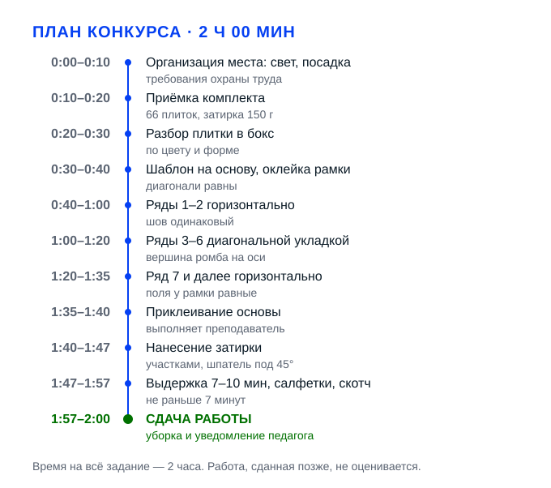
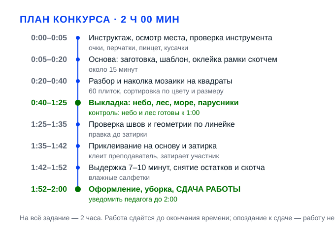
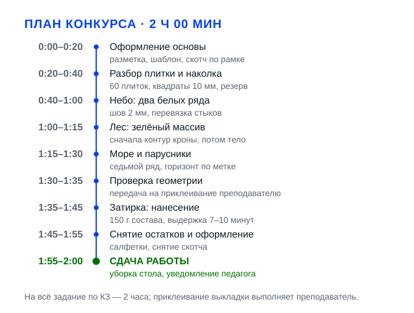

Мозаичник (ФВ)
Задания ниже — официальные файлы «Абилимпикс» (источник: abilympics-russia.ru), разложенные по категориям. Решения написаны по тексту задания, регламенту и критериям оценки; в них указано, что именно проверяет эксперт.
Школьник
14–16 лет, базовый уровень заданияВ официальном файле категории не разделены отдельными разделами — приводим задание целиком; различия по категориям смотрите в таблице модулей.
Пошаговое решение
Конкурсное задание категории «Школьники» — декоративное панно мозаики с геометрическим орнаментом на деревянной основе, и на всё отводится два часа. Работа идёт в три этапа: сначала основа и выкладка по готовому техническому рисунку, затем затирка поверхности готовым составом и в конце оформление изделия. Мозаику в этой категории не колют: участнику выдают 66 целых плиток, поэтому вся точность держится на разметке — шаблоне, посаженном на основу, и на одинаковом шве между плитками. Ряды выкладываются не подряд: первые два идут горизонтально, третий-шестой — диагональной укладкой, а с седьмого работа снова возвращается к горизонтали. Самая частая потеря баллов здесь не в цвете, а в шве, который «плывёт» к верхнему краю, и в затирке, снятой раньше или позже положенных 7–10 минут. Ниже — весь ход работы по шагам, с тем, как проверить каждый этап и где обычно ломается.

Задача 1. Организовать рабочее место и подготовить материалыМодуль 1 · организация работы
До первой плитки на основе должно быть готово всё: правильно поставленный стол, проверенный комплект из 66 плиток и 150 граммов затирки, рассортированная по цвету и форме мозаика в боксе. Эти пятнадцать минут кажутся потерей времени, но именно они решают, будет ли дальше работа идти спокойно или вы будете искать нужный оттенок в общей куче, пока секундомер идёт. На всё задание даётся два часа, и первая четверть часа — самая дешёвая для подготовки и самая дорогая для исправления спешки.
Действие 1.1. Устроить рабочее место по требованиям охраны труда
Шаг 1.1.1
Стол ставим так, чтобы свет от окна или лампы падал на панно слева и чуть спереди — тогда правая рука не закрывает рисунок и не бросает на него тень. Садимся прямо, корпус касается спинки стула, стопы полностью стоят на полу, а расстояние от глаз до шаблона держим 35–40 см: на такой дистанции видно и весь рисунок целиком, и отдельную плитку. Локти кладём на столешницу, а не держим на весу, иначе на мелкой укладке рука начинает дрожать. Всё лишнее — сумку, телефон, верхнюю одежду — сразу убираем из рабочей зоны.
Освещение слева и посадка в 35–40 см — это прямые требования охраны труда из конкурсного задания, и они влияют не на «культуру», а на точность. При свете сзади или справа на рисунок падает собственная тень, и одинаковое расстояние между плитками выдержать на глаз невозможно: шов то расширяется, то сужается. Правильная посадка экономит силы: два часа с наклонённой спиной дают к седьмому ряду заметную усталость руки.
Проверьте тремя признаками: тень от правой руки не ложится на рабочую зону, шаблон виден целиком без наклона корпуса, расстояние от глаз до стола примерно равно длине предплечья с ладонью — это и есть ваши 35–40 см. Колени под столешницей не упираются, стопы стоят на полу, а не болтаются.
Типичная ошибка — придвинуть панно почти к груди, «чтобы лучше видеть»: через полчаса спина проседает, корпус наклоняется, и шов начинает уезжать вниз плитка за плиткой. Вторая ошибка — сесть спиной к окну: рисунок в тени, расстояния контролируются на глаз, и к седьмому ряду накапливается перекос, который исправляется только полной перекладкой.
Эксперт оценивает организацию места в первые минуты, до начала выкладки, и отмечает именно требования охраны труда: свет слева, прямая посадка, свободная рабочая зона.
Шаг 1.1.2
Раскладываем инструмент по зонам так, чтобы каждая вещь бралась одной рукой и не пересекала рабочую зону: справа от панно — малярный скотч, влажные салфетки и щётка-совок, слева — бокс с рассортированной плиткой, перед собой — только основа с шаблоном. Затирку в 150 граммов и её шпатель держим в стороне, чтобы пакет не попал под локоть и не рассыпался раньше времени. Свободное место перед панно оставляем пустым: там будут ложиться плитки, которые вы примеряете.
Порядок на столе — это скорость. За два часа вы возьмёте плитку несколько десятков раз, и каждый лишний поиск по столу отнимает секунды, которые в конце считаются минутами. Кроме того, рассыпанная затирка или упавший скотч на мокром столе — это уже риск для самой работы: крошка под основой даёт перекос, а затирка, попавшая на шаблон, закрывает линии рисунка.
На столе остались только нужные предметы, каждая зона не пересекается с соседней, рабочая зона перед панно свободна. Проверьте, дотягиваетесь ли вы до скотча и салфеток не вставая и не перегибаясь через панно.
Ошибка — свалить всё в одну кучу «под рукой»: скотч прилипает к упаковке затирки, салфетки намокают от влажной губки, и в нужный момент вы тратите время на распутывание. Вторая ошибка — поставить бокс с плиткой справа: правой рукой вы работаете, и бокс оказывается под локтем, часть плитки смахивается на пол.
Эксперт смотрит на рациональность расположения материалов: взял ли участник нужное без суеты, не тянется ли через панно и не переставляет ли стол в середине работы. Беспорядок в зоне заготовок он отмечает как потерю темпа.
Шаг 1.1.3
Проверяем то, что может испортить работу: основа не шатается на столе, шаблон не помят и не порван, скотч отрывается ровной полосой, а не рвётся на куски, салфетки влажные, но не текут. Если мозаика хранится в общей коробке, убеждаемся, что среди плиток нет битых и сколотых — их сразу откладываем в сторону. Инструмент с дефектом по требованиям охраны труда подлежит замене, поэтому сомнительный скотч или порванный шаблон меняем до старта, а не в процессе.
Всё, что обнаружено после начала выкладки, исправляется дороже: замена шаблона означает снятие уже уложенных плиток, а порванный скотч на рамке придётся снимать по частям, рискуя сдвинуть крайние ряды. Требование о замене неисправных материалов записано в разделе охраны труда, и на площадке его выполняют через эксперта до начала работы, а не в середине.
Основа лежит на столе без качания, шаблон целый, полоса скотча отрывается ровно и ложится без разрывов, салфетки влажные. Битые плитки отложены отдельно, и их количество вы помните: если сколов больше двух-трёх, это повод сказать эксперту сразу.
Часто проверяют только мозаику, а скотч берут «какой есть»: на рамке он рвётся, клеится кусками, и граница рисунка получается рваной, хотя виноват не участник, а материал. Вторая ошибка — промолчать про сколотую плитку и положить её в дальний угол рисунка, где она всё равно видна.
Эксперт обращает внимание, осмотрел ли участник материалы до старта: это часть критерия организации работы. Отдельно фиксируется, попросил ли он замену дефектного материала до начала выкладки, а не после.
Действие 1.2. Принять и пересчитать комплект
Шаг 1.2.1
Пересчитываем мозаику: по заданию школьнику выдаётся 66 плиток, и это число надо сверить своими руками, а не на глаз. Раскладываем плитку рядами по десять штук — так счёт не сбивается, и сразу видно, чего не хватает. Одновременно проверяем затирку: пакет 150 граммов должен быть целым, сухим и не затвердевшим в комки. Влажные салфетки и малярный скотч тоже входят в комплект по одной упаковке и одному рулону, поэтому их наличие проверяется в том же проходе.
Пересчёт до старта — единственная возможность получить недостающее без потери времени. После начала работы замена идёт только через эксперта, и то если причина уважительная. Кроме того, точное число плиток сразу говорит, хватит ли материала на рисунок: если по шаблону видно, что рядов больше, чем позволяет комплект, лучше узнать это на первом действии, а не на предпоследнем ряду.
Счёт сошёлся с 66 плитками, затирка сухая и целая, салфетки и скотч на месте. Если плиток меньше, вы точно знаете, скольких не хватает, и можете назвать это число эксперту одной фразой. Проверьте пакет затирки на ощупь: он должен пересыпаться, а не стоять монолитом.
Ошибка — считать «примерно» и обнаружить нехватку в середине выкладки, когда рисунок уже наполовину собран и менять план поздно. Вторая ошибка — не проверить затирку: затвердевший в пакете состав не размешивается до рабочей консистенции, и швы получаются с крупинками, которые видны на полированной поверхности.
Комплектность и умение работать по перечню — часть оценки организации: эксперт видит, сверялся ли участник с заданием или начал сразу клеить. Обращение с точным числом нехватки он отмечает отдельно, как и молчание о недостаче.
Шаг 1.2.2
Осматриваем деревянную основу: лицевая сторона должна быть ровной, без задиров, сучков и следов старой краски, кромки — без сколов, а сама заготовка — не выгнутой винтом. Кладём её на стол и смотрим вдоль плоскости: просвет под линейкой или покачивание говорит о том, что основа поведена. Шаблон разворачиваем и сверяем с основой по размеру: линии рисунка должны попадать на поле, оставляя по краям ровные поля под рамку.
Плоская основа — условие ровной выкладки. На выгнутой заготовке плитка ложится с разным заглублением, и после затирки это видно как волна: одни квадраты выступают, другие утопают в шве. Если основа поведена, это надо предъявить до начала работы, потому что приклеивание выполняется преподавателем, и потом претензию не примут.
Основа лежит без качания, приложенная линейка не показывает просвета, кромки целые, шаблон совпадает с полем по размеру и оставляет поля одинаковой ширины с двух сторон. Влажное пятно или масляный след на лицевой стороне — повод протереть и просушить.
Типичная ошибка — взять первую попавшуюся заготовку, не посмотрев на плоскость: кривизна проявляется только после затирки, когда исправить уже ничего нельзя. Вторая — не заметить масляное пятно: клей на нём не держит, и плитка в этом месте отходит при первой же протирке.
Эксперт смотрит, осмотрена ли основа до приклеивания: дефект заготовки, предъявленный заранее, — не вина участника, а пропущенный дефект — уже ошибка.
Шаг 1.2.3
Если чего-то не хватает или материал с браком, сразу идём к эксперту, не начиная выкладку: называем точно, чего и сколько, что именно не так. Формулировка короткая и предметная: «не хватает трёх плиток синего цвета», «затирка в пакете затвердела», «на основе скол по кромке». Разговор занимает полминуты, а не десять, потому что вы уже знаете свой комплект по счёту.
Позднее обращение воспринимается как согласие с тем, что было выдано: считается, что участник принял комплект и начал работу. Спокойное и точное обращение входит и в оценку коммуникации — эксперт видит, умеет ли участник назвать проблему числами, а не жалобой в общем виде.
Обращение зафиксировано, ответ получен: недостающее выдали, брак заменили или объяснили, почему так и должно быть. Вы возвращаетесь к столу с полным комплектом и начинаете с чистого листа, а не с догадок.
Ошибка — тянуть до последнего и просить замену, когда рисунок уже начат: время уходит из модуля выкладки, а не из подготовки. Вторая, не менее частая — стесняться и «дотянуть» тремя плитками другого оттенка, понадеявшись, что никто не заметит: на геометрическом орнаменте разница цвета видна сразу.
Эксперт оценивает, как участник формулирует проблему и обращается ли вовремя. Спокойное точное обращение с числами ценится выше попытки скрыть нехватку, а промолчавший участник теряет и балл за организацию, и время.
Действие 1.3. Разложить плитку в бокс по цвету и форме
Шаг 1.3.1
Разбираем мозаику по цвету: белый, синий, жёлтый и остальные оттенки раскладываем в отдельные секции бокса, а внутри цвета — по форме и размеру, если плитка колотая и квадраты чуть отличаются. Делаем это по одному цвету за раз, чтобы не перепутать похожие оттенки: два близких синих на глаз различимы только рядом друг с другом, поэтому спорные плитки кладём между двумя кучками и сравниваем на свету. Сколотые и битые откладываем в отдельную щель бокса, чтобы они не попали в рисунок.
Сортировка напрямую ускоряет выкладку и сохраняет рисунок: в геометрическом орнаменте ошибка в один оттенок читается как сбой узора, а не как случайность. Когда цвет лежит отдельно, вы берёте нужную плитку не глядя и не перебираете всю массу, а рука при этом делает меньше движений — это заметно на последних рядах, когда время поджимает.
Каждый цвет в своей секции, спорные оттенки разложены по краям и проверены при дневном или рабочем свете, битые плитки отложены отдельно. Быстро проверьте себя: закройте глаза, затем возьмите плитку из секции и посмотрите — цвет должен совпадать с секцией без раздумий.
Ошибка — ссыпать всю мозаику в одну ёмкость и искать по ходу: на выкладке это даёт постоянные остановки, а на диагональных рядах, где нужен точный оттенок, вы теряете темп и начинаете брать «что ближе по цвету». Вторая ошибка — оставить битые плитки в общей массе: скол, положенный в шов, потом не заменить, он затирается вместе со всеми.
Эксперт смотрит на подготовку мозаики: рассортирована ли она по цвету и форме, как требует последовательность выполнения задания. Ему видно и то, отложены ли сколотые плитки, и сколько времени ушло на разбор.
Шаг 1.3.2
Бокс ставим слева от панно и разворачиваем секциями к себе так, чтобы порядок цветов соответствовал порядку рядов в рисунке: сначала тот цвет, который пойдёт в первые ряды, за ним следующий. Плитку укладываем в секции лицевой стороной вверх и свободно, не в навал: так её видно и удобно брать двумя пальцами за грани. Если бокс глубокий, не наполняем его до края — наклоняясь над высоким краем, вы не видите дно и берёте плитку вслепую.
Развёрнутый по ходу рисунка бокс экономит движение: рука идёт в ближайшую секцию, а не через весь стол, и вы не сбиваете уже выложенные ряды локтем. Свободная укладка без навала нужна, чтобы грани не скалывались друг о друга: скол на лицевой стороне плитки уже не спрятать, а в этом задании мозаика не режется, и заменить плитку нечем.
До любой секции бокса можно дотянуться, не наклоняясь над панно, плитка лежит лицевой стороной вверх, секции не переполнены. Проверьте, что при взятии плитки вы не задеваете пальцами соседние и не сдвигаете бокс с места.
Ошибка — поставить бокс за панно или справа: тянуться приходится через работу, и одна неловкая рука сдвигает уже выложенный угол. Вторая — набить бокс полным, «чтобы всё было под рукой»: крайние плитки вываливаются на стол и падают на пол, а на полу они бьются.
Эксперт отмечает эргономику: насколько продумано расположение мозаики относительно направления выкладки, дотягивается ли участник до каждой секции не вставая, не сдвигает ли бокс в процессе.
Шаг 1.3.3
Сверяем количество плиток в секциях с рисунком: считаем, сколько квадратов каждого цвета нужно по шаблону, и раскладываем их в секции по этому числу. Если по рисунку, например, основной цвет идёт сплошными полосами, эти плитки кладём в дальнюю секцию, а акцентные — в ближнюю: их нужно меньше, но брать их придётся чаще и точнее. Так вы сразу видите, что материала хватает и что ни один цвет не «уйдёт» в середине работы.
Проверка по цветам — это проверка замысла, а не формальность. Геометрический орнамент строится на повторяющихся полосах и ромбах, и если какого-то цвета не хватит на последний ряд, придётся менять рисунок, а это потеря баллов за соответствие техническому рисунку. Дефицит, замеченный на сортировке, ещё можно закрыть у эксперта до начала выкладки.
Число плиток в каждой секции совпадает с расчётом по шаблону, остаток свободных плиток вынесен отдельно, акцентные цвета лежат ближе к руке. Если остаток большой, это нормально: он пойдёт на подгонку в конце, но его наличие надо знать заранее.
Ошибка — не считать по цветам и выложить полосы в произвольном порядке: к седьмому ряду выясняется, что белого больше нет, и рисунок «съезжает» на другой оттенок. Вторая — сразу отложить все «лишние» плитки в сторону, а потом обнаружить, что именно они были нужны для подгонки края.
Эксперт сравнивает раскладку по цветам с техническим рисунком: видно, понял ли участник композицию до начала работы. Если цвета разложены по порядку рядов, это читается как осознанная подготовка.
Задача 2. Оформить основу и закрепить шаблонМодуль 1 · основа и разметка
Шаблон на основе — это единственная разметка, по которой вы будете выкладывать плитку: ни циркуля, ни линейки в работе нет, всё держится на том, насколько точно лёг лист. Сдвиг шаблона на два миллиметра не виден глазом сразу, но он накапливается в каждом ряду, и к рамке рисунок приходит с перекосом, который уже не исправить. Поэтому оформление основы делается медленно и с двумя проверками — по осям и по диагоналям.
Действие 2.1. Подготовить деревянную заготовку
Шаг 2.1.1
Кладём заготовку перед собой лицевой стороной вверх и определяем, какая сторона лицевая: обычно это сторона без следов крепления и без штампов, с более ровной текстурой. Переворачивать основу в процессе нельзя, поэтому сторону выбираем сразу и запоминаем. Кромки осматриваем по всему периметру, проводя пальцем: задиры и сколы дадут бугор, на котором шаблон не приляжет, а плитка у края встанет с зазором.
Лицевая сторона задаёт, куда смотрит готовая работа, и на деревянной основе разница между сторонами обычно есть. Задир по кромке мешает шаблону лечь в плоскость, а плитка в первом и последнем ряду получает лишний зазор, который потом забивается затиркой неравномерно. Эти дефекты видно на готовом панно, и они идут в оценку аккуратности исполнения.
Основа лежит лицом вверх, кромки гладкие на ощупь, на лицевой стороне нет влажных и масляных пятен. Проведите ладонью по плоскости: она должна быть прохладной и однородной, без липких мест. Разница толщины по кромкам не должна ощущаться под пальцем: проведите по периметру ещё раз.
Ошибка — взять основу, не посмотрев на другую сторону, и обнаружить штамп или след клея уже под шаблоном. Вторая — оставить мелкий задир «он всё равно под скотчем»: под малярной лентой он даёт воздушный пузырь, лента отходит, и край рамки получается грязным.
Эксперт осматривает основу вместе с участником на старте: целостность заготовки и её ориентация — часть культуры работы.Он же смотрит, не переворачивали ли основу в процессе: лицевая сторона должна остаться той же, что выбрана на старте.
Шаг 2.1.2
Протираем лицевую сторону сухой салфеткой, а если есть жирное или липкое пятно — влажной, после чего обязательно даём высохнуть на воздухе, не ускоряя процесс над лампой. Пыль снимаем мягкой кистью или сухой тканью от центра к краям, чтобы не загнать крошку в угол. Влажную основу не обклеиваем: скотч на сыром дереве держит плохо, а шаблон под ним размокает и тянется.
Клей, который наносит преподаватель, работает по чистой поверхности: пыль и масло снижают сцепление, и отдельные плитки потом «звенят» под пальцем. Мокрая древесина при высыхании даёт усадку, шаблон смещается вместе с ней, и вся разметка уходит. Просушка занимает минуты, а переделка — полряда.
Поверхность сухая на ощупь, без ворса и пыли, пятен не осталось. Проверьте тыльной стороной ладони: она чувствует влагу лучше пальцев, и на прохладном сухом дереве ощущение ровное. Если протирали влажной салфеткой, дайте основе высохнуть полностью, не меньше пяти минут, прежде чем клеить.
Частая ошибка — протереть влажной салфеткой и сразу клеить: под скотчем остаётся влага, бумага шаблона идёт волной. Вторая — смахнуть пыль рукой: крошка остаётся под шаблоном и создаёт бугры, по которым плитка ложится неровно.
Эксперт смотрит, подготовлена ли поверхность перед разметкой, и не появились ли на основе подтёки от неаккуратной протирки.Отдельно отмечается, не осталось ли на основе ворса от ткани: ворс под шаблоном даёт бугры.
Шаг 2.1.3
Находим центр основы: соединяем углы тонкими карандашными линиями по линейке или отмеряем половину ширины и высоты от кромок. Через центр проводим вертикальную и горизонтальную оси, следя, чтобы они были строго параллельны кромкам — расстояние от оси до кромки сверху и снизу должно совпадать. Линии ведём мягко, без нажима, чтобы потом их можно было стереть резинкой, не поднимая волокна дерева.
Оси нужны не для красоты: по ним вы будете ставить первый ряд и проверять, не «поехал» ли рисунок к концу выкладки. Без осей единственный ориентир — кромка основы, а она может быть не идеально ровной, и тогда перекос спишут на вас. Кроме того, отбитые оси позволяют сразу увидеть, симметричен ли рисунок относительно рамки.
Оси пересекаются в центре, расстояния от вертикальной оси до левой и правой кромки равны, от горизонтальной — до верхней и нижней. Проверьте линейкой в двух местах каждой оси, а не в одном: расхождение в пару миллиметров на длине уже заметно.
Ошибка — провести оси «на глаз» по середине: смещение в три миллиметра не видно, пока не начнёте выкладывать симметричные полосы. Вторая — давить карандашом так, что линия остаётся вдавленной: под затиркой она проступает тёмным следом, и стереть её уже нельзя.
Эксперт проверяет разметку до начала выкладки: совпадение осей с центром и параллельность кромкам видны сразу, если приложить линейку.Смещение осей на два-три миллиметра он видит линейкой сразу и считает это ошибкой разметки, а не мелочью.
Действие 2.2. Прикрепить шаблон на основу
Шаг 2.2.1
Кладём шаблон на основу рисунком вверх и совмещаем его оси с карандашными: сначала вертикальную, затем горизонтальную, придерживая лист ладонью у центра, а не за угол. Совмещать надо от центра к краям, иначе лист «пружинит» и уходит одной стороной. Если шаблон больше поля, подрезать его нельзя — сдвигаем так, чтобы поля по краям остались одинаковыми, и предъявляем это эксперту до фиксации.
Шаблон — единственная разметка в работе, и любое его смещение переносится на весь рисунок. При совмещении от центра ошибка распределяется симметрично и поля остаются ровными, а при совмещении по одному углу противоположный угол уходит на несколько миллиметров. Одинаковые поля по краям — это то, что видно на готовом панно в рамке.
Оси шаблона лежат точно на карандашных линиях, поля слева и справа одинаковой ширины, сверху и снизу — тоже. Посмотрите на панно с расстояния вытянутой руки: рисунок должен стоять в основе ровно, без завала в сторону.
Ошибка — придерживать лист за угол: он проворачивается вокруг пальца, и к противоположному краю набегает перекос. Вторая — выровнять шаблон по одной кромке и не проверить вторую: на неровной кромке основы рисунок встаёт клином, а это уже потеря баллов за композицию.
Эксперт смотрит на совмещение шаблона с осями и на равномерность полей — это первый признак, что участник понимает геометрию задания.Если шаблон лёг с завалом в сторону, участник теряет баллы уже на этом этапе, до первой плитки.
Шаг 2.2.2
Фиксируем шаблон малярным скотчем: небольшие полоски по углам и по одной в середине каждой длинной стороны, прижимая их от центра полоски к краям, чтобы под лентой не осталось воздуха. Скотч не тянем: натянутая лента стягивает бумагу к себе, и шаблон сдвигается на миллиметр-другой после того, как вы уберёте руку. Каждую полоску проглаживаем пальцем или ногтем по всей длине.
Малярный скотч в комплекте один рулон, и его надо растянуть на всю работу: на фиксацию шаблона и на оклейку рамки. Прижатая от центра лента держит без морщин, а натянутая — отходит по краям и уносит с собой бумагу. Если шаблон сдвинется под лентой, вы будете выкладывать по неверной разметке до самого конца, а заметите это только на последнем ряду.
Шаблон не двигается, если слегка толкнуть его пальцем в сторону; под лентами нет пузырей и складок; края полосок не задираются. Проверьте углы — именно они отходят первыми. Лента не должна отходить, если провести по ней пальцем вдоль кромки: держится по всей длине.
Ошибка — приклеить шаблон по всему периметру сплошной лентой: скотч кончится до оклейки рамки, а снимать сплошную ленту потом придётся вместе с верхним слоем бумаги. Вторая — клеить на влажную основу или на пыль, лента отваливается в середине работы.
Эксперт обращает внимание, экономно и аккуратно ли расходуется скотч: комплект рассчитан на всю работу, и его нехватка к концу — организационная ошибка.
Шаг 2.2.3
Проверяем шаблон на перекос по диагоналям: измеряем расстояние от угла рисунка до противоположного угла по двум диагоналям, и оно должно совпадать с точностью до миллиметра. Дополнительно проверяем, что линии рисунка параллельны кромкам: прикладываем линейку к длинной линии и смотрим зазор к кромке с двух концов. Если диагонали разные — ослабляем одну полоску и подправляем лист, а не тянем за угол.
Равные диагонали — единственный надёжный признак того, что прямоугольник не превратился в ромб или трапецию. На геометрическом орнаменте перекос читается сразу: полосы идут не параллельно рамке, а клином. Правка на этом этапе занимает минуту, правка после выкладки — снятие всех плиток и повторная работа, на которую времени в двух часах нет.
Две диагонали равны, линии рисунка параллельны кромкам, шаблон не отходит по углам. Измеряйте по внутренним углам рисунка, а не по краю листа: край может быть обрезан неровно. Расхождение диагоналей больше двух миллиметров означает перекос, и убирать его надо до выкладки.
Ошибка — проверять только одну диагональ и успокаиваться: ромб с равными сторонами даёт одну диагональ короче другой, и это видно лишь при сравнении. Вторая — подтягивать шаблон за угол, не отклеив ленту: бумага рвётся у скотча, и в месте разрыва рисунок становится нечитаемым.
Эксперт проверяет геометрию шаблона линейкой до старта выкладки: равные диагонали он отмечает как признак грамотной подготовки.Он же смотрит, не тянул ли участник шаблон за угол: разрывы бумаги у скотча видны как белые полосы.
Действие 2.3. Закрыть рамку скотчем до края рисунка
Шаг 2.3.1
Оклеиваем поверхность рамки малярным скотчем, начиная от внутреннего края рисунка и ведя полосу наружу, к кромке основы. Полосы кладём встык, без нахлёста на линии рисунка: граница ленты должна идти ровно по краю технического рисунка, иначе после затирки на панно останется неокрашенная полоса или, наоборот, затирка зайдёт на поле. Углы рамки закрываем отдельными короткими полосками, разворачивая их по диагонали угла.
Оклейка рамки — это защита полей от затирки: состав наносится шпателем и легко выходит за границы рисунка. Если лента заходит на рисунок, после её снятия останется чистая полоса без затирки, и шов у края будет выглядеть провалом. Если лента не доходит до края рисунка, затирка прилипает к полю, и оттереть её от дерева почти невозможно — она въедается в волокна.
Лента лежит ровно по границе рисунка без нахлёста и без просвета, углы закрыты, пузырей нет. Проведите ногтем по кромке ленты: она должна держаться, а не отходить. Стыки полос должны совпадать без двойного слоя ленты на линии рисунка: двойной слой даёт ступеньку.
Ошибка — клеить полосу «примерно по краю»: на глаз разница в два миллиметра незаметна, а на готовом панно видна как рваная граница между затиркой и полем. Вторая — натягивать ленту на углу, отчего она отходит через десять минут и под неё затекает затирка.
Эксперт проверяет границу оклейки до затирки: ровная линия ленты по краю рисунка — прямой признак аккуратности.Отдельно фиксируется, не заходит ли лента на цветовые зоны: наезд на клетку рисунка ведёт к ошибке цвета.
Шаг 2.3.2
Прикатываем ленту по всей длине, проглаживая её пальцем от середины к краям, а на поворотах дополнительно прижимаем ногтем. Особое внимание — кромке у линии рисунка: именно там лента чаще всего отходит, потому что бумага шаблона под ней имеет микрорельеф. Если полоса легла с морщиной, лучше переклеить её сразу: морщина даёт канал, по которому затирка затекает под ленту.
Хорошо прикатанная лента держит затирку и снимается одним движением, оставляя чистую границу. Плохо прижатая — пропускает состав по краю, и после снятия вы получаете неровную кромку с наплывами, которую уже нечем исправить: затирка к этому моменту схватилась.
Пройдите пальцем вдоль кромки: не должно быть мест, где лента приподнимается. Угол ногтя не должен проскальзывать под край ленты. Проверьте углы и стыки полос: именно там лента чаще всего отходит, и именно оттуда затирка затекает под неё.
Ошибка — прижать ленту только в середине, оставив концы: они отходят первыми, и затирка затекает именно туда. Вторая — клеить по пыльной поверхности: пыль работает как разделитель, и лента снимается вместе с затиркой, оголяя шов.
Эксперт смотрит на качество прикатки: от этого зависит, придётся ли участнику отчищать поля после затирки.Эксперт смотрит, переклеивает ли участник морщинистую полосу сразу: морщина — это канал для затирки.
Шаг 2.3.3
Ещё раз проверяем, что рисунок не перекрыт: все линии и границы цветовых зон видны полностью, лента не заходит ни на один квадрат, который нужно заполнить плиткой. Осматриваем панно под углом к свету — так видны места, где лента наехала на тонкую линию. Если обнаружен нахлёст, подрезаем ленту ножницами по границе рисунка или переклеиваем полосу. Ножницы держим лезвиями от себя, подрезая ленту по линии рисунка короткими движениями, чтобы не зацепить бумагу шаблона.
Перекрытая линия рисунка — это не только эстетика: по ней определяется, какого цвета плитка должна лечь в конкретную клетку, и закрытый участок вы заполните по догадке. Ошибка цвета в геометрическом орнаменте — самая заметная из всех, потому что рисунок симметричен и любой сбой читается сразу. Проверка под углом занимает полминуты и снимает этот риск.
Все линии рисунка читаются, нахлёстов нет, граница ленты совпадает с краем поля. Пройдите взглядом по периметру: на каждом участке между лентой и рисунком не должно быть зазора или наезда. Заодно проверьте, что лента по углам не заходит на соседнюю сторону рисунка.
Ошибка — не проверять вовсе, положившись на первое впечатление: нахлёст в один-два миллиметра виден только при косом свете. Вторая — подрезать ленту ножом по мокрой или пыльной поверхности, отчего край получается рваным и лента начинает отходить.
Эксперт оценивает, читается ли рисунок целиком перед началом выкладки: открытые линии — условие точного попадания в цвета.Эксперт оценивает, читается ли рисунок целиком перед началом выкладки: открытые линии — условие точного попадания в цвета.
Задача 3. Выложить мозаику по техническому рисункуМодуль 1 · выкладка панно
Основная часть задания, на которую уходит больше половины двух часов: сначала два горизонтальных ряда, затем четыре диагональных, потом седьмой и все следующие снова горизонтально. Логика такой последовательности в том, что диагональная середина держится на двух горизонтальных «якорях» сверху и снизу, и рисунок не разъезжается. Выкладывать надо с одинаковым расстоянием между плитками — именно этот шов, а не цвет, эксперт проверяет линейкой.
Действие 3.1. Выложить первый и второй ряд горизонтально
Шаг 3.1.1
Начинаем с нижнего левого угла рисунка: первую плитку ставим точно в угол, совместив две её грани с линиями шаблона, и слегка прижимаем ладонью, чтобы она не сдвинулась при укладке следующей. Дальше кладём плитку за плиткой вправо по нижней линии, каждый раз приставляя новую грань к предыдущей и сверяясь с линией рисунка. Ряд ведём до правой границы поля, не перескакивая через клетки и не оставляя пропусков.
Первый ряд — это база: по нему будут ровняться все последующие, и любая его кривизна разойдётся веером вверх по панно. Старт от угла нужен потому, что угол рисунка совпадает с углом поля, и он единственная точка, где ошибка не накапливается. Если начать с середины, придётся подгонять два направления сразу, а материала на подгонку в комплекте из 66 плиток нет.
Первая плитка стоит в углу без зазора к обеим линиям, последняя в ряду упирается в границу поля, весь ряд идёт по одной линии без уступов. Посмотрите вдоль ряда прищурившись: верхние грани плиток должны образовать прямую.
Ошибка — начать с середины «чтобы было симметрично»: к краям приходит полуплитка, а резать мозаику в категории школьников не предполагается. Вторая — поставить первую плитку на глаз, не в угол: сдвиг на два миллиметра уводит весь ряд, и последняя плитка не встаёт на место.
Эксперт смотрит на старт выкладки: попадание в угол рисунка и ровность первого ряда он отмечает до того, как панно закроется следующими рядами.Отдельно он смотрит, не сдвинулся ли ряд, пока укладывались следующие плитки: свободная плитка легко ползёт.
Шаг 3.1.2
Расстояние между плитками держим одинаковым по всей длине ряда: ориентир — сама линия технического рисунка, ширина которой и задаёт шов примерно в два миллиметра. Удобно взять обрезок плитки или полоску бумаги нужной ширины и вставлять её между плитками как шаблон, а не полагаться на глаз. Каждую плитку после установки чуть подтягиваем к предыдущей, пока шаблон не встанет между ними плотно, но без нажима.
Шов — главный измеримый признак качества мозаики. Слишком широкий шов выглядит как провал, слишком узкий не даёт затирке зайти между плитками, и после затирки поверхность получается с наплывами. Ровный шов одинаковой ширины эксперт проверяет линейкой на нескольких участках, и именно он отличает аккуратную выкладку от быстрой.
Ширина шва одинакова во всех стыках ряда, шаблонная полоска входит между любыми двумя плитками с одинаковым усилием. Проверьте три-четыре стыка в разных местах ряда: если полоска входит туго в одном месте и свободно в другом — ряд надо подтянуть.
Ошибка — выкладывать «плотно, без шва», считая, что так аккуратнее: затирка не войдёт, и на поверхности останутся пустые канавки. Вторая — держать шов на глаз: к концу ряда он расширяется на миллиметр, и это видно как клин.
Эксперт измеряет шов линейкой в нескольких местах: одинаковость расстояний между плитками — отдельный критерий задания.Отдельно отмечается, пользуется ли участник шаблоном ширины шва или держит его на глаз: разница видна по всей длине ряда.
Шаг 3.1.3
Второй ряд кладём над первым, соблюдая тот же порядок и тот же шов: плитка встаёт над плиткой первого ряда, а вертикальные стыки совпадают или смещаются так, как показано на рисунке. Ведём ряд слева направо, придерживая ладонью уже уложенные плитки, чтобы не сдвинуть их краем новой. После второго ряда проверяем вертикальность: угол между рядами должен быть ровно 90 градусов, а не «почти».
Два горизонтальных ряда образуют нижний якорь для диагонали, которая пойдёт следом. Если второй ряд «поехал» относительно первого, диагональные ряды лягут с перекосом, и исправить это можно только полной перекладкой середины. Проверка угла сразу стоит полминуты, проверка после шестого ряда — половину оставшегося времени.
Вертикальные стыки совпадают с рисунком, расстояние от левой кромки до первой плитки одинаково в обоих рядах, угол между рядами прямой. Приложите угольник или лист бумаги с прямым углом в левый нижний угол: расхождение видно сразу.
Ошибка — класть второй ряд, не глядя на первый, и уводить его на плитку в сторону: дальше диагональ приходится «догонять» рисунок. Вторая — проверять вертикаль по кромке основы, которая может быть непараллельна линиям шаблона.
Эксперт проверяет угол между первыми рядами: он видит, выложены ли они по разметке или на глаз.Он же смотрит, проверяет ли участник угол между рядами инструментом, а не только взглядом сверху.
Действие 3.2. Выложить ряды с третьего по шестой диагональной укладкой
Шаг 3.2.1
Перед диагональю находим на шаблоне, от какой клетки начинается наклон: по рисунку это обычно угол ромба, и его вершина должна попасть точно на вертикальную ось. Проверяем направление наклона — влево или вправо идёт диагональ на вашем рисунке, потому что симметричный орнамент легко перепутать. Первую плитку диагонального ряда ставим так, чтобы она касалась предыдущего ряда одним углом, а не целой гранью.
Диагональ — самая уязвимая часть выкладки: ошибка направления на одном ряду разворачивает весь узор, и рисунок перестаёт читаться. Клетки шаблона здесь единственный ориентир, потому что кромки основы и предыдущие ряды уже не дают прямого указания. Привязка к оси нужна, чтобы диагонали сошлись в центре симметрично.
Вершина первого ромба стоит на вертикальной оси, направление наклона совпадает с рисунком, плитка касается предыдущего ряда одним углом. Отойдите на шаг и посмотрите: диагональ должна читаться как единая линия, а не как ступенька.
Ошибка — начать диагональ от края, а не от оси: ромбы уходят в сторону, и к правой стороне рисунок не сходится. Вторая — перепутать направление наклона, что видно только после третьего диагонального ряда, когда перекладывать уже дорого.
Эксперт сверяет начало диагонали с техническим рисунком: направление наклона и привязка к оси — первое, что он проверяет.Он же отмечает, привязано ли начало диагонали к оси: без привязки симметрия орнамента уже не сойдётся.
Шаг 3.2.2
Каждый следующий элемент диагонального ряда ставим углом к углу предыдущего, сохраняя одинаковый шов с обеих сторон: полоска-шаблон должна входить и по диагонали, и по вертикали, иначе ромб получится перекошенным. Ведём ряд по наклонной до края поля, затем переходим на следующий ряд, начиная его от того же края, от которого начинали предыдущий. Так диагональные линии ложатся параллельно друг другу.
При диагональной укладке плитка опирается на два соседа, и шов приходится держать сразу в двух направлениях. Если контролировать только одно, ромбы получаются разной ширины, и узор «дышит» — это заметно на общем виде панно. Параллельность диагоналей важна и для симметрии орнамента, которую эксперт проверяет по осям.
Ромбы одинакового размера, диагональные линии параллельны, шов одинаков по обеим сторонам каждой плитки. Проверьте две соседние диагонали: расстояние между ними должно быть постоянным по всей длине. Считайте число ромбов в каждой диагонали: по рисунку оно должно быть одинаковым.
Ошибка — ставить плитку в диагонали на глаз, без шаблона шва: к шестому ряду ромбы расширяются, и рисунок перестаёт быть геометрическим. Вторая — вести каждую новую диагональ от другого края: линии идут навстречу и сходятся клином.
Эксперт смотрит на параллельность диагоналей и одинаковость ромбов: это основной признак качества выкладки в этом модуле.Он же смотрит, с какой стороны участник ведёт каждую новую диагональ: смена края видна по клину.
Шаг 3.2.3
На стыке диагонали с горизонтальным рядом следим за тем, чтобы плитки не наезжали друг на друга: если по рисунку остаётся треугольный просвет, его закрывают целой плиткой, повёрнутой по рисунку, а не обломком. Край диагонального ряда у рамки выравниваем по линии шаблона, подтягивая плитки к краю по одной. Стык должен читаться как продолжение узора, а не как шов между двумя работами.
Стык — место, где чаще всего появляются зазоры шире нормы и наползания плиток. Приклеивание выполняет преподаватель, и любая плитка, лежащая поверх соседней, при прижиме даст бугор, который затиркой не исправить. Целые плитки вместо обломков нужны потому, что в комплекте школьника нет инструмента для наколки мозаики.
Плитки не перекрывают друг друга, зазоры на стыке не шире общего шва, просветы закрыты целыми плитками по рисунку. Проведите пальцем по стыку: ступеньки быть не должно. Проверьте стык на просвет: свет не должен проходить между плитками шире общего шва.
Ошибка — закрывать треугольные просветы обломками «чтобы не было дырки»: обломок не держится на клею так же прочно и даёт неровную поверхность. Вторая — сдвигать весь диагональный ряд к рамке, отчего на противоположной стороне появляется зазор в полплитки.
Эксперт осматривает стыки рядов: наползания и широкие зазоры на границе диагонали и горизонтали он отмечает как дефект выкладки.Он же обращает внимание, нет ли обломков вместо целой плитки: в комплекте школьника их быть не должно.
Шаг 3.2.4
Пройдя четыре диагональных ряда, останавливаемся и сверяем середину панно с шаблоном целиком: цвета в каждой клетке, число клеток в полосах, симметрию относительно вертикальной оси. Смотрим не по одной плитке, а полосами — так ошибка цвета видна как выбивающееся пятно. Если нашли неверную клетку, меняем плитку сразу, пока рядом не легли следующие ряды и её можно снять, не разбирая половину работы.
Четыре диагональных ряда — это середина композиции, и после них рисунок уже читается. Ошибка цвета, найденная здесь, исправляется за минуту; та же ошибка, найденная после седьмого ряда, требует разбора и стоит времени, которого в двух часах нет. Симметрия относительно оси — прямой критерий соответствия техническому рисунку.
Цвета в клетках совпадают с шаблоном, полосы одинаковой ширины, левая и правая половины симметричны. Отойдите на два шага и прищурьтесь: любой сбой цвета проявится как тёмное или светлое пятно на ровном узоре.
Ошибка — проверять по одной плитке, водя пальцем: так глаз не видит полосы и пропускает перепутанный оттенок. Вторая — заметить ошибку и не исправить, понадеявшись, что «не видно»: на симметричном орнаменте видно всегда, и это минус за соответствие рисунку.
Эксперт сравнивает центр панно с эталоном: симметрия и точность цветов в средней части — самая заметная часть оценки.Он же смотрит на порядок работы: проверяет ли участник середину до того, как закрыть её следующими рядами.
Действие 3.3. Выложить седьмой и последующие ряды горизонтально
Шаг 3.3.1
С седьмого ряда возвращаемся к горизонтальной укладке: первый ряд после диагонали ставим по линии шаблона, выравнивая его по уже собранной середине, а не по кромке основы. Плитки кладём слева направо, приставляя грань к грани, и каждый раз проверяем, что ряд идёт параллельно первому и второму. Если между диагональю и горизонтальным рядом остаётся неровный зазор, распределяем его по всей длине, а не собираем в одном месте.
Переход с диагонали на горизонталь — точка, где рисунок чаще всего ломается: горизонтальный ряд, поставленный по кромке, а не по узору, оказывается повёрнутым относительно середины. Распределённый зазор выглядит как обычный шов, собранный в одном месте — как щель, которая после затирки станет широкой полосой. Параллельность первому ряду проверяется просто и надёжно.
Седьмой ряд параллелен первому и второму, зазор на стыке с диагональю не шире общего шва и распределён по длине. Приложите линейку вдоль первого и седьмого ряда: расстояние между ними должно быть одинаковым слева и справа.
Ошибка — выравнивать седьмой ряд по кромке заготовки: если кромка непараллельна шаблону, весь верх панно идёт клином. Вторая — сдвинуть ряд вплотную к диагонали, оставив щель у противоположного края, где её уже нечем закрыть.
Эксперт проверяет, сохранилась ли геометрия при переходе с диагонали на горизонталь: параллельность верхних и нижних рядов видна сразу.Он же проверяет переход с диагонали на горизонталь линейкой: параллельность первых и верхних рядов видна сразу.
Шаг 3.3.2
Добираем ряды до верхней границы рисунка, укладывая плитку за плиткой и следя за полем у рамки: расстояние от последней плитки до края оклейки должно быть таким же, как по остальным сторонам. Последние ряды кладём особенно внимательно, потому что подтягивать их уже некуда — сверху рамка. Если по рисунку у края остаётся неполная клетка, ставим целую плитку по линии шаблона и оставляем поле, а не выходим за границу рисунка.
Верхняя часть панно видна в рамке целиком, и именно там замечают неровное поле: широкая полоса с одной стороны и узкая с другой читается как перекошенная композиция. Заходить плиткой за линию рисунка нельзя — там начинается оклеенное поле, и плитка, приклеенная на скотч, после его снятия останется висеть над затиркой. Поле одинаковой ширины по периметру — часть оценки оформления изделия.
Поле между последним рядом и краем оклейки одинаково по всем четырём сторонам с точностью до миллиметра, плитки не выходят за линию рисунка, верхний ряд ровный. Проверьте линейкой в четырёх местах, а не на глаз.
Ошибка — дойти до рамки и «дозаполнить» остаток обломками: поле получается рваным, а обломки плохо держатся. Вторая — наехать плиткой на оклеенное поле, чтобы не оставлять зазора: после снятия скотча эта плитка окажется на границе затирки и испортит кромку.
Эксперт измеряет поля по периметру: равномерность полей — один из самых наглядных критериев оформления.Отдельно он отмечает, выходит ли плитка за линию рисунка на поле: такая плитка после снятия скотча остаётся без опоры.
Шаг 3.3.3
Когда рисунок выложен полностью, отходим от стола и смотрим на панно целиком с расстояния двух шагов, затем сверяем с шаблоном по крупным элементам: полосы, ромбы, угловые мотивы. Проверяем симметрию левой и правой половины и одинаковость швов по всей площади, а не только в нижней части. Найденные сдвиги помечаем для себя и правим до приклеивания, потому что после клея исправление невозможно.
Целостный взгляд с расстояния ловит то, чего не видно вблизи: волну в швах, перекос полос, разницу в оттенках. Сверка по крупным элементам быстрее, чем по клеткам, и надёжнее, потому что орнамент строится на повторении. До приклеивания плитка лежит свободно, и её можно сдвинуть на миллиметр без следа — после клея она уже держится намертво.
Рисунок читается как единый орнамент, полосы и ромбы на своих местах, швы одинаковы по всей площади, левая и правая половины симметричны. Сверьте по шаблону три-четыре узловых точки: углы, центр, пересечения полос.
Ошибка — смотреть на панно только сверху вниз, сидя за столом: перспектива скрадывает перекос, который с двух шагов очевиден. Вторая — править одну плитку, не проверив соседние, отчего сдвиг переходит дальше по ряду.
Эксперт осматривает панно целиком до приклеивания: общий вид и симметрия орнамента — основа оценки соответствия рисунку.Он же смотрит, отходит ли участник от стола для общего взгляда: с дистанции видно то, что скрыто вблизи.
Действие 3.4. Проверить выкладку и передать основу на приклеивание
Шаг 3.4.1
Проверяем швы линейкой в четырёх-пяти местах: внизу, в середине, на диагонали и у верхнего края. Измеряем ширину двух-трёх стыков подряд и сравниваем между собой, а не с эталоном на память — важно, чтобы шов был одинаковым по всей работе. Отдельно смотрим шов на стыке горизонтальных и диагональных рядов: там он чаще всего шире остальных. Замеры запоминаем или записываем, чтобы было с чем сравнить после затирки.
Одинаковый шов — то, что отличает мозаику от просто приклеенной плитки, и эксперт проверяет его именно линейкой, а не глазом. Шов шире нормы на стыке диагонали забивается затиркой глубже и выглядит как канава; шов уже нормы не заполняется вовсе. Числа нужны, чтобы решение о подтяжке принималось по факту, а не по ощущению.
Ширина шва одинакова во всех проверенных точках с точностью до половины миллиметра, включая стыки диагонали и горизонтали. Если где-то шов шире на миллиметр и больше, эту плитку подтягивают до приклеивания.
Ошибка — проверять только нижние ряды, которые лежат перед глазами: верх панно и стыки остаются без контроля, а именно там шов расходится. Вторая — «подтянуть» плитку, надавив на неё сверху: она сдвигает соседние, и вместо одного шва расширяется другой.
Эксперт выборочно измеряет шов в нескольких зонах: одинаковость расстояний между плитками — измеримый критерий, по которому сложно поспорить.Он же сравнивает швы в разных зонах между собой: важно не соответствие эталону, а одинаковость по всей площади.
Шаг 3.4.2
Подгоняем то, что выбивается: сколотую плитку меняем на целую из остатка, сдвинутую возвращаем на линию рисунка, слишком широкий стык подтягиваем, осаживая соседние плитки по ряду, а не одну. Делаем это короткими движениями, придерживая второй рукой соседние плитки, чтобы не потянуть за собой весь ряд. Если после подгонки шов всё равно шире нормы, распределяем разницу по нескольким стыкам вместо одного.
Подгонка перед приклеиванием — последняя возможность что-то исправить: дальше плитка фиксируется клеем, и любое вмешательство означает скол или отрыв. Замена сколотой плитки именно сейчас важна потому, что скол после затирки читается как дефект материала, а не как случайность. Распределение разницы по стыкам делает шов визуально ровным.
Все плитки целые, ни одна не выходит за линию рисунка, швы выровнены по всей площади. Пройдите вдоль каждого ряда пальцем: ступенек и выступов быть не должно. Отдельно проверьте крайние плитки у рамки: они чаще всего выбиваются из линии.
Ошибка — оставить сколотую плитку в углу, «где не видно»: после затирки скол заполняется тёмным составом и становится заметным пятном. Вторая — подтягивать один стык, сдвигая плитку через силу: соседние расходятся, и появляется волна по всему ряду.
Эксперт смотрит, есть ли в работе сколотые и битые плитки: замена дефектных элементов входит в аккуратность исполнения.Он же смотрит, не осталось ли в работе плитки со сколом на лицевой стороне: после затирки скол темнеет.
Шаг 3.4.3
Сообщаем преподавателю, что выкладка готова, и передаём основу на приклеивание: по заданию эту операцию выполняет он, участник в ней не участвует. Перед передачей коротко называем, что сделано и что вызывает сомнение — например, что один шов пришлось распределить. Основание переносим двумя руками за противоположные кромки, не наклоняя, чтобы свободно лежащая плитка не поехала. Пока идёт приклеивание, готовим затирку и салфетки.
Приклеивание — единственная операция, которую по конкурсному заданию выполняет преподаватель, и от того, как передана основа, зависит, сохранится ли выкладка. Перенос за кромки и без наклона — простая предосторожность, которая спасает полчаса работы. Освободившееся время разумно потратить на подготовку затирки, потому что её надо нанести сразу после приклеивания, пока клей схватывается.
Основа передана без смещения плитки, преподаватель подтвердил приём, затирка и салфетки к этому моменту подготовлены. Проверьте, что после переноса рисунок не сдвинулся: сравните положение крайних плиток с оклейкой.
Ошибка — поднимать основу за один край: свободная плитка сползает к противоположной стороне, и выкладку приходится собирать заново. Вторая — отойти в сторону и ждать, теряя время, вместо подготовки затирки.
Эксперт фиксирует момент готовности выкладки и аккуратность передачи основы: это организационный критерий, который виден по темпу работы.Он же отмечает, чем занят участник, пока идёт приклеивание: подготовленная затирка экономит минуты.
Задача 4. Затереть поверхность готовым составомМодуль 2 · затирка швов
После приклеивания панно получает второй слой работы: швы заполняются готовым составом из выданных 150 граммов, а через 7–10 минут излишки снимаются влажными салфетками. Затирка решает две задачи сразу — она закрывает пустоты между плитками и держит их в общей плоскости. Ошибка здесь необратима: состав схватывается быстро, и снять его с лицевой стороны плитки потом можно только сколом.
Действие 4.1. Подготовиться к затирке
Шаг 4.1.1
Перед затиркой проверяем, что плитка держится: аккуратно касаемся пальцем нескольких плиток в разных зонах, не сдвигая их, и смотрим, не «звенит» ли какая-нибудь под нажимом. Клей, нанесённый при приклеивании, должен схватиться по всей площади, а не только по краям. Если отдельная плитка пружинит под пальцем, показываем это преподавателю до затирки: залить шов вокруг незакреплённой плитки значит навсегда зафиксировать её в перекошенном положении.
Затирка наносится с усилием, и плитка, плохо приклеенная, продавливается вниз — шов рядом с ней получается глубже остальных, а сама она встаёт с перекосом. Заметить это до затирки можно за десять секунд, после — только по неровности на готовой работе. Кроме того, проверка сцепления показывает, не попала ли под плитку пыль, которую не смахнули на первом этапе.
Плитки не двигаются и не пружинят под лёгким нажимом, поверхность на ощупь ровная, сколов клея на лицевой стороне нет. Пройдите по углам и по краю у рамки — там сцепление слабее всего. Отдельно простучите плитки у рамки: край держится хуже всего и отходит первым.
Ошибка — начинать затирку, не проверив сцепление: одна отходящая плитка даёт впадину, которая после затирки читается как дефект выкладки. Вторая — давить на плитку при проверке, сдвигая её и создавая тот самый перекос, которого вы искали.
Эксперт смотрит, проверена ли выкладка перед затиркой: способность участника контролировать этапы, а не идти дальше по плану — часть оценки технологии.
Шаг 4.1.2
Готовим затирку из выданных 150 граммов: высыпаем состав в чистую ёмкость и добавляем воду небольшими порциями, перемешивая шпателем до состояния густой сметаны. Смесь должна держать форму на шпателе и медленно сползать с него, а не стекать струёй. После первого перемешивания даём составу постоять минуты три, чтобы полимеры набухли, и перемешиваем ещё раз — так он не «поплывёт» через десять минут после нанесения.
Густота затирки определяет, войдёт ли она в шов. Жидкая смесь стекает с поверхности и оставляет швы пустыми, а излишки растекаются по плитке тонкой плёнкой, которую потом трудно снять. Слишком густая не проходит в узкий шов и рвёт его края. Выдержка после первого замеса нужна, чтобы состав работал предсказуемо: свежезамешанная смесь ведёт себя иначе через пять минут.
Смесь держится на шпателе, не течёт, комков нет, после выдержки и повторного перемешивания она однородная. Возьмите немного на шпатель и переверните его: затирка должна сползать медленно, а не падать куском.
Ошибка — налить воду «на глаз» и получить жижу: она не заполнит шов, а размажется по лицевой стороне. Вторая — мешать слишком густо, чтобы «лучше держалось»: такая смесь не входит в шов и выкрашивается после высыхания.
Эксперт смотрит на консистенцию состава до нанесения: по ней видно, понимает ли участник, как ведёт себя затирка в шве.Отдельно отмечается, выдержан ли состав после замеса: свежая смесь ведёт себя иначе и хуже держит шов.
Шаг 4.1.3
Раскладываем всё для затирки до того, как откроем пакет: шпатель под рукой, влажные салфетки развёрнуты и лежат стопкой, рядом сухие для финальной протирки, перчатки надеты. Проверяем, что оклейка рамки держится, а стол защищён от капель. Всё это делается за минуту-две, но именно эти минуты потом оказываются решающими, потому что после нанесения состав ждать не будет.
Затирка схватывается за 7–10 минут, и в этот короткий отрезок нужно успеть и снять излишки, и промыть поверхность. Если салфетки лежат в упаковке или потерялись под плиткой, вы теряете половину окна и снимаете состав уже схватившимся, царапая плитку. Перчатки нужны не для красоты: состав сушит кожу и забивается под ногти, а отмывать его в середине работы — потеря времени.
Шпатель и салфетки в пределах вытянутой руки, перчатки на руках, оклейка держится, стол защищён. Проверьте, что салфетки действительно влажные: подсохшая упаковка бесполезна, её надо заменить до начала.
Ошибка — открыть затирку раньше, чем подготовлены салфетки: пока ищете упаковку, поверхность уже подсыхает. Вторая — работать без перчаток и останавливаться, чтобы отмыть руки, в самый ответственный момент.
Эксперт отмечает подготовку к затирке: готовность инструмента и материалов к работе с быстро схватывающимся составом.Отдельно он смотрит, разложены ли салфетки и шпатель до открытия пакета: это вопрос темпа, а не удобства.
Действие 4.2. Нанести состав и заполнить швы
Шаг 4.2.1
Набираем затирку на шпатель и наносим на поверхность под углом около 45 градусов, ведя инструмент по диагонали к направлению швов — так состав продавливается в стыки, а не сдвигается вдоль них. Работаем участками по 20–30 сантиметров, а не сразу по всему панно: пока вы дойдёте до дальнего края, первый участок начнёт подсыхать. Движение повторяем в двух направлениях, крест-накрест, чтобы шов заполнился по всей глубине.
Диагональное движение шпателем — стандартный приём: оно загоняет состав в шов и одновременно срезает излишки с лицевой стороны. Если вести вдоль шва, затирка выгребается из него обратно. Участками работают потому, что состав живёт минуты: нанесённый на большой площади, он подсыхает раньше, чем вы начнёте снимать излишки, и тогда снимается вместе с частью шва.
Швы заполнены на всю глубину, на лицевой стороне плитки остаётся тонкий ровный слой, пустот в стыках нет. Проверьте шов ногтем у края участка: он должен быть заполнен, а не зиять пустотой под верхней кромкой.
Ошибка — размазывать затирку всей ладонью или шпателем плашмя: состав ложится толстым слоем поверх плитки и не входит в шов. Вторая — нанести сразу на всё панно и начать снимать с угла: к дальнему краю состав уже схватился.
Эксперт смотрит на технику нанесения: угол шпателя и направление движения видно сразу и говорит о навыке больше, чем скорость.Он же смотрит, наносится состав участками, а не сразу по всей площади: это признак понимания, как быстро сохнет затирка.
Шаг 4.2.2
Проходим поверхность вторым слоем поперёк первого, короткими движениями, продавливая состав в те швы, где он просел. Особое внимание — стыкам диагональных и горизонтальных рядов и краю у рамки: там шов шире, и он «садится» заметнее всего. Не выгребаем шов шпателем: задача второго прохода — добрать, а не убрать. Шпатель держим двумя руками у краёв полотна, нажимая серединой: так усилие идёт в шов, а не в плитку, и свободно лежащая мозаика не сдвигается.
После первого прохода затирка проседает в широких швах, и если не добрать её вторым слоем, после снятия излишков останутся канавки. Стыки диагонали — самое уязвимое место, потому что шов там встречается под углом и заполняется хуже. Второй проход поперёк первого закрывает и пропуски, и воздушные пузыри, которые остаются при движении в одном направлении.
В швах нет провалов и пузырей, поверхность покрыта ровным тонким слоем без проплешин, у рамки шов заполнен. Проведите шпателем плашмя: он должен идти гладко, без провалов. Углы между диагоналями и горизонтальными рядами проверьте отдельно: именно там ширина шва больше и состав проседает сильнее.
Ошибка — считать, что одного прохода достаточно: просевшие швы после затирки выглядят как трещины, и исправить их можно только новым слоем. Вторая — с силой выгребать состав из шва, пытаясь выровнять поверхность: шов остаётся полупустым.
Эксперт проверяет заполнение швов до снятия излишков: полнота заполнения — главный критерий этого модуля.Отдельно он отмечает, не выгребен ли шов при втором проходе: полупустой шов виден как тёмная канавка.
Шаг 4.2.3
Снимаем излишки шпателем, держа его почти плашмя, под очень острым углом к поверхности, и ведя по диагонали к швам. Не давим: задача — срезать лишнее над плиткой, не вытаскивая состав из стыка. Собранную затирку сбрасываем в ёмкость, а не на стол, и периодически очищаем кромку шпателя, иначе он начинает мазать вместо того, чтобы срезать. Полотно шпателя держим чистой стороной к работе, а снятую массу сбрасываем в ёмкость одним движением.
Излишки надо снять до того, как состав начнёт схватываться: подсохшая плёнка снимается только с усилием, и вместе с ней вылезает затирка из шва. Острый угол шпателя работает как скребок, а плашмя положенный инструмент просто размазывает состав по плитке, увеличивая площадь, которую потом придётся отмывать салфетками.
На лицевой стороне плитки остаётся только тонкая дымка, швы заполнены, состав не выдернут. Проверьте: шпатель идёт по поверхности свободно, без налипания комков. Проверьте кромку у рамки: там излишки срезаются хуже всего и чаще остаются наплывом.
Ошибка — снимать излишки, нажимая на шпатель: из шва вытаскивается половина состава, и после высыхания появляются канавки. Вторая — оставить толстый слой на плитке, рассчитывая «отмыть потом»: через десять минут он схватится, и салфетка его уже не возьмёт.
Эксперт смотрит на чистоту лицевой стороны сразу после снятия: чем меньше плёнки осталось, тем проще и точнее будет финальная протирка.Он же смотрит на чистоту инструмента: забитый затиркой шпатель начинает мазать.
Действие 4.3. Выдержать состав, убрать остатки и снять скотч
Шаг 4.3.1
Оставляем затирку на 7–10 минут — это время указано в конкурсном задании, и его надо выдержать, а не сокращать. Отсчёт начинаем от момента, когда нанесён последний участок, а не первый. Готовность проверяем ногтем или тыльной стороной пальца на незаметном участке у рамки: состав должен перестать липнуть и стать матовым, но ещё не затвердеть. Если через десять минут он всё ещё липнет, ждём ещё пару минут, но не начинаем протирку раньше.
Выдержка — единственный регулируемый параметр в этом модуле, и он прямо задан в задании: 7–10 минут. Слишком ранняя протирка вымывает состав из шва, и он остаётся пустым; слишком поздняя означает, что затирка схватилась и снимается только с лицевой стороны вместе с тонким слоем плитки. Проверка ногтем надёжнее, чем часы: температура и влажность на площадке сдвигают срок в обе стороны.
Состав матовый, не липнет к пальцу, при лёгком касании не тянется. Проверьте два места: у рамки и в центре — там условия подсыхания разные. Если состав всё ещё липнет через десять минут, подождите ещё две-три и проверьте снова.
Ошибка — начать протирать через три-четыре минуты, торопясь: вода размывает шов, и он получается неровным, с вымытыми канавками. Вторая — увлечься чем-то другим и вернуться через двадцать минут: состав встал, и салфетка его только размажет.
Эксперт фиксирует время выдержки: он видит, выдержан ли интервал, и это часть оценки соблюдения технологии.Он же фиксирует, нанесена ли затирка на все швы без пропусков: непромазанный участок после высыхания выглядит как трещина.
Шаг 4.3.2
Берём влажную салфетку и снимаем остатки круговыми движениями, часто переворачивая её на чистую сторону; воды на поверхности не оставляем — салфетка должна быть влажной, а не мокрой. Двигаемся от верхнего края вниз, чтобы грязные подтёки не затекали на уже очищенные участки. Салфетку меняем, как только она напиталась составом: размазанная грязь сохнет в швах и на кромках плитки.
Влажная салфетка снимает тонкую плёнку, не вымывая шов — это тонкий баланс, и именно он определяет чистоту лицевой стороны. Движение от верхнего края вниз не даёт грязной воде затекать в только что очищенные швы. Замена салфетки важна потому, что насыщенная затиркой ткань работает как кисть, размазывающая состав обратно по плитке.
Лицевая сторона чистая, швы заполнены и ровные, разводов нет. Проверьте под углом к свету: разводы видны только при косом освещении, при прямом взгляде поверхность кажется чистой. Вторую проверку сделайте после полного высыхания: мутные полосы проявляются именно тогда.
Ошибка — тереть мокрой салфеткой с нажимом: вода вымывает затирку из шва, и он становится волнистым. Вторая — пользоваться одной салфеткой до конца: грязь возвращается на плитку, и после высыхания остаются серые полосы.
Эксперт смотрит на чистоту лицевой стороны и на состояние швов: ради этого модуля и делается вся работа с составом.Он же обращает внимание, не вымыты ли швы водой: волнистый шов читается как ошибка техники.
Шаг 4.3.3
Снимаем малярный скотч с рамки: берём ленту за угол и тянем вдоль поверхности под острым углом, медленно и без рывков, придерживая пальцем второй руки край поля у линии рисунка. Тянем не вверх, а вдоль основы — так лента отходит, не поднимая затирку и не срывая бумагу шаблона. Ленту складываем липкой стороной внутрь и убираем сразу, чтобы она не приклеилась к работе.
Скотч держал поле чистым всё время затирки, и от того, как его снимут, зависит вид кромки: рывок вверх поднимает вместе с лентой край затирки и оставляет рваную границу. Растяжение вдоль поверхности отрывает ленту по клеевому слою, а не по материалу. Сложенная липкой стороной внутрь лента не пачкает стол и не цепляется за панно.
Кромка на границе рисунка ровная, затирка не поднята, поле чистое, следов клея не осталось. Проведите пальцем вдоль границы: ступеньки и наплывов быть не должно. Осмотрите кромку по всему периметру: в углах лента чаще всего оставляет клочок.
Ошибка — дёрнуть ленту вверх: вместе с ней отходит полоса затирки, и кромка получается зубчатой. Вторая — снимать ленту до протирки: излишки состава, оставшиеся на ней, падают на поле и втираются в дерево.
Эксперт осматривает кромку сразу после снятия ленты: ровная граница между рисунком и полем — признак аккуратной оклейки и правильного снятия.Он же смотрит, не осталось ли на поле следов клея: клей на дереве виден как тёмная полоса.
Шаг 4.3.4
Финально протираем панно сухой мягкой салфеткой, проходя швы вдоль, а не поперёк, и убираем остатки состава на полях. Проверяем швы на просвет и на ощупь: они должны быть заполнены ровно, без канавок и выступов. Если на лицевой стороне осталась белёсая дымка, снимаем её слегка влажной салфеткой и сразу вытираем насухо, не давая воде впитаться в шов.
Сухая протирка вдоль шва убирает пыль состава и не вымывает сам шов. Остатки на полях видны на дереве как белые разводы, и после высыхания оттереть их труднее, чем сразу. Проверка на просвет показывает то, чего не видно при прямом взгляде: провалы в швах и наплывы на кромках плитки.
Швы ровные и заполненные, лицевая сторона без дымки, поля чистые, панно сухое. Посмотрите на работу при боковом свете: поверхность должна быть однородной, без пятен. Проверьте два-три шва ногтем: заполнение должно быть на одном уровне с плиткой, без ступеньки.
Ошибка — оставить белёсую дымку «она сама исчезнет»: после высыхания она остаётся и читается как небрежность. Вторая — лить воду на панно, чтобы смыть состав быстрее: вода уходит в шов и размягчает свежую затирку.
Эксперт проверяет финальную чистоту при боковом свете: дымка и разводы на лицевой стороне — прямой минус за качество затирки.Он же оценивает ровность поверхности на ощупь: ступеньки между плиткой и швом чувствуются пальцем.
Задача 5. Оформить изделие, убрать место и сдать работуМодуль 3 · оформление и сдача
Финальная часть задания: привести панно в вид, в котором его не стыдно поставить в рамку, убрать рабочее место и уведомить педагога об окончании работы. По sequence выполнения задания уборка и уведомление — обязательные пункты, а не вежливость: их выполнение фиксируется, и по ним видно, довёл ли участник работу до конца. Времени на это остаётся немного, поэтому оформление и уборка идут параллельно, пока панно окончательно сохнет.
Действие 5.1. Оформить изделие
Шаг 5.1.1
Осматриваем поля по периметру и убираем то, что осталось после снятия скотча: крошки затирки, тонкие наплывы на границе рисунка, следы клея. Наплыв снимаем ногтем или пластиковым краем шпателя, но не металлом — металл оставляет на дереве вмятину, которую уже не убрать. Кромку проходим мягкой сухой салфеткой, двигая её вдоль границы рисунка, чтобы не вытянуть затирку из крайнего шва.
Оформление изделия — третий пункт конкурсного задания, и он оценивается отдельно от выкладки и затирки. Поля одинаковой ширины и чистая граница рисунка читаются как законченная работа, а наплывы и разводы — как небрежность, даже если шов идеально ровный. Пластик вместо металла нужен потому, что дерево мягкое, и любая царапина на поле остаётся навсегда.
Поля чистые и одинаковой ширины, граница рисунка ровная, вмятин и царапин нет. Проведите по полю пальцем: поверхность должна быть гладкой, без крупинок затирки. Пройдите по периметру целиком: поля должны читаться как одна ровная полоса без уступов на углах.
Ошибка — соскабливать наплыв ножом или шпателем с нажимом: на поле остаётся борозда, которая на светлом дереве видна как тёмная полоса. Вторая — тереть границу салфеткой поперёк: из крайнего шва вытаскивается затирка, и кромка становится рваной.
Эксперт осматривает поля и границу рисунка при оформлении: чистота кромки — самый наглядный признак аккуратности.Он же смотрит, не повреждена ли кромка рисунка при снятии скотча: рваная граница сразу бросается в глаза.
Шаг 5.1.2
Смотрим панно при боковом свете, наклоняя его к лампе: так видны ступеньки между плиткой и швом, пропуски затирки и мутные разводы. Отдельно проверяем углы и края у рамки — там чаще всего остаются незаполненные швы. Пыль снимаем сухой салфеткой от центра к краям, не смахивая её рукой, потому что с ладони остаются следы. Если нашли пропуск в шве, добираем его тем же составом, но только если остался рабочий замес: сухую затирку в шов не втирают.
Боковой свет — единственный способ увидеть рельеф поверхности: при прямом освещении ступенька в полмиллиметра не видна, а при косом читается как тень. Углы и края проверяются отдельно, потому что там меньше всего проходов шпателем. Пыль, смахнутая рукой, оставляет жирный след, который на матовой затирке потом проступает пятном.
Поверхность однородная на просвет, ступенек нет, швы заполнены по всей площади, включая углы. Наклоните панно к свету под углом примерно 30 градусов и пройдите взглядом по диагонали. Проверьте также, не осталось ли на плитке отпечатков пальцев: на матовой поверхности они заметны.
Ошибка — проверять работу только сверху и при прямом свете: дефекты шва остаются незамеченными до момента оценки. Вторая — протирать лицевую сторону влажной тряпкой «для блеска»: на свежей затирке вода оставляет мутные полосы.
Эксперт оценивает панно при боковом освещении: рельеф и чистота швов видны именно так, как он смотрит.Отдельно он отмечает однородность цвета затирки по всей площади: пятна от неравномерного замеса видны на светлом шве.
Шаг 5.1.3
Кладём готовое панно на отведённое место лицевой стороной вверх, чтобы оно не соприкасалось с инструментом и не собирало пыль. Ничего не ставим на работу и не прислоняем к ней материалы. Если по правилам площадки изделие нужно оставить на своём столе, отодвигаем его от края на ладонь, чтобы случайное движение не сбросило панно на пол. Если места мало, ставим панно на подложку из чистой бумаги, но не накрываем его сверху.
Панно с только что затвердевшей затиркой нельзя ни переносить под наклоном, ни накрывать: свежий шов ещё набирает прочность, и любое давление оставляет след. Сдвиг к краю стола — самая обидная потеря баллов: работа падает и скалывается по кромке именно в финальные минуты. Свободное место вокруг панно нужно и для того, чтобы эксперт мог его осмотреть.
Панно лежит устойчиво, лицевой стороной вверх, вокруг него свободное место, ничего не касается поверхности. Проверьте, что свисающих за край частей нет. Отойдите на два шага и посмотрите на работу в том ракурсе, в котором её увидят зрители.
Ошибка — прислонить панно к стене или к боксу: край давит на свежую затирку, и на кромке остаётся вмятина. Вторая — оставить работу на краю стола, где её задевают локтем при уборке. Третья ошибка — положить рядом шпатель или пакет с затиркой: любой из них может опрокинуться на панно.
Эксперт осматривает изделие на месте: сохранность работы к моменту оценки входит в общее впечатление.Он же смотрит, как участник обращается с готовой работой: аккуратность при переносе входит в общую оценку.
Действие 5.2. Привести рабочее место в порядок
Шаг 5.2.1
Собираем мозаику и крошку со стола настольной щёткой-совком — этого требует раздел охраны труда: излишки и кусочки мозаики убирают щёткой, а не смахивают рукой. Сметаем от дальнего края к себе, короткими движениями, чтобы не разбросать мелкие сколы по полу. Собранное высыпаем в отведённую ёмкость, а не в общий мусор, если на площадке раздельный сбор.
Осколки витражной мозаики острые, и на полу они опасны для всех участников, включая тех, кто работает рядом. Сметание рукой разносит крошку по столу и полу, а щётка-совок собирает её в одном месте. Требование про щётку-совок записано в инструкции по охране труда, и его выполнение проверяется наравне с качеством работы.
На столе нет плитки и крошки, пол под столом чистый, собранные обломки в ёмкости. Проведите ладонью по столешнице: крупинок быть не должно. Загляните под край столешницы и на пол у ножек: там остаётся больше всего мелких сколов.
Ошибка — смести всё на пол «потом подметут»: осколки под ногами и риск пореза для следующего участника. Вторая — выбросить остатки мозаики в общий мусор, тогда как на площадке может быть отдельная тара.
Эксперт обращает внимание на уборку отходов: чистое место и соблюдение требований охраны труда — отдельный критерий.Он же проверяет, не выброшены ли остатки плитки вместе с мусором, если на площадке раздельный сбор.
Шаг 5.2.2
Складываем инструмент: шпатель очищаем от затирки, пока она не затвердела, и вытираем насухо, салфетки использованные выбрасываем, остатки скотча сматываем и убираем. Пакет с остатком затирки закрываем, чтобы состав не схватился в пакете и не рассыпался по столу. Каждую вещь кладём на своё место, а не в общую кучу на краю стола. Остаток затирки можно использовать для добора шва, поэтому пакет не выбрасываем до сдачи работы.
Затирка, оставленная на шпателе, к моменту сдачи превращается в камень, и инструмент приходится отмачивать — на это уходит время, которого нет. Разложенный инструмент показывает, что работа завершена осознанно, а куча на краю стола читается как спешка. Чистый шпатель нужен и в случае, если эксперт попросит поправить шов.
Шпатель чистый и сухой, салфетки убраны, скотч смотан, пакет с затиркой закрыт, все предметы на своих местах. На столе не осталось ничего лишнего. На столе не осталось налипших комков затирки и мокрых салфеток.
Ошибка — оставить шпатель с налипшей затиркой: через десять минут её не снять без воды и ножа. Вторая — выбросить неиспользованную затирку в раковину: она забивает слив и создаёт проблему на площадке.
Эксперт смотрит на состояние инструмента при уборке: чистый инструмент — признак того, что участник доводит дело до конца.Он же смотрит, на месте ли инструмент площадки: пропажа шпателя или бокса оформляется отдельно.
Шаг 5.2.3
Протираем стол и проверяем пол вокруг рабочего места: под столешницей и у ножек чаще всего остаются крошка и капли воды. Влажной салфеткой проходим по столешнице, затем насухо, чтобы не оставить разводов. Проверяем, что ничего не упало за стол и не закатилось под соседнее рабочее место. Тряпку отжимаем почти досуха: мокрая оставляет разводы, а сухая не берёт присохшую крошку. Стол протираем в два прохода — сначала влажно, затем насухо, и только после этого проверяем углы и кромку у стены.
Уборка рабочего места — третий пункт последовательности выполнения задания, и он оценивается не как любезность, а как часть работы. Мокрый стол и разводы читаются как незаконченность, а крошка под ногами — как нарушение охраны труда. Чистое место нужно и вам: работу ещё будут осматривать, и она должна лежать в порядке.
Столешница сухая и чистая, пол под столом свободен от крошки, вокруг места ничего не рассыпано. Отойдите на шаг и посмотрите на своё место целиком. Проведите сухой салфеткой по столешнице: на ней не должно остаться ни крошки, ни влаги.
Ошибка — протереть только середину стола, оставив края и углы: именно там собирается вся крошка. Вторая — мыть стол мокрой тряпкой и не вытирать: разводы сохнут и остаются пятнами. Третья ошибка — оставить под столом обрезки скотча: они липнут к обуви и разносятся по всей площадке.
Эксперт проходит по местам перед сдачей: чистота стола и пола вокруг — видимый результат уборки.Он же смотрит, убран ли бокс с плиткой: пустая тара на столе тоже считается беспорядком.
Действие 5.3. Уведомить педагога об окончании работы
Шаг 5.3.1
Уведомляем педагога или эксперта об окончании работы до истечения двух часов, отведённых на всё задание, и делаем это сами, а не ждём, когда подойдут. Поднимаем руку или подходим, если это разрешено регламентом площадки, и говорим коротко: «Работа закончена». Время окончания фиксируется, поэтому спешить с заявлением, пока не убрано место, тоже не стоит.
Пункт «уведомить педагога об окончании работы» прямо записан в последовательности выполнения задания, и его пропуск считается незавершённой работой. Молчаливое сидение за столом после того, как всё готово, воспринимается как продолжение работы, и эксперт может не подойти до контрольного времени. Заявление после уборки, а не до неё, избавляет от ситуации, когда место ещё грязное, а вы уже «сдали».
Педагог уведомлён лично, время окончания зафиксировано, рабочее место к этому моменту убрано. Убедитесь, что вас услышали и отметили, а не просто кивнули в сторону. Уточните, нужно ли оставить работу на столе или отнести на стол сдачи: порядок задаёт педагог.
Ошибка — ждать, что эксперт сам заметит готовность: он обходит несколько рабочих мест и может подойти уже после контрольного времени. Вторая — заявить о готовности, не убрав место, и вернуться к уборке: работа считается сданной в момент заявления.
Эксперт отмечает, уведомил ли участник о завершении и в какое время: это организационный критерий, который фиксируется в протоколе.Он же сверяет время заявления с контрольным: запас в несколько минут всегда лучше, чем спешка в конце.
Шаг 5.3.2
Показываем панно и коротко объясняем, что сделано: как выложены ряды (первые два горизонтально, третий-шестой по диагонали, седьмой и следующие снова горизонтально), чем держали шов, как наносили затирку и сколько её выдерживали. Говорим по факту и без оправданий: если что-то не получилось, лучше назвать это самому, чем услышать вопрос. Отвечаем на вопросы эксперта коротко и по делу.
Короткий и точный рассказ показывает, что участник понимает технологию, а не выполнял движения по памяти. Это особенно заметно на вопросе про диагональные ряды: тот, кто понимает, зачем они нужны, объяснит это двумя фразами. Признание проблемы заранее воспринимается как честность и снимает половину вопросов, тогда как попытка скрыть дефект обсуждается отдельно.
Вы называете последовательность этапов, ширину шва, время выдержки затирки 7–10 минут и объясняете, почему диагональ идёт между горизонтальными рядами. Ответы совпадают с тем, что видно на панно. Держите в голове три числа: 66 плиток в комплекте, шов около двух миллиметров и выдержку затирки 7–10 минут.
Ошибка — отвечать односложно или переводить разговор на сложности: эксперту нужен ход работы, а не история про нехватку времени. Вторая — утверждать, что дефекта нет, когда он виден: это подрывает доверие ко всей работе.
Эксперт задаёт один-два вопроса по технологии: понимание последовательности и терминов он оценивает наравне с качеством панно.Он же смотрит, отвечает ли участник своими словами, а не заученной фразой: понимание технологии слышно сразу.
Шаг 5.3.3
Остаёмся на месте до разрешения уйти: работу не переносим, инструмент не разбираем дальше, стол не занимаем другими делами. Если нужно сфотографировать панно для протокола, делаем это с разрешения и не сдвигая работу. Уходим, когда педагог отпустил, забирая с собой только личные вещи. Личные вещи собираем заранее, чтобы не ходить по площадке после сдачи: сумка под столом, телефон в кармане, ничего не оставлено на соседнем месте. Если педагог просит подождать, ждём стоя у своего стола, не перекрывая проход шириной 1,5 метра между рабочими местами.
Панно должно остаться в том виде, в котором его оценивают: перенос или съёмка со вспышкой вплотную могут повредить свежую затирку. Самовольный уход с площадки до разрешения воспринимается как нарушение регламента, даже если работа готова. Спокойное ожидание на месте — часть дисциплины конкурса.
Вы находитесь на месте, работа не сдвинута, инструмент не тронут, личные вещи собраны. Дождитесь прямого разрешения педагога, а не жеста в сторону выхода. Проверьте, что на вашем столе не осталось личных предметов, а работа лежит так, как её оставили.
Ошибка — уйти сразу после заявления, посчитав, что дело сделано: по регламенту сдача подтверждается педагогом. Вторая — начать переставлять панно «чтобы лучше встало» и повредить кромку в последнюю минуту.
Эксперт фиксирует дисциплину на сдаче: соблюдение регламента и сохранность работы до момента оценки.Он же отмечает, покинул ли участник площадку только после разрешения: это пункт регламента, а не вежливость.
Студент
учащиеся колледжей и техникумовВ официальном файле категории не разделены отдельными разделами — приводим задание целиком; различия по категориям смотрите в таблице модулей.
Пошаговое решение
Задание для категории «Студенты» по компетенции «Мозаичник»: декоративное панно с тематической композицией — белое небо, зелёный лес, синее море с белыми парусниками. На всё отводится 2 часа. Порядок жёсткий: оформление основы с шаблоном и оклейкой рамки скотчем, наколка мозаики кусачками на мелкие квадраты, выкладка по рисунку, затирка готовым составом со снятием остатков через 7–10 минут влажными салфетками, оформление изделия. Приклеивание к деревянной основе выполняет преподаватель. Материала на одну работу: 60 плиток мозаики, 150 граммов затирки, упаковка салфеток, малярный скотч, пинцет и кусачки. Место — 3000 на 1900 мм, проход 1,5 метра, свет слева. Главное: ни одну операцию нельзя сделать задним числом — сдвинутый шаблон, перекошенный первый ряд или снятый не вовремя скотч не исправляются, а времени на переборку нет. Поэтому решение идёт по этапам: подготовка, работа, проверка.

Задача 1. Организовать рабочее место и оформить основуЭтап 1 · первые 20 минут из 120
До первого кусочка мозаики должно быть готово всё, на чём держится остальная работа: освещённое место с проходом не меньше 1,5 метра, проверенный инструмент, наклеенный по меткам шаблон и защищённая скотчем рамка. На этот этап уходит примерно двадцать минут из двух часов, и каждая минута, сэкономленная здесь за счёт небрежности, вернётся потерей на выкладке: съехавший шаблон или незакрытая рамка затирки не прощают.
Действие 1.1. Подготовить место и инструмент
Шаг 1.1.1
Кладём заготовку так, чтобы свет падал слева, а сама работа оказалась на расстоянии 35–40 сантиметров от глаз. Стул пододвигаем вплотную, садимся прямо, касаясь спиной спинки, локти держим на столе, а не на весу. Справа от основы оставляем свободную полосу сантиметров двадцать под лотки с наколотой мозаикой, слева — место под кусачки и щётку-совок. Коробку с плиткой ставим так, чтобы до неё не приходилось тянуться через всю работу.
Площадь рабочего места по КЗ — 3000 на 1900 миллиметров при проходе между местами 1,5 метра, и это не формальность: на узком столе лотки ставят на шаблон, плитка осыпается на клейкую поверхность, и выкладку приходится перебирать. Свет слева и дистанция 35–40 сантиметров прямо названы в требованиях охраны труда, а тень от собственной руки на мелких деталях парусников — главная причина того, что белый кусочек встаёт на место синего.
Сядьте, положите руки на стол и посмотрите на основу: она целиком в поле зрения, тень не падает на центр, до лотков и кусачек можно дотянуться не вставая. Проход за спиной свободен — по нему должен пройти человек, не задев ваш стул. Если приходится наклоняться ближе тридцати пяти сантиметров, поднимите основу подкладкой.
Типичная ошибка — сесть боком к окну и работать в собственной тени: мозаика различима, но граница между белым и светло-серым исчезает, и небо получается пятнистым. Вторая — поставить коробку с плиткой на дальний край стола: каждый кусочек приходится искать, темп падает, а к выкладке леса вы уже не укладываетесь в план.
Эксперт обходит места в первые минуты и отмечает, занята ли рабочая зона посторонним, есть ли доступ к основе со всех сторон и не перекрыт ли проход. Это же наблюдение повторяется в конце, когда оценивают уборку.
Шаг 1.1.2
Раскладываем инструмент в том порядке, в каком он понадобится: кусачки ближе к правой руке, пинцет рядом с лотками, щётка-совок на краю стола, влажные салфетки пока убираем в упаковку, чтобы не высохли до затирки. Проверяем кусачки на листе бумаги: губки должны сходиться без зазора и не давать люфта, иначе плитка будет крошиться вместо раскола по линии. Пинцет берём с плоскими, слегка пружинящими кончиками — круглые не удержат квадрат десять на десять.
Кусачки и пинцет — единственный инструмент, который КЗ выдаёт студенту кроме основы и материалов, и от их состояния зависит вся нарезка. Тупые или разболтанные кусачки дают рваный край и скол глазури, а сколотый кусочек уже не поставишь на лицевую сторону: он уходит в бой. Проверка занимает полминуты и снимает риск того, что первый же раскол пойдёт не по линии.
Сожмите кусачки: ход плавный, без хруста и без заедания, губки смыкаются по всей длине. Возьмите пинцетом сухую плитку и перенесите её на шаблон — кусочек не должен проворачиваться и выскальзывать. Если инструмент неисправен, по требованиям охраны труда его меняют до начала работы, а не в процессе.
Работать тем, что дали, даже если губки кусачек разболтаны: раскол идёт по глазури наискось, половина плитки уходит в брак, а на 60 плиток запаса нет. Вторая ошибка — держать кусачки в кармане фартука: крошка от плитки попадает в шарнир, и к середине работы инструмент начинает закусывать.
Обращает внимание, проверен ли инструмент до старта и лежит ли он на рабочей плоскости, а не на полу. Отдельно фиксирует, работает ли участник в защитных очках при колке.
Шаг 1.1.3
Надеваем защитные очки и перчатки до того, как возьмём первую плитку, и только потом вскрываем упаковку. Плитку высыпаем не на стол, а в лоток или неглубокую коробку с бортиком: скол глазури разлетается на метр и потом обнаруживается под основой в самый неподходящий момент. Осколки со стола сразу сметаем щёткой-совком в отдельную тару, а не сдвигаем рукой на край.
В требованиях охраны труда по этой компетенции прямо записано, что резка мозаики выполняется в защитных очках и перчатках, а излишки и кусочки убирают настольной щёткой-совком. Скол витражной мозаики — тонкая стеклянная пластинка с острой кромкой, и порез на пальце за час до сдачи означает остановку работы и объяснение с экспертом, а не «потерплю».
Очки сидят плотно, перчатки не мешают сводить губки кусачек, пальцы не выглядывают. Стол сухой и чистый, лоток стоит устойчиво и не свисает с края. Проведите ладонью над столом на высоте пары сантиметров: если чувствуются крошки, сметите их сейчас, пока они не впитались в шаблон.
Колоть плитку «быстро, пока не мешает» без очков: один отлетевший скол попадает в глаз, и работа заканчивается в медпункте. Вторая ошибка — высыпать плитку прямо на шаблон, из-за чего крошка прилипает к клейкой поверхности и швы получаются грязными ещё до выкладки.
Смотрит на наличие очков и перчаток в момент колки и на то, куда участник складывает бой. Разбросанные осколки по рабочей зоне читаются как нарушение безопасности, даже если изделие вышло аккуратным.
Действие 1.2. Закрепить шаблон на основе
Шаг 1.2.1
Кладём перед собой деревянную заготовку и осматриваем её как деталь, а не как фон: лицевая сторона должна быть без сколов, задиров и следов клея, кромка — ровной по всему периметру. Тыл проверяем на плоскости, приложив ребро линейки по диагонали: просвет не больше миллиметра. Пыль снимаем сухой тряпкой, углы протираем отдельно, потому что именно там скапливается древесная мука и потом проступает через затирку.
Основа из дерева — единственная позиция, которая в КЗ идёт в количестве одной штуки, то есть запасной у вас не будет. Шероховатость или задир на лицевой стороне не перекроются мозаикой: плитка ляжет по неровности, и на финальном осмотре будет видно волну. Пыль под шаблоном мешает сцеплению малярного скотча, и рамка отходит как раз в момент затирки.
Проведите ладонью по лицевой стороне: поверхность гладкая, без зацепов. Приложите линейку по двум диагоналям: просвет одинаковый, значит основа не выгнута пропеллером. Углы чистые, кромка не крошится под ногтем.
Сразу клеить шаблон, не осмотрев заготовку: под рисунком обнаруживается задир, снимать шаблон и переклеивать его уже некогда, и весь рисунок смещается на пару миллиметров. Вторая ошибка — смахнуть пыль рукой: она размазывается, и скотч держит хуже, чем на непротёртой поверхности.
Осматривает основу вместе с участником на приёмке и потом сверяет, совпадает ли рисунок с шаблоном по кромкам. Смещение шаблона видно сразу по неравной полосе рамки.
Шаг 1.2.2
Накладываем шаблон технического рисунка на заготовку и совмещаем его с кромками по двум соседним сторонам, а не по всем четырём сразу: так видно, куда уходит перекос. Прихватываем малярным скотчем сначала один угол, проверяем, что поле рисунка село параллельно кромке, и только потом фиксируем противоположный угол. Скотч прижимаем пальцем по всей длине полосы, а не только на концах, иначе шаблон «поедет» при первом же движении пинцета.
Первым пунктом задания для студентов и специалистов идёт оформление основы с креплением шаблона, и вся дальнейшая выкладка ведётся относительно него. Шаблон, посаженный с перекосом в один миллиметр на краю, даёт расхождение в несколько миллиметров на противоположной стороне — а ряд неба и линия горизонта в этой композиции должны быть строго параллельны рамке.
Отойдите на шаг и посмотрите на просвет между краем рисунка и кромкой основы: он одинаковый по всей длине сверху и снизу, слева и справа. Прижмите шаблон пальцем в центре и отпустите — он не должен отходить и не должен морщинить. Углы проклеены наглухо, середина сторон тоже.
Приклеить шаблон на четыре угла и считать, что этого достаточно: середина поднимается, под неё попадает плитка, и рисунок читается со сдвигом. Вторая ошибка — выравнивать по всем четырём сторонам сразу и в итоге гонять шаблон по кругу, теряя на этом десять минут из двух часов.
Подходит к моменту, когда шаблон уже закреплён, и проверяет параллельность по кромке. Перекошенный рисунок потом виден в готовой работе как «заваленная» рамка, и объяснить это затиркой не получится.
Шаг 1.2.3
Закрываем малярным скотчем поверхность рамки по всему периметру — от внешней кромки основы ровно до края технического рисунка, полоса к полосе, без нахлёста на поле будущей мозаики. Скотч ведём от угла к углу одним движением, приглаживая ребром ногтя, а на углах подрезаем так, чтобы полосы стыковались, а не наслаивались в три слоя. Край скотча, обращённый к рисунку, должен идти по линии ровно, потому что именно он задаст границу затирки.
Оклейка рамки — отдельный пункт задания, и делается она заранее именно потому, что затирка наносится на всю поверхность плитки. Если рамка не закрыта, состав забивается в поры дерева, светлеет при высыхании и оставляет серые разводы, которые уже не убрать. Ровный край скотча даёт ровную границу между затиркой и чистым деревом — это видно на финальном осмотре изделия.
Проведите пальцем вдоль внутреннего края скотча: ступенек и наплывов на поле рисунка нет. Скотч держится по всей длине, углы стыкованы, пузырей и отходящих полос нет. Поднимите основу на ладонь и посмотрите на просвет — полосы не должны топорщиться.
Заклеить рамку нахлёстом на рисунок «чтобы наверняка»: при снятии скотч утащит крайние кусочки мозаики, и рамка получится с рваной границей. Обратная ошибка — оставить полосу дерева открытой у самого края: затирка заходит на основу, и изделие выглядит небрежным.
Оценивает оформление изделия в конце, но смотрит и в начале: закрыта ли рамка до края рисунка. Следы затирки на дереве снимают баллы за оформление, даже если плитка выложена идеально.
Действие 1.3. Разобрать плитку и спланировать композицию
Шаг 1.3.1
Разбираем плитку в бокс по цвету и форме: белый, зелёный, синий и отдельно светлые оттенки для парусников. В каждой группе сразу откладываем в сторону плитку с трещиной, сколом на лицевой стороне и с наплывом глазури по кромке — она пойдёт на наколку в мелкие детали. Лотки ставим в том порядке, в каком цвета будут ложиться: небо, лес, море, парусники. Всего по КЗ на участника выдаётся 60 плиток, и этот запас нужно растянуть на всю композицию.
Разбор по цвету и форме — второй пункт задания, и он экономит время не меньше, чем даёт порядка: когда лотки стоят по порядку выкладки, рука не ищет нужный оттенок, а берёт его из ближней ячейки. Дефектную плитку, отложенную сразу, можно пустить на наколку, а не выбрасывать, и это принципиально при запасе в 60 штук без возможности дозаказа.
В каждом лотке плитка одного цвета и примерно одной формы, дефектная лежит отдельно и её видно. Пересчитайте: сумма по лоткам плюс отложенный брак должна давать 60 плиток. Если не сходится, ищите под шаблоном и на полу — упавшая плитка не должна всплыть в середине выкладки.
Ссыпать всю плитку в одну кучу и разбирать по ходу: на синем море приходится перебирать белые кусочки, и темп падает вдвое. Вторая ошибка — выбросить плитку со сколом, не отложив её на наколку, и остаться без материала для мелких деталей парусника.
Смотрит на организацию материала в первые минуты: разложено ли по цвету, есть ли отдельная тара под брак. Беспорядочная куча читается как неготовность к работе с мелкой мозаикой.
Шаг 1.3.2
Читаем технический рисунок до первого кусочка: считаем, сколько рядов отведено небу, где проходит граница леса и где начинается море. Карандашом, еле касаясь, ставим на шаблоне метки границ зон у левой и правой кромки и проверяем симметрию, отложив одинаковое расстояние от низа рамки. Затем считаем плитки по зонам: небо — примерно два ряда, лес — четыре, море и парусники — остальное, и сверяем с тем, что реально лежит в лотках.
Тематическая композиция у студентов сложнее геометрического орнамента у школьников: здесь важна не только сетка, но и то, как читается сюжет, и ошибка в границе зон рушит всю картину. Заранее посчитанные плитки показывают, хватает ли материала, до того как вы начнёте колоть, и позволяют распределить 60 штук так, чтобы хватило и на небо, и на лес, и на парусники.
Метки границ стоят на одном уровне слева и справа, расстояние до кромки совпадает. Сумма плиток по зонам плюс запас на наколку не превышает 60, и в каждой зоне остаётся хотя бы по две плитки резерва. Если лес «съедает» больше половины запаса, упрощайте силуэт сейчас, а не на середине выкладки.
Начинать с первого ряда, не посмотрев на рисунок целиком: к морю выясняется, что зелёный уже израсходован и на силуэт леса не хватает плитки. Вторая ошибка — разметить границы жирным нажимом карандаша: линия остаётся на шаблоне и просвечивает между кусочками в готовой работе.
Наблюдает, сверяется ли участник с техническим рисунком и размечает ли границы заранее. Работа «по памяти» на тематической композиции почти всегда даёт сдвиг силуэта леса относительно центра.
Шаг 1.3.3
Раскладываем оставшееся время по этапам и записываем на листке рядом с основой: на оформление основы ушло около двадцати минут, наколка займёт столько же, на выкладку остаётся примерно пятьдесят, на затирку с выдержкой семь–десять минут и на оформление — ещё десять. Уборку и сдачу закладываем в последние десять минут отдельной строкой, чтобы она не съела выкладку. Контрольную точку ставим на моменте, когда выложены небо и лес.
На всё задание КЗ отводит 2 часа, и внутри них есть операция с жёсткой выдержкой: затирку снимают через 7–10 минут, раньше нельзя — состав не схватится. Это значит, что выкладка должна быть закончена с запасом, иначе вы будете досыпать последние кусочки в уже нанесённую затирку. План по этапам с контрольной точкой даёт понятный сигнал, когда пора ускоряться.
На листке есть четыре времени и одна контрольная точка, и они в сумме дают 120 минут без перебора. Через сорок минут после старта сверьтесь с планом: если небо и лес не выложены, сокращайте детализацию парусников, а не жертвуйте затиркой.
Планировать «как пойдёт»: выкладка мелких деталей затягивает, и на затирку остаётся пять минут вместо пятнадцати, из-за чего состав снимают сырым и он вымывается из швов. Вторая ошибка — поставить уборку после сдачи: время на неё уже не останется.
Фиксирует время сдачи строго по факту и сверяет с ходом работы. Участник, который к контрольной точке имеет выложенное небо и лес, обычно успевает спокойно, и это видно по темпу.
Задача 2. Наколоть мозаику на квадраты и отсортировать деталиЭтап 2 · около 20 минут из 120
Плитка идёт в работу не целиком: её колют кусачками на мелкие квадраты, а из части заготовок получают треугольники для парусников и кромок. Здесь закладывается то, что потом будет видно в готовом панно — одинаковая ширина шва, ровный край, отсутствие скола на лицевой стороне. На наколку и сортировку уходит примерно двадцать минут, и эти двадцать минут нельзя сокращать за счёт качества: перекос в размере кусочка потом не исправить ни пинцетом, ни затиркой.
Действие 2.1. Подготовиться к колке
Шаг 2.1.1
Очки и перчатки надеваем заново, если снимали их после осмотра основы, и только после этого берём кусачки в правую руку, а плитку — в левую. Кусачки держим так, чтобы рукоятки упирались в ладонь, а губки смотрели от себя: усилие идёт сверху вниз, кисть не выворачивается. Под место раскола подкладываем обрезок картона или плотной бумаги — он гасит отлетающие сколы и не даёт им царапать шаблон.
Колка витражной мозаики — операция с острым сколом под давлением, и в требованиях охраны труда она выделена отдельно: резка выполняется в защитных очках и перчатках. Помимо безопасности есть и вторая причина: правильный хват даёт ровный раскол по линии, а хват «как удобно» перекашивает губки, и плитка ломается по диагонали, уходя в брак.
Очки на месте, перчатки не сползают, пальцы левой руки не находятся в зоне хода губок. Кусачки сжимаются плавно, без рывка. Подложка лежит под рабочей зоной и не мешает ставить плитку по метке. Проверьте это до первого раскола, а не в его процессе.
Колоть, держа плитку на весу в пальцах: скол идёт по глазури в сторону руки, и вместо квадрата получается рваная пластина. Вторая ошибка — работать без подложки: осколки разлетаются по шаблону и прилипают к клейкой поверхности, портя будущие швы.
Смотрит именно на момент колки: есть ли очки, как расположены руки, куда летит скол. Это самая травмоопасная операция задания, и её оценивают отдельно от результата.
Шаг 2.1.2
Берём одну плитку и делаем пробный раскол, чтобы понять материал: ставим губки по линии на лицевой стороне, сжимаем коротко и резко, а не плавно, и смотрим на кромку. Если глазурь отходит вместе с куском основы, кусачки стоят слишком далеко от края — сдвигаем их на два-три миллиметра внутрь. Если плитка крошится в пыль, наоборот, заходим губками глубже, ближе к линии раскола.
Пробный раскол стоит одной плитки из шестидесяти, но экономит десяток следующих. Витражная мозаика ведёт себя по-разному в зависимости от толщины и от того, как легла глазурь, и нащупать это на глаз невозможно. Короткое резкое сжатие даёт трещину точно по линии губок, плавное — раздавливает плитку и рассыпает её на несколько частей.
На пробной заготовке кромка ровная, без «бороды» из глазури, лицевая сторона целая. Квадрат держится в руке, не разваливается на слои. Если получилось именно так, этот хват и это положение губок повторяем на всей партии.
Пропустить пробу и колоть всю партию одинаково: половина плитки уходит в мелкую крошку, а на 60 штуках это катастрофа — композицию просто нечем выкладывать. Вторая ошибка — пытаться «дожать» неудачный раскол теми же губками: трещина уходит в сторону, и кусок разваливается.
Иногда просит показать первые расколы и оценивает кромку. Рваная кромка на первом же кусочке — сигнал, что участник не чувствует инструмент. Если кромка рваная, эксперту видно, что проба не делалась вообще.
Шаг 2.1.3
Наколотые квадраты раскладываем по размерам в три-четыре кучки: крупные — на небо и море, средние — на лес, мелкие и обломки — на парусники и заполнение краёв. Треугольники для парусов откладываем отдельно, лицевой стороной вверх, чтобы не путать с квадратами. Каждую кучку держим в своей ячейке лотка и не ссыпаем вместе до конца выкладки. Кучки не должны перекрывать друг друга краями.
Ровный шов в два миллиметра получается только из кусочков близкого размера: если рядом встанут крупный и мелкий квадрат, шов «побежит» и линия ряда изогнётся. Сортировка по размеру — это то, что делает выкладку механической и быстрой, а не превращает каждый кусочек в отдельное решение. Треугольники отдельно нужны потому, что их в композиции единицы, и искать их в общей куче долго.
В каждой кучке кусочки на глаз одного размера, лицевая сторона не перевёрнута. Треугольники лежат отдельно и не перемешались с квадратами. Высыпьте одну кучку на ладонь: разброс размеров не больше миллиметра-полутора.
Сваливать всё наколотое в один лоток: на выкладке каждый кусочек приходится переворачивать и подбирать, и вместо пятидесяти минут вы уходите на восемьдесят. Вторая ошибка — оставлять обломки в общей куче, из-за чего они встают в небо и дают «дыры» в ровном ряду.
Заглядывает в лотки и отмечает, отсортирован ли материал по размеру. Аккуратная сортировка читается как понимание технологии, а не как педантичность. Раздельные ячейки он считает признаком продуманной подготовки.
Действие 2.2. Наколоть квадраты и треугольники
Шаг 2.2.1
Кладём плитку лицевой стороной вверх, прицеливаемся губками по средней линии и коротко сжимаем — получаем две полосы. Каждую полосу колем ещё раз поперёк, и на выходе имеем четыре квадрата со стороной примерно десять миллиметров, если исходная плитка была двадцать на двадцать. Работаем партиями по пять-шесть плиток одного цвета: так одинаковее размер и меньше устаёт кисть, чем при бесконечной колке по одной.
Третий пункт задания у студентов звучит как «наколоть мозаику на мелкие квадраты», и именно этот размер задаёт масштаб всей композиции. Если колоть хаотично, из шести плиток получаются квадраты разной величины, и при выкладке неба ряд начинает «гулять» по высоте. Партиями одного цвета колется ещё и потому, что глаз привыкает к толщине материала и раскол идёт точнее.
Возьмите пять квадратов из партии и поставьте их в ряд на шаблоне без зазора: верхние кромки на одной линии, разброс по высоте не больше миллиметра. Скола на лицевой стороне нет, углы целые. Если партия вышла неровной, подрежьте крупные кусачками тут же.
Колоть без разметки средней линии, «на глаз»: квадраты выходят трапецией, и при укладке между ними появляются клинья шириной в полсантиметра, которые потом забивает затирка. Вторая ошибка — давить на кусачки изо всех сил: плитка раскалывается не по линии, а по случайной трещине.
Смотрит на готовую выкладку и на первые наколотые квадраты. Одинаковый размер кусочков — прямой признак владения инструментом, и на тематической композиции он виден по ровным рядам неба.
Шаг 2.2.2
Для парусников и скруглённых кромок леса колем плитку по диагонали: ставим губки из угла в угол и сжимаем, получая два треугольника. Чтобы парус читался, треугольник должен быть вытянутым — тогда первый раскол делаем не по диагонали, а по линии, отступив от угла примерно треть ширины, и уже полосу делим косым срезом. Кромки силуэта леса набираем из узких полосок шириной три-четыре миллиметра и скалываем их по краю листа.
Тематическая композиция у студентов отличается от геометрического орнамента именно такими деталями: парусник и крона леса не собираются из квадратов, и без косых срезов силуэт получается ступенчатым. Узкая полоска по кромке леса нужна, чтобы граница с небом была плавной, а не «лесенкой», и именно по ней эксперт видит, умеет ли участник подчинять материал рисунку.
Приложите треугольник к шаблону в месте паруса: гипотенуза идёт по линии рисунка, катеты параллельны ряду. Полоски для кромки леса одинаковой ширины, без скола по длинной стороне. Если срез получился «зубом», отложите деталь в брак, а не подгоняйте её поворотом.
Выкладывать парусник из квадратов, повёрнутых на сорок пять градусов: он читается как ромб, и вся сцена теряет смысл. Вторая ошибка — делать косой срез слишком близко к краю, из-за чего отваливается угол и деталь приходится колоть заново, а запас уже израсходован.
Оценивает выразительность композиции и читаемость сюжета. Ступеньки на силуэте леса и ромб вместо паруса — самые заметные признаки того, что наколка делалась без учёта рисунка.
Шаг 2.2.3
Отбраковываем наколотое без жалости: кусочек с отколотой глазурью, с трещиной по телу или скошенной кромкой больше миллиметра уходит в отдельную тару, а не в работу. Кромку проверяем ногтем: цепляется — значит, будет цепляться и за затирку, и за тряпку при снятии остатков. Годные квадраты пересчитываем по зонам и сверяем с планом: небо, лес, море, парусники.
Скол на лицевой стороне не закрашивается затиркой: он остаётся тёмной точкой, и на светлом небе это видно за метр. Кроме того, кусочек с трещиной при нанесении затирки лопается, и в шве образуется раковина, которую уже не исправить. Отбраковка на этом этапе стоит нескольких минут, а на финальном осмотре — целого критерия.
Проведите подушечкой пальца по лицевой стороне партии: зацепов нет. Пересчёт по зонам совпадает с планом, и в каждой зоне остаётся резерв не меньше двух квадратов. Брак лежит отдельно и не подсыпается обратно в лотки.
Ставить в небо кусочек со сколом, рассчитывая, что затирка закроет: закрывает она шов, а не лицевую плоскость, и точка остаётся. Вторая ошибка — не пересчитывать материал и обнаружить нехватку синего на середине моря, когда колоть уже некогда.
Осматривает готовое панно при боковом свете и находит именно такие сколы. Один-два кусочка с браком эксперт обычно пропускает, систематический брак в светлой зоне — нет.
Действие 2.3. Сберечь материал и подготовить рабочий запас
Шаг 2.3.1
Оставляем в работе резерв примерно в десятую часть от наколотого по каждой зоне и держим его в отдельной ячейке, не подмешивая к основному запасу. Обломки и слишком мелкие кусочки не выбрасываем: ими заполняют промежутки у кромки рисунка и подгоняют последний ряд, где целый квадрат уже не встаёт. Если плитка кончилась в одной зоне, смотрите не в свой лоток, а на соседний по цвету — часто выручает близкий оттенок.
На участника выдаётся 60 плиток — цифра конечная, и дозаказать материал в ходе конкурса нельзя. Последний ряд у кромки почти всегда требует подрезки, и если резать целые квадраты, к финалу не хватит на парусники. Резерв в десятую часть — это примерно шесть плиток в заготовке, то есть страховка на случай, когда раскол пошёл не так, как планировалось.
В резервной ячейке лежит не меньше пяти-шести целых квадратов, и они не смешаны с рабочими. Обломков хватает на подгонку последнего ряда: приложите их к кромке шаблона, промежутки закрываются. Если резерв уже израсходован, переходите к выкладке крупных зон и оставьте мелкие детали на потом.
Пустить резерв в дело «пока есть»: к моменту парусников белого не остаётся, и парус приходится делать из серого, что сразу меняет тон всей картины. Вторая ошибка — выбрасывать обломки и потом обнаружить, что последний ряд нечем подпереть.
Оценивает результат, а не запас, но по плотности заполнения видит, работал ли участник экономно. Пустоты у кромки рисунка читаются как нехватка материала или спешка.
Шаг 2.3.2
Раскладываем наколотое по зонам рисунка так, чтобы во время выкладки не перебирать: белое — ближе к верхнему краю основы, зелёное — у середины, синее и треугольники — у нижнего. Лотки сдвигаем к краю стола, который ближе к соответствующей части панно, и оставляем между ними промежуток в пару сантиметров, чтобы кусочки не перескакивали из ячейки в ячейку.
На выкладку остаётся около пятидесяти минут, и в них входит не только укладка, но и подгонка. Каждое лишнее движение к дальнему лотку умножается на сотни кусочков: простая перестановка ячеек экономит ощутимое время. Разделение по зонам нужно ещё и потому, что белый и светло-серый на глаз близки, и в общей куче они смешиваются.
Лоток каждой зоны стоит напротив своей части панно, ячейки не перекрываются, между ними есть зазор. До любой ячейки можно дотянуться, не вставая и не наклоняясь над работой. На шаблоне не осталось случайно упавших кусочков.
Держать все лотки одной кучей справа: рука тянется через всю основу, задевает выложенные ряды, и кусочки сдвигаются с места. Вторая ошибка — ставить лотки так, что один нависает над краем стола: при первом же резком движении он опрокидывается.
Наблюдает за темпом и за тем, насколько эргономично организовано пространство. Суетливые перестановки лотков в середине выкладки видны и читаются как потеря контроля над работой.
Задача 3. Выложить композицию по техническому рисункуЭтап 3 · около 50 минут из 120
Самая долгая часть работы: на шаблоне по рисунку выкладывается сцена — белое небо двумя рядами, зелёный лес, синяя полоса моря с белыми парусниками. Выкладка ведётся от верхнего края вниз, ряд за рядом, с одинаковым швом, и каждый следующий ряд ложится только после проверки предыдущего. Здесь набирается основная масса баллов за точность и читаемость композиции, и здесь же теряется время, если участник начинает с середины.
Действие 3.1. Выложить небо
Шаг 3.1.1
Первый ряд начинаем от верхней кромки рисунка, а не от угла: берём пинцетом белый квадрат и ставим его так, чтобы верхняя грань шла параллельно линии рамки, отступив от неё примерно два миллиметра. Второй кусочек ставим вплотную через шов в те же два миллиметра и дальше ведём ряд слева направо, придерживая уже поставленные квадраты пальцем, чтобы не сдвинуть их пинцетом. Ряд доводим до правой кромки рисунка и только потом переходим ниже.
Первый пункт выкладки в КЗ для студентов — «выложить небо, белый ряд плитки, затем второй», то есть задаётся именно порядок сверху вниз. Ряд, начатый от угла по диагонали, почти всегда уходит с перекосом: горизонталь задаёт не отдельный кусочек, а линия из десятка кусочков, поставленных по одной высоте. Ровный первый ряд — это и есть та линия, по которой потом проверяют всё панно.
Приложите линейку к верхним граням первого ряда: все кусочки касаются её или отстоят одинаково, просвет по длине не меняется. Шов между кусочками одинаковый, около двух миллиметров, и в него не проваливается ноготь. Крайние кусочки не заходят на скотч рамки.
Начать первый ряд с левого верхнего угла и вести его «как ляжет»: к правому краю он поднимается на три-четыре миллиметра, и второй ряд приходится перекладывать целиком. Вторая ошибка — ставить кусочки без шва, впритык: затирка в такой стык не заходит, и на поверхности остаётся тёмная линия.
Смотрит на первый ряд почти сразу: именно по нему видно, понимает ли участник, что горизонталь держится всей линией. Перекошенное небо заметно даже на фотографии работы.
Шаг 3.1.2
Второй ряд ставим под первым, ведя его в том же направлении и выравнивая по уже уложенному: нижняя грань кусочков первого ряда служит ориентиром, шов между рядами такой же, как внутри ряда — около двух миллиметров. Кусочки второго ряда ставим со сдвигом примерно в половину квадрата относительно первого, чтобы швы не выстраивались в непрерывные вертикальные линии. Дойдя до правого края, проверяем ряд по всей длине, а не по последним двум кусочкам.
Сдвиг в половину кусочка, то есть перевязка швов, — это то, что отличает мозаику от плиточной кладки: непрерывный вертикальный шов через всё панно читается как грубая сетка и разрушает рисунок. Кроме того, второй ряд — последняя возможность выровнять первый: если небо «поехало», исправлять нужно сейчас, пока не начат лес, потому что ниже правка потянет за собой всю сцену.
Швы между рядами и внутри рядов одинаковые по всей длине, вертикальные стыки не совпадают друг с другом. Верхняя граница второго ряда параллельна нижней границе первого. Светлых пятен шаблона между кусочками не видно ни в одном месте ряда.
Класть второй ряд строго над первым, кусочек в кусочек: получается сплошная сетка, и мозаика выглядит как кафель. Вторая ошибка — выравнивать второй ряд по нижней кромке шаблона, а не по первому ряду, из-за чего между рядами образуется клин.
Отмечает равномерность шва и перевязку. На белом фоне любая неравномерность видна сильнее всего, поэтому небо — показательная зона для оценки аккуратности.
Шаг 3.1.3
Заканчиваем небо у линии, где по рисунку начинается лес: последний белый ряд доводим до метки границы, поставленной карандашом, и не заходим ниже ни одним кусочком. Крайние кусочки у левой и правой кромки подрезаем кусачками по месту, чтобы ряд упирался в рамку ровно, без зазора и без наползания на скотч. Если в ряду остаётся промежуток меньше половины квадрата, ставим туда обломок подходящего размера.
Граница неба и леса — самая заметная линия композиции, и она должна быть ровной, иначе силуэт леса читается как случайное пятно. Подрезка по месту нужна потому, что ширина рисунка почти никогда не кратна размеру квадрата: без подгонки у кромки остаётся щель в несколько миллиметров, которую затирка забивает серым и она выделяется на белом.
Линия низа неба идёт по карандашной метке на всём протяжении, отклонение не больше миллиметра. У кромок нет щелей шире двух миллиметров, кусочки не лежат на скотче. Посмотрите на небо целиком, прищурившись: ряд должен читаться как ровная белая полоса.
Оставить у кромки щель «затирка закроет»: на белом поле серая полоса затирки видна отчётливо, и граница рамки получается грязной. Вторая ошибка — заходить белым на территорию леса, чтобы не подрезать: силуэт деревьев смазывается, и сцена теряет глубину.
Проверяет именно стык зон: ровная ли линия, нет ли белых кусочков в зелёном. Это место, где видно, работал участник по рисунку или заполнял поле как придётся.
Действие 3.2. Выложить лес
Шаг 3.2.1
Начинаем зелёный массив от линии неба: первый зелёный ряд ставим вплотную к белым кусочкам с тем же швом в два миллиметра, и там, где по рисунку крона дерева поднимается выше, добавляем узкие полоски и треугольники, а не целые квадраты. Силуэт ведём слева направо, сверяясь с шаблоном на каждом выступе: сначала ставим кусочки по контуру, а уже потом заполняем зелёным телом массива.
Пятый пункт задания у студентов — «выложить зелёный ряд мозаики, лес», и делается он после неба именно потому, что верхняя граница леса — это граница с уже выложенной зоной. Порядок «сначала контур, потом заполнение» экономит материал и время: контур задаёт, сколько зелёного уйдёт на ряд, и видно, хватает ли его до низа рисунка.
Контур кроны повторяет рисунок без ступенек выше одного кусочка. Шов на границе с небом такой же, как внутри зелёного. Заполнение под контуром плотное, без просветов шаблона в середине массива. Слева и справа силуэт выходит на кромку на той же высоте, что на рисунке.
Заполнять лес квадратами от кромки к кромке, а потом подрезать контур сверху: крона получается ступенчатой, «пилой», и это сразу бросается в глаза. Вторая ошибка — начинать с середины массива, из-за чего верхняя граница остаётся зиять щелью до самого конца работы.
Оценивает читаемость сюжета и аккуратность силуэта. Ступенчатая крона — типичный признак того, что участник торопился и не подбирал детали по форме. Отдельно смотрит, подбирались ли детали по форме или ставились квадраты.
Шаг 3.2.2
Тело леса выкладываем рядами сверху вниз, подбирая зелёный по оттенку: у границы с небом ставим более светлые кусочки, ближе к морю — насыщенные. Внутри массива допускается небольшой разброс, но без резких светлых пятен, которые читаются как дыры. Каждый ряд доводим до обеих кромок, подрезая крайние кусочки по месту, и только потом переходим ниже. Крайние кусочки у кромки подрезаем сразу, не откладывая на потом.
Тематическая композиция у студентов — это не орнамент, где важен только ритм: здесь тональный переход даёт глубину, и лес с одинаковым зелёным по всей высоте выглядит плоским. Рядами сверху вниз работать быстрее, потому что каждый следующий ряд опирается на предыдущий и шов держится сам, без разметки.
Отойдите на полшага: массив читается как объём, светлое уходит вверх, тёмное остаётся внизу. Отдельных светлых квадратов в глубине нет, шов ровный по всей высоте. У кромок не осталось щелей, подрезанные кусочки не выпирают за линию рамки.
Использовать зелёный без разбора оттенков: в массив попадают светлые кусочки, и лес выглядит пятнистым. Вторая ошибка — выкладывать массив вширь, а не вниз, из-за чего к морю остаётся клин, который потом нечем закрыть.
Смотрит на тональное решение и на плотность. Резкие пятна в глубине массива эксперт отмечает как небрежность подбора материала. Он также сверяет высоту массива с рисунком, потому что ниже пойдёт вода.
Шаг 3.2.3
Нижнюю границу леса выводим по рисунку ровной линией, подрезая зелёные кусочки кусачками прямо на месте: сначала надкусываем по линии, потом отламываем лишнее и ставим кусочек обратно, проверяя стык с соседями. Если по рисунку лес спускается к воде отдельными выступами, выкладываем их треугольниками, а промежутки между ними оставляем под синее море. Крайние кусочки у кромок подгоняем так же, как в небе.
Нижняя граница леса — вторая по заметности линия после горизонта, и она задаёт, где начнётся вода. Подрезка по месту нужна, потому что рисунок почти никогда не совпадает с сеткой квадратов: без неё линия получается ломаной. Выступы из треугольников дают ту самую «бахрому» отражения, без которой берег выглядит как обрезанная полоса.
Линия низа леса идёт по рисунку без ступенек больше кусочка. Подрезанные кусочки сидят плотно, не шатаются под пинцетом и не выступают над соседями по высоте. Промежутки под воду открыты ровно там, где это предусмотрено рисунком.
Подрезать кусочек, не примерив его обратно: кромка выходит косой, и в стыке с соседом появляется клин шириной в три-четыре миллиметра. Вторая ошибка — оставлять нижнюю границу «как получилось», рассчитывая выровнять её морем: синие кусочки встанут по кривой, и горизонт уйдёт.
Проверяет, совпадает ли силуэт с техническим рисунком. Заметное расхождение по высоте леса читается как отступление от задания, а не как авторская трактовка.
Действие 3.3. Выложить море и парусники
Шаг 3.3.1
Седьмой ряд по заданию — синий цвет моря: начинаем его от нижней границы леса, ведя по всей ширине рисунка, и ставим синие кусочки так, чтобы верхняя грань ряда шла строго параллельно линии неба. Первые два-три кусочка ставим по метке горизонта, дальше ряд идёт по ним. Заполняем море вниз до кромки рамки, оставляя места под парусники там, где они нарисованы.
Шестой пункт задания прямо называет седьмой ряд синим цветом моря, и это ключевая линия всей сцены: горизонт должен быть параллелен рамке, иначе панно выглядит заваленным набок. Места под парусники оставляем заранее, потому что вставить белый треугольник в уже заполненное синее поле можно только вынув кусочки, а они на клейкой поверхности сидят плотно.
Приложите линейку к верхним граням седьмого ряда: параллельность с верхней кромкой основы держится по всей длине. Свободные места под паруса совпадают с рисунком по положению и размеру. Синее заполнение доходит до кромки без щелей.
Начать море с угла и повести ряд по наклонной: горизонт поднимается к правому краю, и вся сцена «перекашивается». Вторая ошибка — заполнить синим всё поле и потом выковыривать кусочки под парус: клейкая поверхность рвётся, и на её месте остаётся грязное пятно.
Проверяет горизонт линейкой или на глаз от кромки рамки. Наклон горизонта на два-три миллиметра уже заметен и снижает оценку за точность выкладки. Он же проверяет, не сдвинулся ли ряд леса после подрезки кромки.
Шаг 3.3.2
Парусники собираем пинцетом из белых треугольников: сначала ставим большой парус, прижимая гипотенузу к линии, нарисованной на шаблоне, затем малый — со сдвигом вперёд и ниже, и уже после этого добавляем корпус из узкой полоски. Работаем от крупной детали к мелкой, каждый следующий кусочек ставим после того, как предыдущий сел на место и не сдвигается. Мелкие обломки уходят на реи и на отражение под корпусом.
Парусник — единственный сюжетный элемент, по которому эксперт сразу понимает, читается композиция или нет, поэтому порядок «крупное, потом мелкое» здесь принципиален: если начать с реи, ставить парус будет некуда. Пинцет, а не пальцы, нужен потому, что треугольник в три-четыре миллиметра пальцем не поставить точно, а сдвинуть уже уложенные детали легко.
Посмотрите на парусник с расстояния вытянутой руки: он читается как парусник, а не как белое пятно. Гипотенузы идут под углом к горизонту, корпус параллелен воде. Между парусом и корпусом остаётся шов, а не сплошная белая масса.
Ставить паруса вплотную друг к другу без шва: они сливаются в белый клин, и сюжет пропадает. Вторая ошибка — начинать с корпуса, из-за чего парус приходится ставить поверх и он съезжает с линии рисунка.
Оценивает композицию целиком и отдельно читаемость сюжета. Парусники, которые «слиплись», — типичная потеря баллов на тематической композиции. Парус должен быть вытянутым, а не равносторонним.
Шаг 3.3.3
Заполняем оставшееся синее поле до кромки рамки, подрезая крайние кусочки по месту и подгоняя последний ряд обломками. Если по рисунку есть отражение паруса в воде, выкладываем его обломками белого через один-два синих кусочка, не давая сплошного пятна. Проверяем, что нигде не осталось открытого шаблона и что кусочки не заходят на скотч. Подрезанные кусочки не должны перекрывать соседние.
Открытый шаблон в готовой работе — это дыра, которую затирка заполнит серым и она будет видна как пропуск. Отражение из отдельных обломков даёт ощущение воды, а сплошное белое пятно под корпусом читается как ошибка выкладки. Подгонка последнего ряда обломками — единственный способ закрыть остаток поля без порчи целых квадратов.
Пройдите взглядом по всей площади: открытых светлых участков шаблона нет. Кусочки у кромки не лежат на скотче и не свисают с края. Отражение читается как отдельные мазки, а не как второй парус. Проверьте отдельно нижний правый угол, там чаще всего остаётся щель.
Оставить у кромки полосу открытого шаблона в пять-шесть миллиметров: после затирки там будет серая полоса, и работа получит замечание за незаполненное поле. Вторая ошибка — выложить отражение сплошным белым пятном, из-за чего под парусником появляется «снег».
Осматривает поле на просвет и по краям. Незаполненные участки видны сразу, и это одна из самых частых потерь баллов у студентов, которые торопятся закончить.
Действие 3.4. Проверить швы и геометрию перед затиркой
Шаг 3.4.1
Кладём линейку по диагонали панно и по двум сторонам, проверяя, что ряды держат направление: расстояние от верхнего ряда до нижнего одинаково слева и справа, а вертикальные стыки не «уехали» в одну сторону. Затем проходим пинцетом по спорным местам: поджимаем кусочки, у которых шов шире трёх миллиметров, и заменяем те, что стоят с наклоном. Проверяем высоту посадки — ни один кусочек не должен выступать над соседями больше чем на полмиллиметра.
До затирки ещё можно что-то поправить, после — нет: состав схватывается и фиксирует все перекосы, а вынутый кусочек оставляет рваную лунку. Проверка по диагоналям ловит накопленный перекос, который по отдельным рядам незаметен. Выступающий кусочек при затирке снимается вместе с составом или цепляется за шпатель и вылетает.
Расхождение по диагоналям не больше двух миллиметров, ряды параллельны кромкам. Швы гуляют в пределах полутора-двух миллиметров, явных клиньев нет. Проведите ладонью над панно: выступающих кусочков не чувствуется.
Пропустить проверку и сразу наносить затирку: перекошенный ряд фиксируется навсегда, и исправить его можно только полной переборкой, на которую времени уже нет. Вторая ошибка — поджимать кусочки пальцем в перчатке: они сдвигаются в сторону, и шов получается неравномерным.
Часто подходит именно на этом этапе, до затирки, и делает первое замечание. Участник, который сам проверяет геометрию линейкой, виден и оценивается выше.
Шаг 3.4.2
Сверяем готовую выкладку с техническим рисунком по зонам: высота неба, положение силуэта леса, линия горизонта, места парусников. Отходим на два шага и смотрим на панно целиком, прищурившись — так видны пятна, которые вблизи не читаются. Перед приклеиванием сообщаем преподавателю, что выкладка закончена: дальше работу на основу переносит он. Если расхождение больше, правьте до затирки.
Сверка с рисунком — последняя возможность заметить, что, например, парусник «уплыл» на полтора сантиметра вправо или лес вышел ниже, чем на образце. Вблизи глаз адаптируется к работе и перестаёт видеть композицию целиком, а с двух шагов ошибка проявляется сразу. Приклеивание на основу по заданию выполняет преподаватель, и ждать его нужно с готовой, проверенной выкладкой, а не с половиной.
Все зоны на своих местах по высоте, сюжет читается с двух шагов без объяснений. Пятен, выбивающихся из тона, нет. Преподаватель предупреждён, и до его подхода выкладка не сдвигается с шаблона. Сфотографируйте выкладку на телефон — на снимке перекос виден лучше.
Отдать работу на приклеивание, не сверив с рисунком: после переноса на основу исправить положение зоны уже нельзя, и расхождение остаётся в готовом изделии. Вторая ошибка — уйти к другому делу, оставив выкладку открытой: достаточно задеть основу, чтобы ряды сдвинулись.
Сверяет работу с эталоном на этом этапе и фиксирует соответствие рисунку до затирки, когда видно, что именно выложено участником. Он же смотрит, выровнены ли зоны по высоте относительно рамки.
Задача 4. Затереть поверхность и оформить изделиеЭтап 4 · около 20 минут из 120
Затирка — короткая операция, в которой легко потерять всё, что набрано выкладкой: состав наносится на поверхность, выдерживается 7–10 минут и снимается влажными салфетками, а с рамки убирается скотч. Здесь же изделие получает законченный вид: чистая лицевая поверхность, ровная граница с деревом, аккуратная кромка. На этот этап вместе с оформлением уходит около двадцати минут, и торопиться в нём нельзя именно потому, что ошибки затирки необратимы.
Действие 4.1. Подготовить состав и нанести затирку
Шаг 4.1.1
Готовим затирку из выданных 150 граммов: высыпаем состав в чистую плошку и добавляем воду порциями, по столовой ложке, перемешивая шпателем до состояния густой сметаны. Смесь должна держаться на шпателе и медленно сползать с него широкой лентой, а не стекать струёй. Даём составу постоять две-три минуты и перемешиваем ещё раз, потому что после отстоя он густеет и кажется недолитым.
На участника по КЗ выдаётся 150 граммов затирки — количество рассчитано на одно панно без запаса, поэтому разводить состав приходится точно. Слишком жидкая затирка вытекает из швов и оставляет на плитке плёнку, которую потом трудно снять; слишком густая не заходит в шов на всю глубину, и после высыхания в нём остаются раковины.
Зачерпните состав шпателем и переверните его: затирка держится и сползает медленно, комков нет. Проведите шпателем по борту плошки — борозда держит форму, но края оплывают. Если состав рвётся и крошится, добавьте воды буквально несколько капель.
Развести затирку на глаз, «чтобы размазывалась»: жидкий состав уходит в шов с усадкой, и через десять минут швы выглядят пустыми, а на плите остаётся мутная плёнка. Вторая ошибка — сделать слишком густо и потом давить шпателем: состав ложится пятнами, а кусочки мозаики продавливаются вниз.
Смотрит на консистенцию, если подходит в этот момент, и на то, размешана ли затирка до однородности. Комки в шве видны на готовой работе как бугры. Комки он находит и на ощупь, проведя пальцем по шву.
Шаг 4.1.2
Принимаем работу обратно после приклеивания на основу — эту операцию по заданию выполняет преподаватель — и сразу проверяем посадку: проведите ладонью по всей плоскости, кусочки должны сидеть плотно, без качания и без зазора под ними. Особое внимание к краям и к парусникам: мелкие детали при переносе отходят первыми. Если какой-то кусочек держится слабо, скажите об этом до затирки, а не после.
Затирка фиксирует только то, что уже приклеено: слабо сидящий кусочек она не удержит, а при снятии остатков просто снимется вместе с составом, оставив лунку. Проверка занимает минуту и делается именно сейчас, потому что после нанесения состава увидеть отходящую деталь уже невозможно. Края и мелкие элементы — зоны риска при любом переносе.
Ладонь идёт по панно ровно, без «ступенек» и без качающихся кусочков. Углы и парусники держатся. Между кусочками и основой нет тёмных щелей, в которые проваливается свет. Клей не выступил на лицевую поверхность.
Сразу наносить затирку, не проверив посадку: отходящий кусочек снимается вместе с составом, и в готовом панно остаётся дыра, которую нечем закрыть. Вторая ошибка — самостоятельно переклеивать деталь, не сообщив преподавателю: работа уже на основе, и любое вмешательство фиксируется.
Присутствует при передаче работы и отмечает, проверяет ли участник посадку. Отдельно фиксирует, сообщил ли он о проблемных местах до затирки. Если деталь отходит, её возвращают на место до затирки.
Шаг 4.1.3
Наносим затирку резиновым шпателем, держа его под углом примерно сорок пять градусов и ведя по диагонали к рядам, а не вдоль них: так состав продавливается в швы, а не сдвигает кусочки. Набираем на шпатель немного, по размеру ладони, и распределяем участками примерно двадцать на двадцать сантиметров, двигаясь от середины к краям. Проходим поверхность дважды — вдоль и поперёк, второй проход уже с усилием.
Диагональное движение относительно сетки швов — самое эффективное: состав продавливается сразу в две стороны, и шов заполняется на всю глубину с одного прохода. Ведя шпатель вдоль ряда, вы работаете как скребком: затирка снимается с шва и размазывается по плитке. Небольшие порции нужны потому, что состав быстро начинает схватываться на воздухе.
Швы заполнены под край плитки, пустот и раковин нет. На лицевой поверхности остаётся тонкий ровный слой, без комков и наплывов. Кусочки мозаики не продавлены и не сдвинуты относительно рисунка. Пройдите по диагонали: шпатель не должен цепляться за шов.
Нанести весь состав сразу толстым слоем «чтобы наверняка»: верхний слой схватывается плёнкой, и снять его влажной салфеткой уже невозможно. Вторая ошибка — вести шпатель вдоль шва с сильным нажимом: затирка выскребается из шва, а кусочки сдвигаются.
Смотрит на глубину заполнения швов и на то, не сдвинута ли выкладка. Сдвинутые кусочки после затирки читаются как перекошенный рисунок, и восстановить его нельзя.
Шаг 4.1.4
Сразу после нанесения проходим края панно и рамку: снимаем излишки состава с дерева, не дожидаясь, пока он подсохнет, и следим, чтобы затирка не зашла под скотч. Затем резиновым шпателем, почти плашмя, снимаем лишний слой с лицевой поверхности — одно движение по участку, без возвратов. Кромку у скотча проходим отдельно, двигая шпатель от плитки к дереву, а не наоборот.
Свежий состав снимается легко, а подсохший приходится оттирать, и вместе с ним вымывается затирка из швов. Движение от плитки к дереву на кромке не даёт затянуть состав на открытую часть рамки: под скотчем он останется и при снятии даст грязную полосу. Излишек на поверхности после выдержки снять уже не получится без риска повредить швы.
Лицевая поверхность покрыта ровным тонким слоем, без бугров и потёков. На дереве затирки нет, край скотча чистый. Швы при этом остаются заполненными — проверьте несколько штук, проведя по ним ногтем. Проверьте кромку у скотча: она должна быть сухой.
Оставить излишки «до выдержки, потом сотру»: через десять минут состав схватится плёнкой, и при снятии вы вымоете швы до основания. Вторая ошибка — тереть кромку от дерева к плитке: затирка забивается под скотч и после его снятия остаётся серый налёт на рамке.
Осматривает кромку сразу после нанесения. Затирка на дереве или под скотчем — прямой минус за оформление изделия. Он проверяет и то, снят ли излишек с лицевой поверхности до выдержки, потому что после неё это уже невозможно.
Действие 4.2. Выдержать состав и снять остатки
Шаг 4.2.1
Оставляем затирку на поверхности ровно на 7–10 минут, не трогая её и не подсушивая. Отмечаем время по часам или просим преподавателя подсказать, чтобы не полагаться на ощущение. Готовность проверяем на незаметном участке у кромки: при касании пальцем в перчатке состав не липнет к коже, а шов под ним остаётся влажным. Раньше семи минут не снимаем ни при каких обстоятельствах.
Выдержка 7–10 минут указана в задании как обязательная операция между нанесением и снятием остатков. Если снять раньше, состав не наберёт прочность и вымоется из шва при первой же протирке. Если передержать, он схватится коркой, и снять её без повреждения плитки и швов уже не удастся: придётся вычищать швы заново, а времени на это нет.
Прошло не меньше семи минут по часам. На пробном участке состав не тянется за пальцем и не оставляет следов на перчатке. Швы при этом мягкие, ноготь в них входит с небольшим усилием. Если состав ещё мажется, ждём дальше, но не больше трёх минут.
Снимать затирку через две-три минуты, «пока легко идёт»: шов остаётся недозаполненным, и после высыхания по всей поверхности идут раковины. Вторая ошибка — увлечься другим делом и вернуться через двадцать минут: состав встаёт камнем, и снять его можно только с повреждением глазури.
Следит за временем выдержки и может спросить, сколько прошло. Нарушение выдержки видно по состоянию швов и по плёнке на плитке. Он может спросить время начала выдержки, поэтому его лучше записать.
Шаг 4.2.2
Снимаем остатки влажными салфетками, двигаясь по диагонали к рядам и часто переворачивая салфетку чистой стороной. На каждый участок уходит две-три салфетки: сначала снимаем основную массу, потом проходим чистой и влажной, чтобы убрать налёт из швов и с лицевой поверхности. Не трём с силой и не льём воду на панно: салфетка должна быть влажной, а не мокрой.
Именно эта операция в задании записана отдельным пунктом, и от неё зависит, будет ли видна фактура мозаики. Салфетка, перевёрнутая чистой стороной, не размазывает снятый состав обратно в шов. Избыток воды опасен тем, что вымывает затирку из глубины шва, и он получается пустым, а на тёмных кусочках остаются белёсые разводы.
Проведите по поверхности сухой салфеткой: следа не остаётся. Швы заполнены ровно, без пустот, лицевая сторона кусочков чистая, глазурь блестит. На дереве рамки следов затирки нет. Ноготь, проведённый по шву, не должен выносить крупинки состава.
Тереть одной салфеткой всё панно: снятый состав возвращается в швы, и они получаются серыми вместо белых. Вторая ошибка — смачивать салфетку обильно и вести её по шву: затирка вымывается, и шов проседает на миллиметр.
Смотрит на чистоту лицевой поверхности при боковом свете. Разводы и мутная плёнка на мозаике — самый частый недочёт на этом этапе. Он проводит по поверхности пальцем в перчатке и смотрит на след.
Шаг 4.2.3
Снимаем малярный скотч с рамки, начиная с угла и ведя полосу к противоположному углу под острым углом к поверхности, медленно и без рывков. Если полоса идёт туго, поддеваем край пинцетом и тянем дальше с натяжением, а не вверх. После снятия сразу протираем дерево влажной, затем сухой салфеткой и проверяем, не осталось ли липких следов клея. Полосу держим натянутой, не давая ей сложиться и прилипнуть к себе.
Пункт задания прямо предписывает снять скотч на рамке после снятия затирки, и порядок здесь важен: сначала убирается состав, потом скотч, иначе клейкая полоса заберёт с собой часть затирки из крайнего шва. Тянуть полосу под острым углом нужно потому, что при движении вверх скотч тянет за собой кусочки мозаики у кромки.
Дерево по периметру чистое, без полос клея и без серых разводов от затирки. Граница между мозаикой и деревом ровная, без зазубрин и наплывов. Крайние кусочки на месте, не поднялись вместе со скотчем. Проверьте углы: там скотч оставляет клей чаще всего.
Сдёрнуть скотч одним рывком: вместе с ним уходят крайние кусочки мозаики, и рамка получается рваной, а восстановить их нечем. Вторая ошибка — снять скотч до снятия затирки: состав забивается на открытое дерево, и вытереть его оттуда уже не получится.
Осматривает рамку именно в этот момент. Ровная граница мозаики и чистого дерева — признак аккуратной работы, и она прямо влияет на оценку оформления. Он смотрит и на то, не осталось ли клея на дереве.
Действие 4.3. Оформить изделие и проверить результат
Шаг 4.3.1
Проходим всю лицевую поверхность сухой мягкой салфеткой, снимая остаточный налёт, и отдельно чистим швы: по ним удобно пройти зубной щёткой или щёткой-совком с жёсткой щетиной, не задевая глазурь. Сколы и острые кромки на кусочках, которые выступили после затирки, снимаем аккуратно, не заглубляя. Тыл изделия и кромку дерева протираем насухо. Щётку ведём вдоль шва, а не поперёк.
Оформление изделия — отдельный, четвёртый пункт задания, и он оценивается отдельно от выкладки. Мутный налёт на глазури гасит цвет: витражная мозаика должна играть на свету, а не выглядеть матовой. Острые сколы по кромке — не только эстетика, но и риск пореза у того, кто будет брать панно в руки, а работу будут осматривать и переставлять.
Посмотрите на панно под углом к свету: поверхность однородная, без матовых пятен, швы чистые и ровные по ширине. Кромка гладкая, за неё можно взяться рукой без риска. Тыл и торцы сухие. Проведите по шву ногтем: он должен быть ровным по глубине.
Оставить налёт, считая, что «после высыхания пройдёт»: он закрепляется и снимается только с мытьём, а вода вымывает шов. Вторая ошибка — тереть швы жёсткой стороной губки: затирка выкрашивается, и шов становится неровным.
Оценивает оформление: чистоту поверхности, ровность шва, состояние кромки. Это тот критерий, где работа с хорошей выкладкой теряет баллы из-за мелочей.
Шаг 4.3.2
Осматриваем панно при боковом свете, наклоняя его к лампе: так видны выступающие кусочки, перепад высот и остатки состава в углублениях. Проверяем периметр по часовой стрелке, затем диагонали, затем центр. Найденные дефекты фиксируем на листке и решаем, что успеваем исправить: подтёк снимается салфеткой, выступающий кусочек — поджатием, а перекос уже не правится.
Финальный осмотр при боковом свете выявляет то, что при прямом освещении не видно вообще: перепад высот между кусочками, бугры затирки, сколы по кромке. Эксперт смотрит работу именно так, наклоняя её к свету, поэтому полезно увидеть своё панно его глазами до сдачи, а не после.
При наклоне к свету поверхность читается как ровная, без бугров и провалов. Затирка не выступает над плиткой нигде по периметру. Все четыре угла целые, рисунок совпадает с эталоном по расположению зон.
Осматривать работу только сверху, при общем свете: бугры затирки и выступающие кусочки остаются незамеченными, и эксперт находит их первым. Вторая ошибка — начать исправлять всё подряд за пять минут до сдачи и испортить то, что было в порядке.
Смотрит работу при боковом свете и наклоняет её для проверки рельефа. Перепад высот — один из немногих дефектов, которые невозможно скрыть. Он наклоняет работу к свету и смотрит по касательной.
Шаг 4.3.3
Ставим на тыльную сторону панно бирку с номером участника и, если требуется, крепим подвес: две небольшие петли или отрезок шнура, закреплённый симметрично относительно центра, чтобы изделие висело ровно. Подпись на бирке делаем разборчиво, карандашом или тонким маркером, не задевая лицевую сторону. Панно ставим на подставку лицевой стороной к экспертам.
Оформление изделия в задании идёт последним пунктом, и оно включает в себя готовность работы к показу: панно без бирки нельзя идентифицировать, а перекошенный подвес виден сразу, как только работу поднимут. Симметричное крепление проверяется по уровню глаз: если петли смещены, изделие висит с наклоном, и это читается как небрежность.
Бирка читается, номер совпадает с вашим. Поднимите панно за подвес: оно висит ровно, без перекоса, крепление не разъезжается под весом. Лицевая сторона не запачкана следами пальцев. Бирка должна читаться, не отклеиваться и не закрывать рисунок.
Крепить подвес на глаз: панно висит с наклоном в два-три сантиметра, и первое, что замечает эксперт, — именно это. Вторая ошибка — оставить на лицевой стороне отпечатки пальцев после крепления: их видно на тёмных кусочках синего моря.
Поднимает работу и смотрит, как она висит. Ровный подвес и аккуратная бирка добавляют целостности впечатлению от изделия. Отдельно он смотрит, не осталось ли на лицевой стороне отпечатков.
Задача 5. Убрать место и сдать работуЭтап 5 · последние 10 минут из 120
Работа готова не тогда, когда высохла затирка, а когда место приведено в порядок, инструмент сдан, а педагог уведомлён об окончании. По заданию эти действия идут отдельными пунктами: убрать рабочее место, сдать его и сообщить о завершении. На уборку и сдачу нужно оставить около десяти минут, и планировать их следует заранее, а не выкраивать из выкладки.
Действие 5.1. Привести рабочее место в порядок
Шаг 5.1.1
Собираем бой и крошку щёткой-совком, а не рукой: сметаем со стола в совок, начиная от дальнего края и ведя к себе, и высыпаем в тару для стекла. Отдельно проходим под основой, где скапливается мелкая пыль от наколки, и у кромки стола, куда скатываются осколки. Кусачки и пинцет протираем сухой тряпкой, снимая стеклянную пыль с шарнира и губок. Совок держим под столом, чтобы пыль не поднималась над работой.
Требования охраны труда по компетенции прямо предписывают убирать излишки и кусочки мозаики со стола настольной щёткой-совком, и это не формальность: стеклянная крошка на столе — порез для следующего человека и для вас, когда будете собирать вещи. Пыль в шарнире кусачек выводит инструмент из строя, а сдаётся он по описи, и за состояние отвечает участник.
Проведите по столу сухой салфеткой: крошек и блестящих осколков не остаётся. Пол под стулом чистый. Инструмент сухой, губки кусачек сведены, шарнир не хрустит. Осколков под кромкой стола быть не должно, там они остаются чаще всего.
Сметать бой рукой на пол: осколки остаются в щелях стола и на полу, и уборка не засчитывается. Вторая ошибка — убирать стол, не сняв панно с подставки: пыль оседает на затирке, и лицевая сторона снова становится матовой.
Проходит по рабочему месту после сдачи и смотрит на стол, пол и состояние инструмента. Чистое место — прямой балл за организацию работы. Он может провести рукой по кромке стола.
Шаг 5.1.2
Раскладываем инструмент и остатки материалов по местам: кусачки и пинцет — в отведённую тару, остаток мозаики — в лоток, затирку закрываем и убираем, салфетки выбрасываем. Пустые упаковки складываем отдельно от стекла. Основу с готовым панно не убираем со стола до указания эксперта: работа должна оставаться на виду. Затирку закрываем плотно, иначе она схватится в плошке.
Сдача инвентаря по описи — часть оценки организации, и недостающий пинцет или кусачки оформляются как утрата. Остатки затирки в открытой плошке схватываются и потом не отмываются, а мокрая салфетка на столе оставляет разводы. Готовое панно остаётся на месте именно потому, что его ещё будут осматривать.
На столе остались только основа с панно и, при необходимости, бирка. Инструмент на месте и сухой, затирка закрыта, мусор разделён на стекло и бумагу. Пустых упаковок на рабочей плоскости нет. Салфеток и упаковок на столе остаться не должно.
Сложить всё в кучу и отодвинуть на край: при сдаче не находится то кусачки, то пинцет, и время уходит на поиски вместо отчёта. Вторая ошибка — убрать панно в коробку до осмотра: эксперт оценивает работу на месте, при общем свете.
Сверяет наличие инструмента по описи и смотрит, в каком он состоянии. Инструмент, сданный с налипшей затиркой, читается как небрежность. Он отмечает, разложено ли всё по местам или свалено в кучу.
Шаг 5.1.3
Протираем стол и подоконник влажной тряпкой, особое внимание уделяя местам, где стояли плошка с затиркой и лотки. Если на столе остались пятна от клея или затирки, снимаем их влажной салфеткой с небольшим усилием, а затем вытираем насухо. Стул задвигаем, личные вещи убираем из рабочей зоны. После протирки проверьте углы стола, там остаётся больше всего.
Санитарное состояние места оценивается визуально, а пятна затирки на столе выглядят как незаконченная работа. Кроме того, мокрый стол — это риск испортить панно, если его поставят на протёкшее место. Сухая поверхность нужна и для того, чтобы изделие не прилипло к столу при переносе.
Стол сухой и без пятен, на ладони после проведения по поверхности ничего не остаётся. Рабочая зона свободна от посторонних предметов, стул задвинут. Под столом нет осколков. Проверьте и подложку под основой, она тоже должна быть сухой.
Оставить разводы от затирки «они высохнут и сами отойдут»: они не отходят, а прилипают, и уборка не засчитывается. Вторая ошибка — вытирать стол той же тряпкой, которой снимали затирку с панно: на столе остаётся мутная плёнка.
Оценивает санитарное состояние визуально, проводя рукой по столу. Чистая поверхность без пятен — часть общего впечатления от работы. Мутная плёнка на столе читается как незаконченная уборка.
Действие 5.2. Сдать работу
Шаг 5.2.1
Подходим к педагогу или эксперту и коротко сообщаем об окончании работы: называем себя, говорим, что задание выполнено и изделие готово к осмотру. Делаем это не позже чем за пять минут до окончания времени, отведённого на задание, чтобы остался запас на вопросы. Если что-то не успели или сделали иначе, чем на рисунке, говорим об этом сразу и своими словами.
Уведомление педагога об окончании работы — прямой пункт задания, и оно фиксирует время сдачи, от которого зависит оценка. Молчаливое ожидание, что «и так заметят», приводит к тому, что работа оценивается последней и в спешке. Честно названные отступления воспринимаются как понимание своей работы, а обнаруженные экспертом — как попытка скрыть.
Педагог подтвердил, что работа принята к осмотру, и время сдачи зафиксировано. Панно стоит на месте, лицевой стороной к свету, бирка на виду. Вы можете назвать состав композиции и порядок работы без запинки.
Доделывать последний кусочек до звонка и сдавать в последнюю минуту: на осмотр и вопросы времени не остаётся, а спешка видна по работе. Вторая ошибка — промолчать о расхождении с рисунком, рассчитывая, что не заметят: расхождение фиксируется при сверке с эталоном.
Фиксирует время сдачи и задаёт два-три вопроса по композиции. Уверенный ответ на них ценится отдельно от качества выкладки. Он же фиксирует, уложился ли участник в отведённые два часа.
Шаг 5.2.2
Отвечаем на вопросы эксперта по существу: из каких зон построена композиция, в каком порядке выкладывалась, чем добивались ровного шва. Говорим короткими фразами, не пересказывая весь ход работы. Если эксперт просит показать деталь, поднимаем панно аккуратно, взяв за торцы, и держим лицевой стороной к свету. Говорим спокойно и не оправдываемся за сделанное.
Вопросы эксперта — это проверка того, понимает ли участник, что он сделал, а не только как выглядит результат. Способность объяснить порядок выкладки и приём работы отличает осознанное выполнение от механического. Панно поднимают за торцы потому, что свежая затирка и тонкие кусочки у кромки не любят нажима с лица.
Ответы короткие и по делу, названы зоны и порядок выкладки. Панно поднято без нажима на лицевую сторону, не перекошено, не задевает соседние работы. После осмотра изделие возвращено на место той же стороной к свету.
Путаться в объяснении или, наоборот, читать длинную лекцию про мозаику: и то и другое отнимает время и не добавляет баллов. Вторая ошибка — схватить панно за лицевую сторону и оставить отпечатки на затирке.
Оценивает понимание технологии по ответам. Точное описание последовательности — признак того, что участник владеет компетенцией, а не собрал работу случайно.
Специалист
работающие профессионалыВ официальном файле категории не разделены отдельными разделами — приводим задание целиком; различия по категориям смотрите в таблице модулей.
Пошаговое решение
Решение разобрано по официальному конкурсному заданию для категории «Специалисты» по компетенции «Мозаичник»: за два часа нужно изготовить декоративное панно с тематической композицией, а не геометрический орнамент, который собирают школьники. Сцена задана рисунком: два белых ряда неба, зелёный массив леса и седьмой ряд синего моря с белыми парусниками. Порядок работ жёсткий: оформить основу и закрепить шаблон, разложить плитку по цвету и форме, наколоть мозаику кусачками, выложить рисунок ряд за рядом, затереть поверхность готовым составом и через семь-десять минут снять остатки влажными салфетками. Приклеивание выкладки выполняет преподаватель. Материала выдаётся ровно на одну работу: 60 плиток, 150 граммов затирки, упаковка салфеток и малярный скотч, плюс пинцет и кусачки. Операций, которые можно сделать задним числом, почти нет: сдвинутый шаблон или рано снятый скотч не исправить.

Задача 1. Организовать рабочее место и оформить основуЭтап 1 · 0:00–0:20 из двух часов · основа и шаблон
До первого кусочка мозаики должно быть готово всё, на чём держится остальная работа: освещённое место с проходом не меньше полутора метров, проверенный инструмент, деревянная заготовка с наклеенным по меткам шаблоном и рамка, закрытая малярным скотчем до края технического рисунка. По конкурсному заданию специалист оформляет основу первым пунктом, и это не формальность: сдвинутый на два миллиметра шаблон потом невозможно исправить ни пинцетом, ни кусачками, а перекошенная рамка видна на готовом панно как завал всей композиции. На этот этап уходит около двадцати минут из ста двадцати, и каждая минута, сэкономленная здесь за счёт спешки, потом возвращается двойной переделкой.
Действие 1.1. Осмотреть место и разложить инструмент
Шаг 1.1.1
Ставим деревянную заготовку на стол так, чтобы свет падал на неё слева, а сама работа оказалась в 35–40 сантиметрах от глаз. Стул пододвигаем вплотную и садимся прямо, касаясь спиной спинки, локти держим на столе, а не на весу: при выкладке пинцетом кисть висит над панно часами, и на весу она начинает дрожать уже к середине третьего ряда. Справа от основы оставляем свободную полосу сантиметров двадцать под бокс с разобранной плиткой, слева кладём кусачки, пинцет и щётку-совок, чтобы не искать их под рукой в самый неподходящий момент.
Требования охраны труда по компетенции задают именно эти три величины: освещённое рабочее место со светом слева, посадка с опорой на спинку и расстояние от глаз до работы не меньше 35–40 сантиметров. Площадь места по КЗ — 3000 на 1900 миллиметров при проходе между рабочими местами 1,5 метра, и этот запас нужен не для красоты: на узком столе бокс с плиткой ставят вплотную к панно, и любое неловкое движение сметает уже выложенные ряды.
Проверьте себя по трём признакам: тень от руки не падает на место, куда вы собираетесь ставить кусочек; до дальнего угла основы вы дотягиваетесь, не вставая; между вашим столом и соседним остаётся полоса не меньше полутора метров. Если хотя бы одно не выполняется — переставьте стол или разверните заготовку, пока на ней ничего нет.
Самая частая ошибка — сесть так, что свет падает справа или сзади: блик на глазури съедает границу между белым и светло-зелёным, и ряд ложится не по рисунку, а по ощущению. Вторая — поставить бокс с плиткой за спиной: за каждой деталью приходится разворачиваться, и к концу выкладки вы теряете десять-пятнадцать минут на лишних движениях.
Эксперт обходит площадку в первые минуты и отмечает, занял ли участник своё место целиком, не оставив инструмент на чужой половине стола, и видно ли по посадке, что человек собирается работать два часа, а не пять минут.
Шаг 1.1.2
Раскладываем инструмент по одной линии слева, в порядке обращения: сначала кусачки, потом пинцет, дальше щётка-совок и салфетки. Кусачки кладём губками от себя, рукоятками к краю стола, чтобы брать их не глядя и не хвататься за режущую часть. Пинцет ставим на подставку или на чистый лист, а не кладём на шаблон: его кончики оставляют вмятины на бумаге, и по этим вмятинам потом сбивается ряд. Малярный скотч отрываем заранее двумя полосами нужной длины и наклеиваем на край стола, чтобы не тянуть ленту зубами в момент, когда руки заняты мозаикой.
Перечень оборудования по КЗ на одного участника-специалиста короткий и точный: пинцет, кусачки, деревянная основа, 60 плиток мозаики, 150 граммов затирки, упаковка влажных салфеток и один малярный скотч. Замену неисправного инструмента инструкция по охране труда предусматривает, но не в середине выкладки: сломанные или затупленные кусачки меняют до старта, иначе колка идёт со сколом и вся заготовка уходит в брак.
Возьмите кусачки и сожмите их вхолостую: губки должны сходиться по всей длине, без зазора у кончиков и без люфта в шарнире. Проверьте пинцет на кусочке бумаги — он должен держать его, не выпуская. Наконечник скотча отклеен и лежит липкой стороной вверх, иначе первая же полоса пойдёт с заломами.
Работать тупыми кусачками, у которых губки сходятся только у шарнира: плитка не раскалывается по линии, а крошится, и вместо ровного квадрата получается осколок с раковиной на лицевой стороне. Вторая ошибка — держать пинцет на шаблоне: случайно упав, он пробивает бумагу, и метка рисунка теряется вместе с ориентиром для двух-трёх кусочков.
Эксперт смотрит на инструмент до начала работы и отдельно отмечает, пользуется ли участник пинцетом при выкладке или ставит кусочки пальцами, размазывая клей и сбивая шов.
Шаг 1.1.3
Надеваем защитные очки и перчатки до того, как в руках окажется первая плитка, и снимаем всё лишнее с кистей: часы, браслеты, кольца. Длинные волосы убираем под резинку или заколку. Очки поправляем так, чтобы дужка держалась за ушами, а не сползала на кончик носа: при колке скол летит вверх и в стороны, и опущенные очки не защищают ровно ничего. Перчатки должны сидеть плотно, без свободных пальцев, иначе кусочек глазури застревает между тканью и кожей и режет при сжатии кусачек.
Резка мозаики по инструкции выполняется в защитных очках и перчатках, и это единственный пункт охраны труда, где травма случается не от небрежности, а от самой природы материала: витражное стекло колется на десятки мелких осколков, которые разлетаются на метр. Порез или осколок в глазу означает остановку работы и вызов медика, то есть потерю большей части отведённых двух часов.
Очки сидят плотно, стекло чистое, обзор не искажён. Перчатки на обеих руках, пальцы двигаются свободно. На столе нет рассыпанной крошки от предыдущей пробы — если она есть, сметаем щёткой-совком до начала работы, а не после.
Отложить очки «на потом, когда начну колоть»: первая же плитка, надколотая наугад, даёт скол в лицо. Вторая ошибка — работать в свободных хозяйственных перчатках: они цепляются за губки кусачек, и усилие уходит в сторону, а не в линию раскола.
Эксперт фиксирует наличие очков и перчаток в начале этапа и потом проверяет, остаются ли они на руках в момент колки, а не лежат рядом для вида. Отдельно он отмечает, сняты ли кольца и часы: украшения цепляются за края лотков и мешают держать кусачки ровно.
Действие 1.2. Проверить и разметить деревянную основу
Шаг 1.2.1
Кладём заготовку лицевой стороной вверх и осматриваем её как деталь, а не как фон: на поверхности не должно быть задиров, сколов, следов клея и тёмных полос от сучка. Кромку проверяем пальцем по всему периметру — она должна быть ровной, без заусенцев, которые потом рвут салфетку при снятии затирки. Плоскость проверяем, приложив ребро линейки по двум диагоналям: просвет под ней не больше миллиметра, иначе панно встанет с перекосом и рамка будет играть на столе.
Деревянная основа идёт по КЗ в единственном экземпляре, запасной не выдаётся, и именно на ней держится всё панно: приклеивание выкладки выполняет преподаватель, но качество посадки зависит от того, что вы ему передадите. Задир на лицевой стороне после затирки проступает тёмным пятном через шов, а кривая кромка не даёт ровно закрыть рамку скотчем, и затирка затекает на дерево.
Проведите по лицевой стороне ладонью в тонкой перчатке: рука не должна цепляться. Поставьте заготовку на стол и нажмите поочерёдно на все четыре угла — она не должна качаться. Приложите шаблон без клея: если он ложится с зазором по краю, основа поведена, и об этом нужно сказать эксперту до начала работы.
Начать клеить шаблон, не проверив плоскость: на поведённой основе средние ряды лягут с провалом, а затирка уйдёт в щель между деревом и выкладкой. Вторая ошибка — стереть пыль влажной тряпкой и сразу клеить: клей схватывается на сыром дереве слабо, и шаблон ползёт под пинцетом.
Эксперт осматривает основу вместе с участником на старте: дефект, о котором сказали сразу, не считается виной участника, а тот же дефект, замеченный в конце, читается как небрежность.
Шаг 1.2.2
Обеспыливаем лицевую сторону: проходим сухой тряпкой вдоль волокон, затем углы и кромку, где скапливается древесная мука. Если на поверхности есть масляное пятно или след от пальцев, снимаем его ватной палочкой, смоченной в спирте, и даём высохнуть минуту. Клеить шаблон на пыльную поверхность нельзя: пыль работает как разделительный слой, и бумага держится только по краям, а в середине вздувается пузырём.
Шаблон с техническим рисунком — это единственный носитель композиции: по нему выкладываются небо, лес и море, и любая морщина на бумаге читается как смещение ряда. Пыль и масло мешают и клею, и глазам: на матовом от пыли дереве граница между светло-зелёным и белым теряется, и участник начинает выкладывать по памяти, а не по рисунку.
Проведите по поверхности белой салфеткой: на ней не должно остаться серого следа. Посмотрите на основу под углом к свету — пыль видна как мелкая искра. После спирта убедитесь, что пятно не блестит и не липнет.
Протереть основу влажной салфеткой из выданной упаковки: влага поднимает волокно, и после высыхания поверхность становится шершавой, как наждак. Вторая ошибка — сдуть пыль ртом: капли слюны оставляют на дереве тёмные точки, которые потом видны через прозрачную затирку.
Эксперт проверяет подготовку поверхности так же, как маляр проверяет стену под покраску: важен не процесс, а то, что под шаблоном нет сора. Для него это ещё и точка, где видно, торопится ли участник: минута на обеспыливание всегда находится, если человек понимает, зачем она.
Шаг 1.2.3
Размечаем положение шаблона до приклеивания: отмеряем от каждой кромки одинаковое расстояние, обычно по 10–15 миллиметров, и ставим карандашом четыре метки на дереве, а не на бумаге. Прикладываем шаблон по меткам и проверяем диагонали рулеткой или линейкой: расхождение между двумя диагоналями не больше двух миллиметров. Только после этого фиксируем бумагу: прихватываем по одному углу, разглаживаем от центра к краям ладонью и лишь затем приклеиваем остальное.
Разметка от кромок нужна потому, что рамка по заданию закрывается скотчем до края технического рисунка, и ширина этой полосы должна быть одинаковой со всех четырёх сторон. Если шаблон лёг на глаз, слева полоса будет пять миллиметров, справа двадцать, и панно получится с перекошенным полем, сколько бы ровно ни лежали ряды. Проверка диагоналей ловит перекос, который глазом не виден.
Диагонали равны с точностью до двух миллиметров, метки стоят на равном расстоянии от кромок, бумага лежит без пузырей и морщин. Проведите пальцем от центра к каждому углу: под ладонью не должно быть воздушной подушки.
Приклеить шаблон целиком сразу, без примерки: снять его обратно без разрыва уже не получится, а перекошенный рисунок придётся выкладывать как есть. Вторая ошибка — клеить от одного угла, разглаживая по ходу: к противоположному углу бумага приходит с накопленным смещением в три-четыре миллиметра.
Эксперт подходит к столу в момент наклейки шаблона и смотрит именно на то, проверялись ли диагонали: это самый быстрый внешний признак того, что участник работает по технологии, а не на глаз.
Действие 1.3. Защитить рамку скотчем и наметить границы
Шаг 1.3.1
Отрываем от малярного скотча полосу по длине верхней кромки, прикладываем её вдоль края основы и ведём большим пальцем от середины к концам, а не от угла, чтобы под лентой не осталось воздушного пузыря. Вторую полосу кладём на нижнюю кромку, затем на боковые, каждую с небольшим нахлёстом в два-три миллиметра на соседнюю и с заходом на бумажный шаблон до самой линии технического рисунка. Лишнее срезаем ножом по линейке, а не рвём руками: рваный край даёт бахрому, которая потом остаётся на затирке.
Рамка закрывается скотчем ровно до края технического рисунка, и это требование задания решает сразу две задачи: защищает дерево от затирки, которую с дерева невозможно снять без следа, и задаёт видимую границу поля. Затирка на открытом дереве оставляет серую полосу, въевшуюся в волокно, и никакие влажные салфетки её не убирают — а именно в семь-десять минут после нанесения по заданию и убираются остатки.
Проведите по ленте ногтем: она должна сидеть плотно, без «карманов». Посмотрите вдоль кромки на просвет — линия перехода от скотча к рисунку должна быть прямой, как по линейке. Полосы не должны наезжать одна на другую больше чем на три миллиметра, иначе на стыке останется клеевая кайма.
Клеить скотч, не дотягивая до края рисунка: остаётся открытая полоска бумаги, которая намокает от затирки и отрывается вместе с лентой, унося часть рисунка. Вторая ошибка — прижать ленту ладонью в перчатке: на скотче остаётся стеклянная пыль, и потом она попадает в затирку.
Эксперт осматривает проклейку рамки до начала выкладки: ровная одинаковая кайма по четырём сторонам — признак того, что участник понимает, зачем вообще нужен скотч, а не просто выполняет пункт задания.
Шаг 1.3.2
Отмечаем на шаблоне рабочие линии, по которым пойдёт выкладка: границу неба, линию горизонта и силуэт леса. Делаем это мягким карандашом по бумаге шаблона, едва касаясь, чтобы не продавить лист, и сразу подписываем зоны коротко: «небо», «лес», «море». Если рисунок на шаблоне бледный, дублируем линию горизонта тонкой полоской скотча — по ней удобно вести первый синий ряд, не сверяясь каждый раз с бумагой.
Задание задаёт жёсткую последовательность: белый ряд неба, затем второй белый, потом зелёный ряд леса и седьмым — синий цвет моря с белыми парусниками. Чтобы эта последовательность не превратилась в угадывание, границы зон должны быть видны на основе, а не только на бумаге под ней: светлая линия горизонта — это тот ориентир, который держит ровность моря на всей ширине панно.
Все три границы видны и совпадают с рисунком шаблона. Проверьте линию горизонта линейкой: расстояние от неё до верхней кромки рисунка слева и справа одинаково. Карандашные линии не продавили бумагу — проведите по ним пальцем, поверхность должна быть гладкой.
Рисовать границы шариковой ручкой: чернила растворяются от влаги затирки и расплываются по светлой плитке, оставляя синие разводы. Вторая ошибка — вести линию горизонта на глаз, отчего море потом «заваливается» на один край на пять-семь миллиметров.
Эксперт оценивает этот шаг косвенно — по тому, ровно ли встал горизонт в готовом панно, и по тому, остались ли на светлой мозаике посторонние разводы.
Шаг 1.3.3
Ещё раз проходим по всему полю работы и убираем всё, что может помешать: крошку, обрезки скотча, пыль от карандаша. Сдувать нельзя, поэтому сметаем мягкой кистью или щёткой-совком от дальнего края к себе. Ставим бокс с плиткой на правую сторону стола, проверяем, что он не нависает над краем. Придвигаем салфетки и затирку в зону, откуда их можно взять одной рукой, не вставая, и накрываем затирку, чтобы в неё не попала стеклянная пыль.
К этому моменту на столе должно быть только то, что понадобится в следующие полтора часа: основа с шаблоном, бокс с плиткой, кусачки, пинцет, скотч и салфетки. Всё остальное — источник случайностей, а любая крошка под основой через два часа превращается в точку, на которой панно не лежит плоско. Затирка по КЗ выдаётся в одном пакете на 150 граммов, и засорённый состав уже не исправить.
Проведите ладонью по столу вокруг основы: рука остаётся чистой. Бокс стоит устойчиво и не свисает. Пакет с затиркой закрыт и лежит отдельно от места колки, на расстоянии не меньше тридцати сантиметров.
Оставить крошку под основой: при приклеивании она даёт бугор, и на панно появляется локальная выпуклость, которую видно боковым светом. Вторая ошибка — поставить открытую затирку рядом с кусачками: стеклянная пыль идёт в состав, и шов получается с белыми вкраплениями.
Эксперт проходит по площадке перед началом выкладки и отмечает общее состояние стола: чистый, размеченный, без лишних предметов стол читается как готовая рабочая зона.
Задача 2. Разобрать плитку и наколоть мозаику на мелкие квадратыЭтап 2 · 0:20–0:40 из двух часов · наколка и сортировка
Плитка идёт в работу не целиком: по заданию специалист колет её кусачками на мелкие квадраты, а из части заготовок получает треугольники для кроны деревьев и парусов. Здесь закладывается то, что потом видно на готовом панно — одинаковая ширина шва, ровная линия горизонта, отсутствие скола на лицевой стороне. На разбор и наколку уходит около двадцати минут, и это единственный этап, где ещё можно нарезать запас: после начала выкладки колоть рядом с готовыми рядами уже нельзя, осколки летят в швы. Всего на участника выдаётся 60 плиток, и этот запас нужно растянуть на всё панно, поэтому считать детали приходится с первого куска.
Действие 2.1. Разложить плитку в бокс по цвету и форме
Шаг 2.1.1
Освобождаем на столе правую зону и ставим туда бокс с ячейками. Плитку вынимаем из упаковки и раскладываем по цветам, не торопясь: белая — для неба, зелёная — для леса, синяя — для моря, отдельно откладываем самые светлые белые куски, почти прозрачные, они пойдут на парусники, чтобы те читались на синем фоне. В каждой ячейке сразу отделяем плитку с трещиной, сколом на лицевой стороне и наплывом глазури по кромке: такой материал годится только на наколку в мелкие детали и никогда не ставится целым в рисунок.
Разбор по цвету и форме — отдельный, второй пункт задания специалиста, и он экономит время не меньше, чем даёт порядка. Когда лотки стоят в том порядке, в каком цвета будут ложиться, рука берёт деталь не глядя, и выкладка идёт ровным темпом. Если же всё лежит одной кучей, на каждый кусочек уходит лишняя секунда на поиск, а за четыреста-пятьсот деталей это десять минут, которых в двух часах нет.
Проверьте разбор по простому признаку: закройте глаза и назовите, в какой ячейке какой цвет. Откройте и убедитесь, что в белой ячейке нет зеленоватых кусков — витражная мозаика даёт близкие оттенки, и при тёплом свете площадки светло-зелёный неотличим от белого. Пересчитайте плитку: всего должно быть 60 штук, и если меньше — скажите эксперту сразу.
Смешать белый и светло-зелёный в одной ячейке: потом в небе появляются зелёные вкрапления, и переделывать приходится целый ряд, снимая уже поставленные кусочки пинцетом. Вторая ошибка — оставить в работе плитку со сколом на лицевой стороне: после затирки скол заполняется составом и превращается в светлое пятно, которое видно на тёмном фоне.
Эксперт подходит к столу во время разбора и смотрит на организацию ячеек: рассортированная по цвету плитка читается как понимание композиции, а не как механическое перекладывание.
Шаг 2.1.2
Проверяем каждую плитку на просвет и на излом, прежде чем пустить её в наколку: трещина по глазури при колке уходит в сторону от линии, и вместо двух аккуратных квадратов получается один с раковиной. Плитку с наплывом глазури по кромке откладываем в отдельную ячейку — наплыв не даёт деталям лечь вплотную, и шов получается на миллиметр шире остальных. Толщину проверяем, сложив три-четыре куска рядом: разница больше половины миллиметра видна на готовом панно как ступенька.
Витражная мозаика неоднородна: в одной партии встречаются плитки разной толщины и с микротрещинами, которые не видны на глаз, но расходятся при сжатии кусачек. Отбраковка на этом шаге стоит нескольких секунд, а пропущенная трещина стоит готового ряда: деталь с раковиной ставится в рисунок, затирка её подчёркивает, и снять её после схватывания состава уже нельзя.
Сложите отобранную плитку в стопку по пять штук и посмотрите на торец: торцы должны идти ровной линией, без выступающих кусков. На просвет трещина видна как тонкая светлая нить. Отбракованное уходит в ячейку «на бой», а не в мусор — из него ещё будут наколоты мелкие детали для кромки.
Пустить в работу плитку с наплывом: детали становятся клином, и ряд «уезжает» в сторону на два-три миллиметра к концу. Вторая ошибка — выбрасывать бой сразу: последний ряд у кромки почти всегда требует мелких доводок, и колоть их из целой плитки в конце, когда время уже уходит, — худший вариант.
Эксперт смотрит, есть ли у участника отдельная ячейка под бой и под мелкие доводки: это признак того, что человек считает материал, а не надеется на бесконечный запас.
Шаг 2.1.3
Ставим бокс так, чтобы до каждой ячейки было рукой подать, и накрываем его свободной крышкой или листом картона, если предстоит колка рядом: стеклянная пыль от кусачек летит веером и оседает в открытых ячейках, а пыль на лицевой стороне детали потом не снимается ни салфеткой, ни щёткой. Если бокса нет и плитка лежит на лотках, ставим их в один ряд по ходу работы слева направо: белый, зелёный, синий, светлый. Между лотками оставляем полтора-два сантиметра, чтобы кусачки не цепляли соседний.
Порядок лотков — это порядок выкладки, и он экономит движения: небо идёт первым, значит белый стоит ближе всех к основе. Когда лотки выстроены по ходу, выкладка превращается в ровный ритм «взял — поставил — проверил», а не в поиск нужного цвета по всему столу. Накрытая плитка нужна ещё и потому, что по КЗ на участника выдаётся ровно 60 плиток: запылённый кусок приходится либо отмывать, теряя время, либо ставить грязным.
Проверьте расстояние: от крайнего лотка до основы не больше тридцати сантиметров, иначе рука тянется и сбивает уже выложенное. Ячейки не перекрывают друг друга и не нависают над краем стола. На дне каждой ячейки видно цвет — значит, плитка лежит в один слой, а не горкой.
Поставить лотки в произвольном порядке: к середине работы вы уже не помните, где что, и в светлый ряд попадает синий кусок. Вторая ошибка — оставить ячейки открытыми во время колки: пыль оседает на глазури, и после затирки лицевая сторона выглядит матовой, будто её не протирали.
Эксперт оценивает организацию материала вместе с организацией места: стол, на котором всё стоит по ходу работы, читается как рабочий, а не как склад. Порядок ячеек он тоже отмечает: если белый лоток стоит дальше всех от основы, участнику придётся тянуться через всю работу до конца выкладки.
Действие 2.2. Наколоть квадраты кусачками
Шаг 2.2.1
Берём кусачки в правую руку, плитку в левую, кладём её лицевой стороной вверх и прицеливаемся губками точно по средней линии. Сжимаем коротко и до конца: слабое сжатие раздавливает глазурь, и по кромке остаётся рваная полоса. Дальше каждую полосу колем ещё раз поперёк, и на выходе получаем четыре квадрата со стороной примерно десять миллиметров. Работаем партиями по пять-шесть плиток одного цвета, складывая готовые квадраты сразу в свою ячейку, а не в общую кучу под рукой.
Третий пункт задания специалиста звучит коротко — наколоть мозаику на мелкие квадраты, — но именно этот размер задаёт масштаб всей композиции. Если колоть хаотично, квадраты выходят от восьми до четырнадцати миллиметров, и одинаковый шов в два миллиметра держать невозможно: широкие детали выпирают, узкие дают провал, и ряд перестаёт быть линией.
Проверьте первую партию линейкой: сторона квадрата укладывается в девять-одиннадцать миллиметров, кромки ровные, без раковины. Положите десять квадратов в ряд вплотную — разброс по высоте не больше миллиметра. Если кромка крошится, а не колется, меняйте положение плитки: линия раскола должна идти по глазури.
Колоть плитку лицевой стороной вниз: скол образуется на лицевой стороне, и деталь идёт в брак, а таких деталей в партии из шестидесяти плиток наберётся на целый ряд. Вторая ошибка — колоть все плитки сразу в одну кучу: потом невозможно понять, откуда взялись квадраты на четырнадцать миллиметров, и шов в этом месте расходится.
Эксперт смотрит на сам прием колки: положение рук, направление усилия, отсутствие скола на лицевой стороне. Опытный участник колет коротким уверенным движением, а не давит постепенно.
Шаг 2.2.2
Из части квадратов делаем треугольники: берём готовый квадрат, ставим его на ребро и колем по диагонали, держа кусачки под сорок пять градусов к линии раскола. Треугольники нужны там, где рисунок даёт наклон — по скатам крыш, по кроне деревьев, по косой линии паруса. Каждый треугольник сразу проверяем: гипотенуза должна быть ровной, без ступеньки, потому что именно этой стороной деталь стыкуется с соседней.
Задание называет только квадраты, но тематическая композиция без треугольников не собирается: парусник и крона леса в техническом рисунке имеют наклонные границы, и если заполнять их квадратами, угол получается ступенчатым, как лестница. Наколотый треугольник — это те же полквадрата, то есть материал не тратится дополнительно, а рисунок получает плавную линию. На всё панно таких деталей уходит немного, обычно пять-семь процентов от общего числа.
Сложите пять треугольников гипотенузами вверх: линия должна быть прямой, без выступов больше половины миллиметра. Проверьте, что катеты совпадают с катетами квадратов — треугольник, положенный на квадрат, не должен выступать за его границы. Скол на гипотенузе — сразу в бой, в рисунок такая деталь не идёт.
Колоть треугольники «на глаз», без ориентации по диагонали: гипотенуза выходит ломаной, и наклонная линия паруса выглядит рваной. Вторая ошибка — наколоть треугольников впрок, целую горсть: они почти не используются в небе и на море, а материал, потраченный на них, потом не хватает на квадраты.
Эксперт оценивает качество наколки по кромке готового панно: ровная наклонная линия читается как умение колоть, ступеньки — как спешка. Он смотрит и на количество брака: горка скола рядом с рабочим местом показывает, сколько материала ушло в отход вместо панно.
Шаг 2.2.3
Держим ритм и осанку: колем не больше пяти-шести плиток подряд, потом выпрямляемся, опускаем плечи и смотрим вдаль на десять-пятнадцать секунд. Кусачки держим так, чтобы рукоятки упирались в ладонь, а не в основание пальцев: при таком хвате усилие идёт от плеча, а не от кисти. Плитку придерживаем большим пальцем сверху, но не под губками — палец должен быть на расстоянии не меньше сантиметра от линии раскола.
Наколка — самая однообразная и самая утомительная операция за два часа: кисть сжимает кусачки несколько сотен раз, и к середине этапа хват ослабевает, а вместе с ним падает точность. Усталая рука колет мимо линии, и партия уходит в брак именно тогда, когда материал уже посчитан. Короткие паузы каждые пять-шесть плиток стоят секунд, а сохраняют точность на всю оставшуюся работу.
К середине этапа проверьте себя: сжатие кусачек должно быть полным, без дрожания; линия раскола идёт по метке, а не рядом; на пальцах нет порезов от скола. Если кисть начала «плыть» — отложите кусачки на минуту, а не пытайтесь дожать партию силой.
Работать до онемения кисти: последняя сотня деталей колется с браком в двадцать-тридцать процентов, и материал кончается раньше времени. Вторая ошибка — держать палец под губками «чтобы точнее»: именно там происходит раскол, и порез останавливает работу.
Эксперт смотрит на технику безопасности в процессе, а не только на входе, и отмечает, держит ли участник пальцы вне зоны губок. Если плитка лежит под самыми губками, он останавливает работу: это прямая угроза пореза, а не мелочь.
Действие 2.3. Отсортировать детали и оценить запас
Шаг 2.3.1
Раскладываем наколотые квадраты по размеру в три группы: крупные, средние и мелкие. Крупные пойдут в тело неба и моря, где важна ровная плоскость; средние — на границы зон; мелкие — на доводку у кромки и на парусники, где нужна тонкая деталь. Каждую группу держим в отдельной ячейке и не смешиваем: при выкладке ряда берём только из одной, иначе шов «дышит» — то два миллиметра, то четыре.
Сортировка по размеру — это то, что даёт одинаковый шов, а одинаковый шов в мозаике читается как аккуратность всей работы. Ряд, собранный из деталей разного размера, визуально волнистый, даже если каждая деталь поставлена ровно. Кроме того, сортировка заранее показывает, чего не хватает: если крупных квадратов меньше, чем мелких, значит, колка шла с перекосом, и это ещё можно исправить доколкой.
Разложите по десять деталей каждой группы в линию и сравните: разброс внутри группы не больше полутора миллиметров. Посчитайте примерное соотношение — в норме крупных и средних примерно поровну, а мелких не больше четверти. Если мелких половина, колка идёт с раскалыванием, и надо менять прием.
Ссыпать всё в одну ячейку «потом разберу»: к началу выкладки разбирать уже некогда, и ряд собирается из случайных деталей. Вторая ошибка — выбрасывать мелкие куски: именно ими подгоняется последний ряд у кромки, где целый квадрат не встаёт.
Эксперт оценивает аккуратность выкладки по шву, а шов — прямое следствие сортировки, поэтому беспорядок в ячейках почти всегда виден на готовом панно.
Шаг 2.3.2
Считаем запас: из 60 плиток при четырёх квадратах на плитку получается около двухсот сорока деталей, и на панно размером с заготовку этого хватает с небольшим резервом. Резерв отделяем сразу — примерно десятую часть от каждого цвета — и держим в отдельной ячейке, не подмешивая к рабочему запасу. Резерв нужен на бой, на подгонку последнего ряда и на замену детали, которую испортит затирка, если состав окажется слишком жидким.
Материал по КЗ выдаётся один раз и в конечном количестве: 60 плиток на участника, без дозаказа. Панно собирается из примерно четырёхсот деталей только в том случае, если колоть по десять миллиметров; при более крупной наколке деталей меньше, но и шов шире, и рисунок грубее. Резерв в десятую часть — это та подушка, которая позволяет не пересчитывать каждую деталь в середине работы.
Резерв лежит отдельно и его видно: примерно двадцать-двадцать пять деталей каждого цвета. Пересчитайте квадраты одного цвета, разложив их в линии по десять: если на панно по рисунку уходит три ряда по двадцать, а в ячейке пятьдесят, запас достаточный. Если меньше — доложите из резерва сейчас, а не в момент, когда ряд уже начат.
Потратить резерв на текущую выкладку в первые же минуты: к последнему ряду материала не остаётся, и панно приходится заканчивать кусками другого оттенка. Вторая ошибка — не считать детали вообще, надеясь «на глаз»: нехватка обнаруживается на седьмом ряду, когда переделывать уже нечего.
Эксперт проверяет расход материала в конце: панно, законченное без «заплаток» из чужого цвета, говорит о том, что участник считал запас с самого начала.
Шаг 2.3.3
Отдельно готовим парусники: отбираем восемь-десять самых светлых деталей и подкалываем им форму по рисунку — парус в техническом рисунке это треугольник с прямым углом у мачты. Детали для парусов держим в маленькой плошке, а не в общей ячейке: их нужно немного, но искать их в общей массе среди двухсот белых квадратов — потерянные минуты. Проверяем, что светлые детали не имеют скола по кромке: именно на них скол заметнее всего.
Парусники — единственный сюжетный элемент композиции, кроме неба, леса и моря, и по заданию они выкладываются в седьмом ряду вместе с синим цветом моря. Если паруса наколоты заранее и лежат отдельно, седьмой ряд собирается без остановки: синюю полосу ведёшь слева направо, а в нужных местах ставишь готовый белый треугольник. Если же начинать подкалывать парус в момент, когда до него дошёл ряд, работа встаёт, и шов в этом месте сбивается.
Светлых деталей на паруса не меньше восьми, все одной толщины, гипотенуза ровная. Приложите одну деталь к рисунку: она должна закрывать контур паруса без выхода за линию больше чем на миллиметр. Если парус в рисунке крупнее детали, докалываем ещё один треугольник того же светлого оттенка.
Подкалывать паруса из чисто белой плитки: на синем фоне белый парус сливается с белым небом, и судно теряет силуэт. Вторая ошибка — оставлять паруса в общей ячейке: к седьмому ряду они уже перепутаны с квадратами для неба, и на парус идёт деталь со сколом.
Эксперт смотрит на читаемость композиции: парусники должны быть видны сразу, без объяснений, и это зависит от того, насколько чисто отобраны светлые детали.
Задача 3. Выложить композицию по техническому рисункуЭтап 3 · 0:40–1:35 из двух часов · небо, лес, море
Самая долгая часть работы: на шаблоне по рисунку собирается сцена — два белых ряда неба, зелёный массив леса и синяя полоса моря с белыми парусниками. Выкладка ведётся сверху вниз, ряд за рядом, с одинаковым швом в два миллиметра, и каждый следующий ряд ложится только после проверки предыдущего. Детали пока не приклеены: приклеивание выкладки на основу по заданию выполняет преподаватель, а до этого момента панно держится только трением и собственной плотностью, поэтому любое неосторожное движение рукой сдвигает уже собранное. Здесь набирается основная часть оценки за композицию, и именно здесь видно, умеет ли участник держать линию и считать шов.
Действие 3.1. Выложить небо — два белых ряда
Шаг 3.1.1
Первый ряд начинаем от верхней кромки рисунка, а не от угла: берём пинцетом белый квадрат и ставим его так, чтобы верхняя грань шла параллельно линии рамки, отступив от скотча примерно два миллиметра. Второй кусочек ставим вплотную через шов в те же два миллиметра и дальше ведём ряд слева направо, придерживая уже поставленные детали пальцем свободной руки, чтобы пинцет их не сдвинул. Ряд доводим до правого края рисунка и только потом переходим ниже.
Первый ряд задаёт направление всем остальным: если он лёг с наклоном в один миллиметр на двадцать сантиметров, к нижней кромке ошибка вырастает до пяти-шести миллиметров, и панно выглядит заваленным. Задание прямо предписывает начинать с неба и вести белые ряды первыми — это не только художественная логика, но и технологическая: верхняя кромка рисунка является единственной жёсткой базой, от которой можно отсчитывать.
Проверьте первый ряд линейкой: расстояние от скотча до верхней грани деталей одинаково по всей длине, разброс не больше половины миллиметра. Шов между деталями держится в двух миллиметрах — проверяйте по обрезку картона нужной ширины, а не на глаз. Ряд не имеет разрывов и «ступенек» на стыках.
Вести первый ряд от угла: тогда линия получается с поворотом, и весь верх панно идёт клином. Вторая ошибка — прижимать детали пинцетом сверху с усилием: детали пока не приклеены, и пинцет сдвигает соседние на полмиллиметра, а к концу ряда набегает уже три-четыре.
Эксперт подходит к столу в момент выкладки первого ряда: именно здесь видно, работает участник от базы или на глаз, и держит ли он постоянный шов. Ему достаточно посмотреть на первые двадцать сантиметров: если ряд идёт ровно от кромки, дальше участник обычно держит линию сам.
Шаг 3.1.2
Второй белый ряд кладём под первым с тем же швом, начиная с левого края, и каждую деталь ставим так, чтобы вертикальные стыки двух рядов не совпадали: сдвиг на половину детали, то есть примерно на пять миллиметров. Такой перевязкой достигается прочность и ровность: если стыки идут в одну линию, панно распадается на полосы и любая неровность детали видна как трещина. Дойдя до правого края, проверяем, что ряд закончился на той же вертикали, что и первый.
Перевязка швов — не украшение, а конструкция: при совпадающих стыках два ряда работают как две отдельные полосы, и любая деталь с отклонением толщины даёт видимый шов через всю высоту. Задание говорит о двух белых рядах, но не говорит, как их вязать, и разница между аккуратной и небрежной выкладкой видна именно на стыках.
Вертикальные стыки первого и второго ряда не совпадают, сдвиг примерно пять миллиметров и одинаков по всей длине. Ряды параллельны: приложите линейку по нижней грани второго ряда — она параллельна скотчу. Шов между рядами такой же, как внутри ряда.
Класть второй ряд «как ляжет», без перевязки: стыки выстраиваются в вертикальные линии, и на белом фоне они читаются как трещины. Вторая ошибка — сделать шов между рядами шире, чем внутри ряда: тогда граница неба видна полосой, и плоскость выглядит ступенькой.
Эксперт рассматривает панно под углом к свету: именно так видны совпадающие стыки и разная ширина шва, и именно так он отличает аккуратную выкладку от быстрой.
Шаг 3.1.3
Заполняем небо до линии, намеченной на шаблоне, и следим за двумя вещами: край неба должен идти ровной горизонтальной линией, а последняя деталь в каждом ряду не должна заходить на зону леса. Если по рисунку небо занимает не целое число рядов, последний ряд добираем деталями меньшего размера из группы мелких, а не оставляем зазор. Свободные места у самой кромки, где целый квадрат не встаёт, закрываем обрезком, подколотым по месту.
Небо — светлая зона, и на ней видно всё: любая щель, любая деталь не в тон, любой сдвиг края. Именно поэтому границу неба доводят до линии, а не «примерно»: зелёный ряд леса ляжет вплотную к белому, и если край неба волнистый, лес повторит эту волну. Мелкие детали для доводки уже отсортированы в предыдущем этапе, и брать их нужно из своей ячейки, а не подкалывать новую плитку, тратя время и материал.
Край неба ровный на всей ширине, проверяется линейкой по нижней грани последнего белого ряда. Щелей между деталями нет — на просвет свет не проходит. Все детали неба одного оттенка: если попалась желтоватая или зеленоватая, замените её сейчас, потом она будет бросаться в глаза на общем фоне.
Оставить щель у кромки «закроется затиркой»: затирка закроет два миллиметра шва, но щель в пять миллиметров даст провал, и там останется тёмная полоса. Вторая ошибка — доводить край неба крупными деталями, которые залезают на линию леса: приходится перекладывать сразу два ряда.
Эксперт оценивает ровность светлых зон внимательнее, чем тёмных: белое небо — это фон, по которому судят обо всей работе. На белом видно и качество наколки: деталь с раковиной или сколом читается как тёмная точка, и её замечают первой.
Действие 3.2. Выложить зелёный массив леса
Шаг 3.2.1
Начинаем лес с контура: по рисунку ставим треугольники и узкие детали по линии кроны, повторяя её изломы, и только после этого заполняем зелёным телом массива. Контур ведём слева направо, сверяясь с шаблоном на каждом выступе: сначала ставим деталь в вершину кроны, затем две по скатам, затем заполняем между ними. Каждая деталь контура ставится вплотную к белому небу с тем же швом в два миллиметра, без нахлёста на белое.
Задание называет пятым пунктом зелёный ряд мозаики — лес, и делает это после неба не случайно: верхняя граница леса одновременно является нижней границей неба, то есть уже выложенной зоной, к которой можно прижаться. Если начинать лес с тела, а контур добирать в конце, крона получается ступенчатой, а стык с небом идёт волной. Контур первым — это единственный способ получить наклонную линию без щелей.
Контур читается как непрерывная линия: приложите линейку вдоль скатов — ступенек больше миллиметра быть не должно. Шов между зелёным и белым одинаков по всей длине. В вершинах кроны нет щелей, куда проходит свет.
Заполнять лес сразу массивом, а контур подгонять потом: в местах подгонки появляются щели, и затирка туда уходит с провалом. Вторая ошибка — вести контур целыми квадратами: наклонная линия получается лестницей, и крона выглядит вырубленной.
Эксперт смотрит на силуэт: читается ли лес как лес, или это зелёное пятно с рваным краем. Силуэт — первое, что оценивают в тематической композиции, и по нему он понимает, выкладывался контур по рисунку или массив заполнялся как попало.
Шаг 3.2.2
Заполняем тело массива рядами, ведя их от контура вниз, и в каждом следующем ряду сдвигаем стыки на половину детали, как в небе. Для леса допускается лёгкий разброс оттенка: если в партии есть два-три близких зелёных тона, их лучше чередовать по рисунку, а не сваливать в один угол, потому что однородная заливка выглядит как краска, а не как мозаика. Но разброс должен быть именно лёгким: деталь, выпадающая по тону на два шага, ставится только туда, где по рисунку тень.
Витражная мозаика играет на свету, и в зелёной зоне это заметнее всего: одинаковые детали в массиве дают плоское пятно, а чередование двух близких оттенков — глубину. При этом задание требует выложить именно зелёный ряд леса, то есть цвет должен читаться как зелёный, а не как смесь всего, что нашлось в ячейке. Разница между «живым» и «грязным» массивом — это дисциплина отбора: чередуем, но только в пределах двух тонов.
Пройдите по массиву взглядом с расстояния вытянутой руки: зелёное поле должно читаться однородным, но не плоским. Отдельные детали не должны выпадать по яркости больше чем на один тон. Шов держится в двух миллиметрах, перевязка соблюдена, щелей нет.
Свалить в массив всё зелёное, что нашлось, включая тёмные и желтоватые куски: лес получается грязным, и на фоне чистого неба это особенно заметно. Вторая ошибка — выкладывать массив строго одним тоном, деталь к детали: получится плоская заливка, и работа потеряет объём.
Эксперт оценивает колористическое решение: гармоничность зелёной зоны видна сразу, и она же показывает, умеет ли участник работать с оттенками материала.
Шаг 3.2.3
Проходим стык леса и неба отдельно, деталь за деталью: поджимаем зелёные детали к белым так, чтобы шов стал ровным, и убираем всё, что залезло на чужую территорию. Если между зонами образовалась щель больше трёх миллиметров, закрываем её узкой полоской, наколотой по месту, а не сдвигаем весь ряд. После выравнивания проверяем, что линия раздела не «поплыла»: она должна идти так же, как на шаблоне, без подъёмов и провалов больше миллиметра.
Стык двух зон — самое уязвимое место выкладки: здесь встречаются разные цвета и разная толщина деталей, и именно тут появляются щели, в которые затирка уходит бездонно. Ровный стык читается как линия рисунка, неровный — как небрежность. Затирка не спасает: она заполняет шов, но не восстанавливает геометрию, а на границе белого и зелёного любой провал виден как тёмная вмятина.
Линия раздела зон проходит по шаблону с отклонением не больше миллиметра на всей длине. Щелей шире трёх миллиметров нет. Детали на стыке сидят в одной плоскости: проведите пальцем — ступеньки не должно быть.
Подтягивать стык, сдвигая целый ряд: вместе с ним уезжает и перевязка, и горизонталь, а выправить это уже нечем. Вторая ошибка — оставить щель «закроется затиркой»: состав в глубокой щели садится при высыхании и оставляет борозду, которая видна на границе белого и зелёного как тёмная полоса.
Эксперт прощупывает стык зон пальцем в перчатке: ровная плоскость и одинаковый шов на границе — признак качественной выкладки. Здесь же он проверяет, нет ли под деталями пустоты: щель с воздухом под ней после затирки даёт провал.
Действие 3.3. Выложить синее море и белые парусники
Шаг 3.3.1
Седьмой ряд по заданию — синий цвет моря: начинаем его от нижней границы леса и ведём по всей ширине рисунка, ставя детали так, чтобы верхняя грань ряда шла строго параллельно линии горизонта. Первые два-три кусочка ставим по карандашной метке горизонта, дальше ряд идёт по ним. Если рисунок даёт между лесом и морем узкую полосу, её закрываем деталями помельче, но не оставляем незаполненной.
Горизонт — главная линия всей сцены: если он не параллелен рамке, панно выглядит заваленным набок, сколько бы ровно ни были выложены остальные ряды. Именно поэтому задание выделяет море отдельным, седьмым рядом, а не требует выложить его вместе с остальным фоном. Синий цвет, кроме того, самый тёмный в композиции, и на нём видны любые неровности: щель или сдвиг читаются как трещина.
Приложите линейку к верхней грани синего ряда и сравните с линией горизонта на шаблоне: расхождение не больше половины миллиметра. Ряд непрерывен по всей ширине, шов одинаков. Ни одна синяя деталь не заходит на зелёный массив.
Вести море от угла, а не от горизонта: линия уходит вниз на три-четыре миллиметра к правому краю, и это сразу видно. Вторая ошибка — начинать синий ряд до того, как закончен лес: граница между зонами остаётся рваной, и подгонять её приходится по уже уложенному синему, сдвигая детали.
Эксперт проверяет горизонт линейкой или на глаз от края стола: параллельность линии моря рамке — один из самых быстрых признаков аккуратной работы. Он сравнивает море сразу с двумя ориентирами — кромкой стола и верхним белым рядом, и по расхождению между ними видит завал.
Шаг 3.3.2
В тех местах, где по рисунку стоят парусники, оставляем окно под парус и заполняем его светлыми треугольниками: сначала ставим деталь по мачте, затем две по скатам паруса, и только потом закрываем промежутки мелкими кусочками. Корпус судна выкладываем из синих деталей другого оттенка, если он есть, или из тех же, но поставленных под углом к ряду. После парусов дозаполняем море вниз до кромки рисунка, ведя ряды по всей ширине.
Парусники — единственный сюжет, который отличает тематическую композицию специалиста от геометрического орнамента школьника, и по заданию они выкладываются в том же седьмом ряду, что и море. Окно под парус оставляют заранее, потому что после заполнения моря вынимать детали приходится пинцетом, а они не приклеены: одно движение — и рассыпается половина ряда. Светлые детали отобраны заранее, поэтому парус собирается за минуту.
Парус читается на синем фоне с расстояния двух шагов, силуэт не размыт. Гипотенуза паруса ровная, без ступеньки. Море вокруг парусника заполнено без щелей, и граница между парусом и синим идёт по рисунку с отклонением не больше миллиметра.
Выкладывать парус квадратами: косой срез превращается в лестницу, и судно выглядит как белый прямоугольник. Вторая ошибка — оставлять окно под парус незакрытым до самого конца: в суматохе последних минут его закрывают первым попавшимся куском, и парус теряется на фоне неба.
Эксперт ищет в композиции сюжет: если парусники не читаются, работа оценивается как фон без темы, а это самый большой минус для категории специалистов.
Действие 3.4. Проверить геометрию и передать выкладку на приклеивание
Шаг 3.4.1
Кладём линейку по диагонали панно и по двум сторонам, проверяя, что ряды держат направление: расстояние от верхнего ряда до нижнего одинаково слева и справа, вертикальные стыки не «уехали» в одну сторону. Затем промеряем ширину поля от скотча до крайних деталей со всех четырёх сторон — она должна быть одинаковой. Отдельно смотрим углы: там детали чаще всего стоят с наклоном, потому что к углу рука подходит под неудобным углом.
До приклеивания ещё можно что-то поправить, после — нет: состав фиксирует все перекосы, а вынутая деталь оставляет раковину, которую придётся закрывать затиркой. Именно поэтому проверка идёт отдельным шагом, а не «по ходу»: глаз привыкает к работе и перестаёт видеть накопленный сдвиг, а линейка видит. Приклеивание выполняет преподаватель, и передавать ему перекошенную выкладку означает зафиксировать ошибку навсегда.
Диагонали отличаются не больше двух миллиметров, поле от скотча одинаково со всех сторон, углы прямые. Проверьте горизонталь по линии моря и вертикаль по боковым кромкам: отклонение не больше миллиметра. Если нашли сдвиг — правьте сейчас, сдвигая ряд целиком, а не одну деталь.
Проверять «на глаз», стоя над панно: сверху наклон почти не виден, потому что мозг достраивает прямоугольник. Вторая ошибка — поправить один угол, не тронув остальное: детали не приклеены, и при сдвиге одного угла соседние ряды расходятся веером.
Эксперт подходит к столу перед приклеиванием и смотрит на панно от края стола, а не сверху: с этого ракурса видно, ровно ли лежит вся плоскость. Заодно он отмечает ширину поля со всех сторон: разная кайма говорит о том, что шаблон клеился на глаз.
Шаг 3.4.2
Проходим пинцетом по спорным местам: поджимаем детали, у которых шов шире трёх миллиметров, и заменяем те, что стоят с наклоном или выступают над соседями больше чем на полмиллиметра. Проверяем высоту посадки ладонью в тонкой перчатке: провести по панно плашмя — не должно быть ощущения «стиральной доски». После выравнивания ещё раз считаем, что все зоны закрыты и нигде не осталось пустого места под шаблон.
Выступающая деталь при приклеивании садится под давлением и выдавливает соседние, а после затирки на её месте остаётся бугор, который виден боковым светом. Заниженная деталь, наоборот, утопает в затирке, и рисунок в этом месте «слепнет». Полмиллиметра — та граница, за которой разница уже заметна, и проверять её нужно до приклеивания, а не после.
Панно на ощупь ровное, без ступенек и провалов. Швы не шире трёх миллиметров и не уже полутора. Все зоны композиции закрыты, свободного шаблона не видно. Пинцет не цепляет детали при проходе по поверхности.
Оставить выступающие детали «прижмутся при приклеивании»: они не прижимаются, а выдавливают соседние, и после затирки на панно появляется волнистая поверхность. Вторая ошибка — поправлять посадку после начала затирки: состав уже закрыл швы, и любое движение размазывает его по глазури.
Эксперт проверяет плоскость панно перед затиркой, потому что после неё исправить посадку невозможно, и этот осмотр — последняя точка, где работа ещё управляема.
Задача 4. Затереть поверхность готовым составом и оформить изделиеЭтап 4 · 1:35–1:55 из двух часов · затирка и снятие остатков
Затирка — короткая операция, в которой легко потерять всё, что набрано выкладкой. Состав наносится на поверхность, выдерживается ровно семь-десять минут и снимается влажными салфетками, после чего с рамки убирается скотч. По заданию затирка выполняется после того, как преподаватель приклеил выкладку на основу, то есть работа уже неподвижна, но и непоправима: снять схватившийся состав с глазури без следа нельзя, а перекос, зафиксированный клеем, остаётся навсегда. Здесь же изделие получает законченный вид, который и оценивают на сдаче — чистая лицевая поверхность, ровная граница с деревом и аккуратная рамка.
Действие 4.1. Подготовить состав и инструмент для затирки
Шаг 4.1.1
Готовим затирку из выданных 150 граммов: высыпаем состав в чистую плошку и добавляем воду порциями, по столовой ложке, перемешивая шпателем до состояния густой сметаны. Смесь должна держаться на шпателе и медленно сползать с него широкой лентой, а не стекать струёй. Даём составу постоять две-три минуты и перемешиваем ещё раз, потому что после отстоя он густеет и кажется недолитым — именно на этом месте чаще всего доливают лишнюю воду.
Затирка по КЗ выдаётся в количестве 150 граммов, то есть ровно на одно панно, без запаса на повторный замес. Слишком жидкий состав вытекает из швов, садится при высыхании и оставляет борозды, а на светлом небе проступает серыми потёками. Слишком густой не проваливается в шов, ложится поверх глазури и снимается вместе с ней, оставляя шов пустым. Консистенция — единственное, что определяет результат затирки, и её проверяют до нанесения, а не после.
Шпатель с составом поднимают над плошкой: смесь сползает лентой шириной три-четыре сантиметра и держит форму на кромке. Комков нет — раздавите каплю между пальцами в перчатке, она должна быть однородной. Если состав стекает струёй, добавьте сухого порошка и перемешайте; если стоит колом, добавьте воду по чайной ложке.
Развести затирку «на глаз», сразу вылив всю воду: состав получается жидким, уходит в швы с усадкой, и после высыхания на панно появляются тёмные полосы по всей длине шва. Вторая ошибка — вымешивать в грязной плошке: остатки старого состава не размешиваются и дают комки, которые потом торчат из шва.
Эксперт смотрит на замес в самом начале: консистенция и однородность видны сразу, и по ним он понимает, будет ли затирка держаться. Ему важно и то, сколько состава осталось в плошке: если разведено всё сразу, к концу нанесения смесь уже схватилась.
Шаг 4.1.2
Готовим инструмент: резиновый или пластиковый шпатель, узкий шпатель для швов, ведро с чистой водой комнатной температуры, две мягкие губки и упаковку влажных салфеток. Салфетки заранее делим на две части: одни пойдут на первое снятие остатков, другие — на финишную протирку, потому что использованная салфетка с затиркой размазывает состав обратно по глазури. Рядом ставим сухую тряпку для полировки — она нужна в самом конце, когда поверхность уже чистая.
Затирка — операция, где чистая вода и чистая тряпка важнее усилия: состав на глазури сохнет за минуты, и если тереть его грязной губкой, он втирается в микрорельеф и оставляет матовый налёт. Налёт на витражной мозаике гасит игру света, а именно она и есть главный декоративный эффект материала. Две губки и разделённые салфетки нужны, чтобы не менять воду в ведре каждые полминуты.
Ведро с водой стоит рядом с основой, но так, чтобы до него не приходилось тянуться через панно. Губки чистые, вода прозрачная. Салфетки разделены на две группы и лежат в разных местах. Шпатель не имеет засохших комков.
Готовить одну губку на всё: после первого прохода она насыщается затиркой и развозит её обратно. Вторая ошибка — поставить ведро позади работы: чтобы помыть губку, приходится тянуться над мокрым панно и капать на него.
Эксперт обращает внимание на организацию рабочего места именно в этот момент: затирка не прощает суеты, и порядок на столе виден по чистоте готовой поверхности.
Шаг 4.1.3
Проверяем, что приклеивание выполнил преподаватель и выкладка неподвижна: аккуратно нажмите пальцем в перчатке на крайние детали у кромки — они не должны подаваться. Убедитесь, что скотч на рамке держится по всему периметру и нигде не отогнулся от края рисунка. Если лента отошла, подклейте её заново и разгладьте: затирка затекает под отставший край и остаётся на дереве серой каймой.
Задание прямо указывает, что приклеивание работы на основу выполняет преподаватель, и до этого момента наносить состав нельзя: незакреплённые детали сдвинутся шпателем, и вся выкладка поедет. Проверка неподвижности занимает полминуты, а предотвращает самый тяжёлый вариант брака — когда панно приходится перебирать целиком, а времени на это в двух часах уже нет.
Крайние детали не подаются под пальцем, скотч приклеен по всему периметру, затирка не нанесена ни на дерево, ни на одежду. Панно лежит на столе ровно, без подложенных под него обрезков. Скотч по углам прижат, а не отходит от края рисунка.
Начать затирку до приклеивания: детали сдвигаются, швы сбиваются, и рисунок теряет геометрию. Вторая ошибка — не проверить отставший скотч: затирка уходит под ленту, и после её снятия на дереве остаётся серая полоса, которую невозможно убрать.
Эксперт фиксирует момент, когда участник начал затирку: раньше приклеивания — грубое нарушение последовательности задания и повод остановить работу. Он же проверяет, не осталось ли под лентой отставшего края, куда состав затечёт.
Действие 4.2. Нанести состав и выдержать его 7–10 минут
Шаг 4.2.1
Набираем затирку на шпатель и наносим на поверхность движениями по диагонали, под углом примерно сорок пять градусов к швам, с усилием, достаточным, чтобы состав продавился в шов, но не сдвинул детали. Работаем участками по двадцать-тридцать сантиметров, начиная от верхнего края и спускаясь вниз: так излишки уходят в ещё незатёртую часть, а не давят на уже заполненные швы. За один проход закрываем всю площадь, включая узкие места у кромки.
Диагональное движение — единственно правильное: если вести шпатель вдоль шва, состав скользит по глазури и не заходит в щель, а если поперёк, он цепляет детали и тянет их за собой. Участками по двадцать-тридцать сантиметров работают потому, что затирка начинает схватываться уже через несколько минут, и растянутая на всё панно порция просто не успевает лечь в швы. Верхний край первым — это порядок, при котором излишки не пачкают уже сделанное.
Состав лежит в швах ровно, без провалов и пузырей. На глазури остаётся тонкий слой — это нормально, его снимут салфетки. Проведите шпателем по шву: он должен заполняться сразу, без продавливания в несколько проходов. Детали не сдвинулись: линия ряда осталась прямой.
Вести шпатель вдоль швов: состав не проваливается, и после снятия остатков шов остаётся пустым, а панно выглядит так, будто затирку забыли. Вторая ошибка — наносить на всё панно сразу, а потом разравнивать: нижняя часть уже схватилась, и разравнивание рвёт поверхность шва.
Эксперт смотрит на прием нанесения: направление движения и участки работы показывают, понимает ли участник, что затирка живёт минутами. Он отмечает и угол шпателя: при сорока пяти градусах шов заполняется за один проход, а не за три.
Шаг 4.2.2
После нанесения проходим по поверхности шпателем ещё раз, снимая излишки и одновременно уплотняя состав в швах, и сразу проверяем кромку: у скотча состав должен остановиться, не заходя на ленту шире миллиметра. Затем отмечаем время по часам, а не «на глаз», и оставляем поверхность в покое ровно на семь-десять минут, как указано в задании. Всё это время панно не трогаем и не подсушиваем.
Выдержка в семь-десять минут — обязательная операция между нанесением и снятием остатков, и она определяет прочность шва. Если снять раньше, состав ещё не набрал связность и вымоется из шва при первой же протирке. Если передержать, он схватится на глазури и придётся снимать его с усилием, царапая поверхность и выкрашивая шов. Именно поэтому время фиксируют по часам: ощущение «пора» приходит то слишком рано, то слишком поздно.
Готовность проверяем на незаметном участке у кромки: при касании пальцем в перчатке состав не липнет к коже, а шов под ним остаётся влажным внутри. Если состав мажется — ждём ещё минуту; если начал светлеть и крошиться по краю — снимаем немедленно.
Начать снимать через две-три минуты «пока не засохло»: жидкий состав вымывается из шва, и шов получается недозаполненным. Вторая ошибка — увлечься и передержать пятнадцать минут: снять такой состав без царапин уже невозможно, и на глазури остаётся матовая корка.
Эксперт проверяет выдержку по времени и по состоянию поверхности: шов, заполненный ровно и без усадки, — главный признак того, что режим соблюдён. Он может спросить время нанесения: участник, который смотрел на часы, отвечает сразу, а не вспоминает.
Шаг 4.2.3
Пока состав выдерживается, готовим зону снятия: ставим рядом ведро с чистой водой, отжатую губку и первую группу салфеток, убираем со стола всё лишнее, чтобы не искать нужное в мокрых перчатках. Проверяем, что под рукой есть сухая тряпка и мусорная тара для использованных салфеток. Засекаем время и не занимаемся ничем другим: любая параллельная работа в эти десять минут — это пропущенный момент, когда состав ещё снимается легко.
Снятие остатков — самая короткая и самая ответственная часть затирки: окно, в которое состав снимается без усилия, длится две-три минуты, и пропустить его означает бороться с засохшей коркой. Подготовленная зона экономит как раз эти минуты. Кроме того, влажные салфетки по КЗ выдаются одной упаковкой, и расходовать их надо расчётливо: сначала снимают основную массу, потом полируют, а не наоборот.
Всё необходимое лежит в пределах вытянутой руки, вода чистая, губка отжата, салфетки открыты. Время отмечено на часах. На панно нет следов случайных касаний — вы к нему не притрагивались в период выдержки.
Уйти заниматься другим делом на десять минут: возвращаетесь к схватившемуся составу, и на снятие уходит вдвое больше времени, чем на всю выкладку. Вторая ошибка — держать салфетки в упаковке и открывать их мокрыми руками: плёнка рвётся, и половина салфеток вытаскивается смятой.
Эксперт отмечает, чем занят участник в период выдержки: спокойная подготовка следующего шага читается как опыт, суета — как отсутствие плана. Подготовленная зона снятия говорит больше слов: вода, губка и салфетки на местах значат, что человек знает, что будет дальше.
Действие 4.3. Снять остатки, убрать скотч и оформить изделие
Шаг 4.3.1
Снимаем основную массу состава: влажной, хорошо отжатой губкой ведём по поверхности круговыми движениями без нажима, часто промывая губку в чистой воде. Движение идёт от центра к краю, чтобы не размазывать состав по уже чистым участкам. Первый проход нужен только для того, чтобы убрать слой с глазури, а не для того, чтобы вычистить швы до блеска: шов должен остаться слегка влажным и заполненным.
Первое снятие делается губкой, а не салфеткой, потому что салфетка тонкая и быстро насыщается; губка даёт объём воды и снимает слой ровнее. Круговое движение без нажима сохраняет шов: если тереть с усилием, состав вымывается из щели, и через сутки шов даёт усадку и трещину. Промывать губку нужно часто, иначе она превращается в размазку из затирки и воды.
Поверхность стала матовой и чистой, швы заполнены и ровные, на глазури не осталось серых разводов. Проведите пальцем в перчатке по шву: он должен быть влажным и плотным, не рыхлым. Вода в ведре после промывки губки мутная — значит, состав действительно снимается, а не развозится.
Тереть с нажимом «до блеска» сразу: шов вымывается, и на его месте остаётся борозда, которую видно на светлом фоне. Вторая ошибка — снимать состав одной губкой без промывки: она насыщается, и вы возвращаете затирку обратно на глазурь.
Эксперт смотрит на шов после снятия: ровно заполненный шов одинаковой ширины — это и есть оценка за затирку. Второй признак — чистая глазурь: серая плёнка на ней означает, что снимали грязной губкой и состав вернули обратно.
Шаг 4.3.2
Через минуту-две после первого прохода проходим поверхность влажными салфетками: одной салфеткой ведём по небольшому участку, затем переворачиваем её чистой стороной и повторяем. Салфетку меняем часто, не пытаясь растянуть одну на всё панно. Особое внимание — углам и стыку с рамкой, где состав скапливается толстым слоем: там его снимают салфеткой, сложенной в уголок, без инструмента, чтобы не поцарапать дерево.
Влажные салфетки — по заданию именно тот инструмент, которым убираются остатки затирки, и в упаковке их ограниченное количество. Салфетка снимает тонкую плёнку лучше губки: она не оставляет воды в шве и не размазывает состав. Частая смена нужна потому, что использованная салфетка уже покрыта затиркой и работает как тряпка с абразивом. Углы и стык с рамкой — места, где слой самый толстый и где потом видны серые наплывы.
Лицевая сторона чистая, рисунок читается без серой пелены. На салфетке после прохода не остаётся заметного серого следа — это признак того, что поверхность отмыта. Стык плитки с деревом чистый, скотч не намок и не поплыл.
Протирать поверхность сухой салфеткой сразу после влажной: сухая развозит полусухой состав и втирает его в микрорельеф глазури. Вторая ошибка — использовать одну салфетку на всё панно: к середине она работает как источник затирки.
Эксперт оценивает чистоту лицевой поверхности: мутный налёт на витражной мозаике сразу снижает впечатление от работы, даже если выкладка безупречна. Он проводит пальцем по светлому участку: шероховатость от втёртого состава чувствуется сразу.
Шаг 4.3.3
Снимаем малярный скотч с рамки: берём ленту за угол и ведём медленно, под углом примерно тридцать градусов к поверхности, придерживая дерево второй рукой. Тянем вдоль кромки, а не вверх, чтобы не поднять вместе с лентой крайние детали и не сорвать бумагу шаблона. Если лента присохла, прогреваем её дыханием или слегка увлажняем край салфеткой и ждём полминуты, но не рвём силой.
Скотч закрывал рамку ровно до края технического рисунка, и снимать его нужно после того, как остатки затирки убраны: если снять раньше, затирка затекает на открытое дерево и остаётся серой каймой, которую невозможно убрать без шлифовки. Медленное снятие под углом сохраняет и дерево, и крайние детали выкладки, которые у кромки держатся слабее всего.
Лента снята целиком, без разрывов и без волокон бумаги на дереве. Граница между мозаикой и деревом ровная, без серой каймы и наплывов состава. Крайние детали стоят на месте, не поднялись вместе с лентой. Клейкой каймы на рамке нет.
Рвать скотч резким движением вверх: вместе с ним поднимаются крайние детали, и в лучшем случае они остаются лежать криво, в худшем — уходят на пол. Вторая ошибка — снимать ленту до того, как убрана затирка: открытое дерево сразу получает серую полосу.
Эксперт осматривает рамку: ровная чистая граница между мозаикой и деревом — визитная карточка оформления, и её видно раньше, чем саму композицию. Он проверяет и клейкую кайму: липкий след на дереве собирает пыль, и через час рамка выглядит грязной.
Шаг 4.3.4
Оформляем изделие: проходим лицевую поверхность сухой мягкой тряпкой до блеска, отдельно чистим швы мягкой щёткой, снимая остаточный налёт, и убираем острые сколы на кусочках, выступивших после затирки, аккуратно снимая их пальцем в перчатке или тупой стороной шпателя. Тыл и кромку дерева протираем насухо. Ставим панно на стол ровно, лицом к свету, и смотрим на него с расстояния двух шагов, как будет смотреть эксперт.
Оформление изделия — отдельный, четвёртый пункт задания, и он оценивается отдельно от выкладки и затирки. Мутный налёт гасит цвет витражной мозаики, которая должна играть на свету, а острые сколы по кромке — это ещё и риск пореза для того, кто будет брать панно в руки. Финальный осмотр с двух шагов нужен потому, что вблизи глаз видит детали, но не видит композицию целиком.
Поверхность блестит, швы чистые и ровные, сколов по кромке нет, дерево сухое и чистое. Рисунок читается с двух шагов: небо, лес, море и парусники различимы без объяснений. На панно нет отпечатков пальцев и капель воды.
Полировать поверхность влажной тряпкой: вода остаётся в швах и на следующий день даёт высолы. Вторая ошибка — считать работу готовой сразу после снятия скотча и не пройти по швам щёткой: тонкий налёт виден только на свету, но именно он портит впечатление от готового панно.
Эксперт осматривает изделие целиком, поворачивая его к свету: игра глазури и чистота швов — то, что отличает законченную работу от просто затёртой. Ему важно и то, как участник держит изделие: за торцы, а не за лицевую сторону, где остаются отпечатки.
Задача 5. Убрать рабочее место и сдать работуЭтап 5 · 1:55–2:00 из двух часов · уборка и сдача
Работа готова не в тот момент, когда высохла затирка, а когда место приведено в порядок, инструмент сдан, а педагог уведомлён об окончании. В конкурсном задании эти действия вынесены отдельными пунктами — привести рабочее место в порядок и уведомить педагога — и на них нужно оставить хотя бы пять минут из ста двадцати. Уборка здесь не формальность: стеклянная крошка на столе и на полу остаётся после любого участника, и по требованиям охраны труда её убирают настольной щёткой-совком, а не рукой. Кроме того, порядок на столе в момент сдачи виден эксперту без всяких измерений, в отличие от многих других критериев.
Действие 5.1. Убрать бой, крошку и инструмент
Шаг 5.1.1
Собираем стеклянный бой и крошку щёткой-совком, а не рукой и не салфеткой: сметаем со стола от дальнего края к себе, короткими движениями, и высыпаем в отдельную тару для стекла, а не в общий мусор. Отдельно проходим под основой, где скапливается мелкая пыль от наколки, и у кромки стола, куда скатываются осколки. Затем подметаем пол вокруг рабочего места, потому что осколки отскакивают на метр и дальше.
Требования охраны труда по компетенции прямо предписывают убирать излишки и кусочки мозаики со стола настольной щёткой-совком, и это не формальность: стеклянная крошка — порез для следующего человека и для вас, когда вы будете собирать вещи. Салфеткой крошку не убрать, она только развозит её, а рукой это делать запрещено. Отдельная тара для стекла нужна, чтобы бой не рвал мешок и не рассыпался по площадке.
Стол чистый на ощупь: проведите ладонью в перчатке — ни крошки, ни пыли. Пол вокруг стола подметён. Бой в отдельной таре, тара не переполнена. Кусачки и пинцет лежат отдельно от мусора, на чистой салфетке.
Сметать крошку рукой «быстрее же»: именно так и получают порез в последние пять минут, когда работа уже сделана. Вторая ошибка — ссыпать бой в общий мусор: мешок рвётся, и осколки остаются на площадке после сдачи.
Эксперт обходит место после сдачи и смотрит на пол и стол: чистое место — это баллы, которые не надо зарабатывать, их достаточно не потерять. Он заглядывает и под стол: осколки, отлетевшие при наколке, чаще всего лежат именно там.
Шаг 5.1.2
Протираем инструмент: кусачки — сухой тряпкой, снимая стеклянную пыль с шарнира и губок, пинцет — салфеткой, особенно кончики, на которых остаётся клей от шаблона. Шпатель отмываем от затирки сразу, пока она не застыла: через десять минут состав придётся отбивать, и есть риск испортить кромку. Складываем инструмент в том порядке, в каком он был выдан, и ставим в отведённое место, а не оставляем на столе.
Инструмент по КЗ выдаётся по одной штуке на участника, и сдаётся он в том же составе. Затирка на шпателе и клей на пинцете через сутки превращаются в твёрдые отложения, из-за которых инструмент списывают, а участнику задают вопросы. Кроме того, чистая рабочая зона нужна вам самим: пока инструмент не убран, стол нельзя считать сданным, а сдача фиксируется по времени.
Кусачки сухие, шарнир двигается свободно, на губках нет стеклянной пыли. Пинцет чистый, кончики сходятся. Шпатель без следов затирки. Инструмент лежит на месте выдачи, а не среди мусора. Шпатель положен кромкой вверх, чтобы не затупился о столешницу.
Оставить кусачки с пылью в шарнире: на следующий день он идёт туго, и при сжатии инструмент «клюёт» в сторону. Вторая ошибка — мыть шпатель в общем ведре с затиркой: он только сильнее обмазывается, и вода в ведре становится непригодной для финишной протирки.
Эксперт принимает инструмент и оценивает его состояние: чистый инструмент — признак того, что участник понимает, что работает не только для оценки, но и для следующего человека.
Шаг 5.1.3
Приводим в порядок остатки материалов: неиспользованную плитку складываем обратно в упаковку или в бокс, обрезки скотча сматываем, использованные салфетки выбрасываем. Затирку, если она осталась, закрываем и сдаём вместе с инструментом. Столешницу протираем влажной тряпкой и сразу вытираем насухо: мокрый стол — это и грязь, и риск, что кто-то поставит на него работу и она прилипнет.
Остатки материалов — это то, по чему эксперт понимает, насколько расчётливо участник работал: 60 плиток по КЗ выдаются на одну работу, и если половина ушла в бой, значит, наколка шла с ошибками. Аккуратно сложенный остаток, смотанный скотч и закрытая затирка говорят обратное. Сухой стол нужен ещё и потому, что готовое панно на мокрой поверхности оставляет развод на тыле.
Остаток плитки сложен и посчитан, скотч смотан, салфетки выброшены, затирка закрыта. Стол сухой и чистый. На столе остались только готовое панно и инструмент, подготовленный к сдаче. Тара с боем закрыта, мусор не рассыпан по столу.
Свалить обрезки и бой в одну кучу на краю стола: при первой же передаче работы она оказывается в этой куче. Вторая ошибка — оставить стол мокрым «досохнет»: вода под панно даёт развод на дереве, а на полу — лужа, которую эксперт фиксирует как нарушение.
Эксперт оценивает организацию и аккуратность по состоянию стола на момент сдачи, и это одна из немногих оценок, которую ставят одним взглядом. Аккуратный стол в конце читается как уважение к работе, а не как желание понравиться.
Действие 5.2. Сдать работу и уведомить педагога
Шаг 5.2.1
Подходим к педагогу или эксперту и коротко сообщаем об окончании работы: называем себя, говорим, что задание выполнено и изделие готово к осмотру. Делаем это не позже чем за пять минут до окончания времени, отведённого на задание, чтобы остался запас на вопросы. Если что-то не успели или сделали иначе, чем на рисунке, говорим об этом сразу и своими словами, а не ждём, пока заметят.
Уведомление педагога об окончании работы — прямой пункт задания, и оно фиксирует время сдачи, от которого зависит оценка. Молчаливое ожидание, что «и так заметят», приводит к тому, что работа осматривается последней, когда эксперт устал, а замечания по недоделкам формулируются жёстче. Открыто сказанная проблема почти всегда трактуется мягче, чем найденная при осмотре.
Время сдачи зафиксировано, эксперт знает, что работа готова. Вы получили подтверждение, что можно отойти от стола. Если прозвучали вопросы — вы ответили на них сразу и не оставили неясностей. Вы стоите рядом, а не уходите к своему месту.
Досидеть до последней минуты, доделывая мелочи: сдача в спешке — худший вариант, потому что в последние минуты чаще всего и портят уже готовое. Вторая ошибка — сказать «готово» и отойти, не дождавшись реакции: вопрос эксперта, заданный в пустоту, превращается в замечание.
Эксперт отмечает время и общее впечатление от коммуникации: короткий точный доклад о готовности читается как профессионализм. Он слышит и формулировку: «задание выполнено, изделие готово к осмотру» звучит точнее, чем «я всё».
Шаг 5.2.2
Ставим панно перед экспертом так, чтобы свет падал на лицевую сторону, а не сбоку: под углом в сорок пять градусов видно и рельеф шва, и игру глазури. Держим двумя руками за торцы, не касаясь лицевой поверхности. Рядом кладём инструмент и, если требуется, называем вслух ключевые параметры работы: каким швом выложено, сколько времени ушло на затирку, чем снимали остатки. Отходим в сторону и даём эксперту осмотреть работу, не комментируя каждый свой шаг.
Подача готового изделия — часть оценки, и она влияет на восприятие всей работы: панно, поставленное против света, выглядит тёмным, а поставленное боком теряет плоскость. Придерживание за торцы сохраняет чистую лицевую поверхность: отпечатки пальцев на витражной мозаике видны очень хорошо. Спокойное молчание во время осмотра важно потому, что эксперту нужно увидеть работу, а не рассказ о ней.
Панно стоит устойчиво, лицевая сторона освещена, следов пальцев нет. Инструмент рядом и чистый. Вы стоите так, что не загораживаете свет и не мешаете осмотру. Руки свободны, ничего не заслоняет панно. Руки свободны, ничего не заслоняет панно.
Поставить панно против света или под наклоном: тени съедают рисунок, и работа выглядит хуже, чем есть. Вторая ошибка — держать панно за лицевую сторону: отпечатки на глазури не снимаются сухой тряпкой и остаются до конца осмотра.
Эксперт осматривает работу при боковом свете, проверяя плоскость и швы, и в этот момент важно, чтобы ему ничего не мешало. Он поворачивает панно сам, если нужно, и по тому, как работа лежит в руках, видно, насколько она собрана плотно.